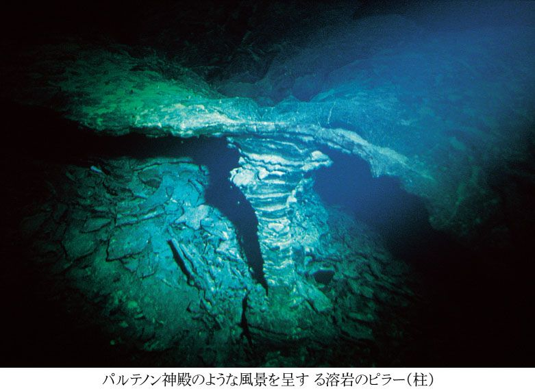
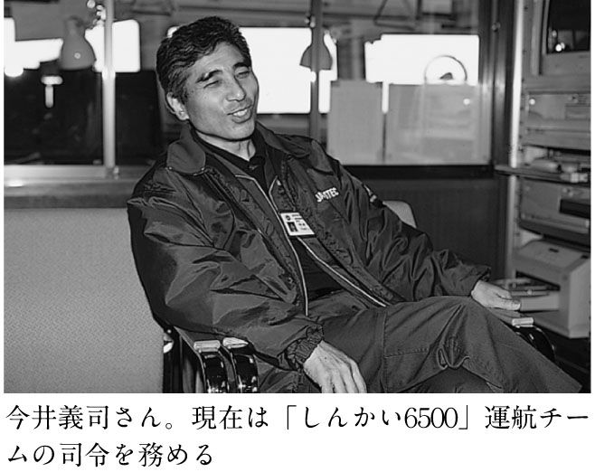
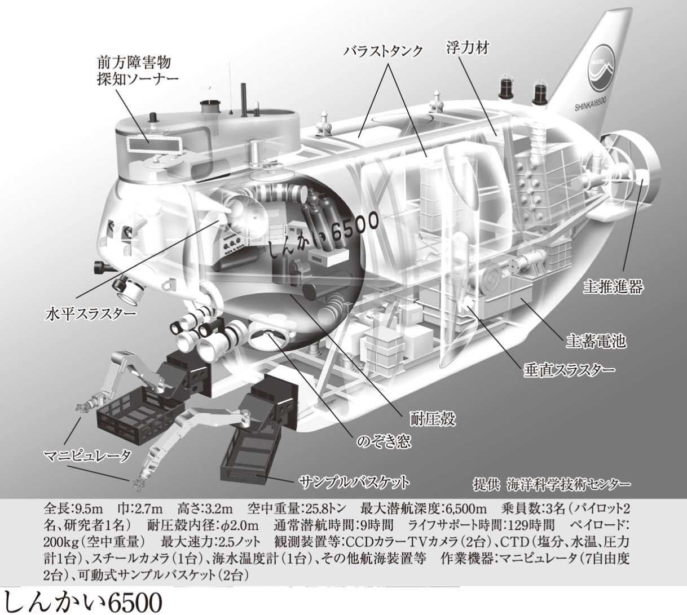
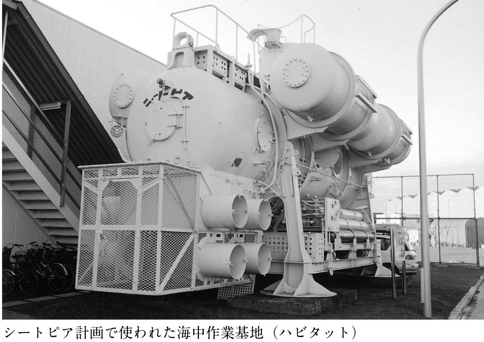

| 深海のパイロット～六五〇〇ｍの海底に何を見たか～ | |
| 藤崎 慎吾 & 田代 省三 & 藤岡 換太郎 | |
| (2003) | |


二〇〇二年一一月一一日、海洋科学技術センター（ＪＡＭＳＴＥＣ）の深海潜水調査船「しんかい二〇〇〇」は、相模湾で一四一一回目の潜航を終えた後、無期限に運航休止となった。とくに老朽化が問題となったわけではなく、特殊法人改革のあおりで予算がとれなくなってしまったことが直接の原因である。マスコミの論調では、これが事実上の引退ととらえられているようだ。実際は予算がつけば、いつでも動かせる状態で保管されている。しかし昨今の経済情勢において、今後の見通しが非常に厳しいのは事実だ。その前年の九月ごろ、休止が決まったという報に接した私は少なからぬショックを受けた。宇宙探査では欧米やロシアに大きく遅れをとる日本だが、深海探査であれば今や世界をリードする立場で、決して後退することなどないと思っていたからである。一方、世間の反応は今一つであった。そもそも「しんかい二〇〇〇」や「しんかい六五〇〇」という船が日本にあることすら知らない人も、けっこういる。少なくとも「Ｈ‐Ⅱロケット」よりは知名度が低いであろう。
潜水調査船とは何か。簡単に言えば、その名の通り潜水して海中や海底を調査する船である。よく潜水する船のことをひっくるめて「潜水艦」と呼ぶ人がいるけれども、本来、それは軍事目的で使われる船のことだ。潜水調査船は科学的知識を得るためや、資源探査などのために使われる。また潜水艦は深くてもせいぜい数百メートルまでしか潜れないが、潜水調査船には数千メートルの深海にまで潜れるものがある。したがって構造も大きく異なっている。この本を書いている二〇〇三年現在、四〇〇〇メートルより深く潜れる潜水調査船は、世界でも五隻しかない。中でもいちばん深くまで潜航できるのが日本の「しんかい六五〇〇」である。潜水調査船の名前くらいはどこかで耳にしていても、ここまで知っている人となると、少なくとも私の周囲には数人しかいない。
ましてや潜水調査船を動かしているのが誰なのかを知っている人などいるだろうか。日本の宇宙飛行士といえば誰でも毛利衛さんや向井千秋さん、若田光一さんといった方々の名前がすっと思い浮かぶだろうが、潜水調査船パイロットの名前を挙げろと言われてもお手上げだろう。深海も宇宙も、フロンティアという意味では同じである。どちらでも生身の人間は生存できない、苛酷な世界だ。巨大な水圧や電波が使えないなどといった条件を考えると、深海のほうがよりアクセスしにくい面もある。いずれにしても同じように危険を冒して人間の活動領域を広げることに貢献しているにもかかわらず、宇宙飛行士にはスター並みの知名度があり、潜水調査船パイロットは全く無名というのは、考えてみればおかしな話だ。
白状すると、かく言う私も、つい一昨年くらいまでは現役のパイロットに一人、陸上勤務をされている元パイロットに一人、かろうじてお目にかかったことがあるくらいであった。ＪＡＭＳＴＥＣとは一〇年近くものおつき合いがあったにもかかわらずである。しかも、ほとんど話はしていない。一方で毛利さんや若田さんとは数回お目にかかって、それなりに会話をしたことがあった。またパイロットの体験記や手記などが出版されているかというと、市販されている書籍という意味では井田正比古さんが『海──生きる、学ぶ、探る』（小島敦夫編、大月書店）の一部を担当されているのみで、ほとんど皆無と言っていい。だが宇宙飛行士に関する本は山ほどあるし、毛利さんや若田さん自身にも著書があって、私も読んでいた。そういった状況が「しんかい二〇〇〇」を休止に追いやった遠因ではないだろうか。
折しもスペースシャトルの事故などで、有人宇宙活動の将来が危ぶまれている。日本では、もともと独自の有人活動はなかったから、その実現がさらに遠のいているという感じだ。一方、深海でも主にコスト面から同様に有人活動の是非が問われている。こちらでは日本にも多くの実績があるので、せっかく積み重ねてきたものが失われてしまうのではないかという、より強い危機感を覚える。科学雑誌の編集者をしていた時代から、科学教育ソフトのプロデューサーをへて、作家となった現在にいたるまで、「しんかい二〇〇〇」や「しんかい六五〇〇」による写真やビデオはよく活用させてもらったし、私自身、楽しませてもらった。ここで恩返しというわけではないが、深海へ人が行くということの、わくわくするような面白さや素晴らしさを改めて多くの人に伝えたい。それが、この本を出そうと思った主な動機である。そのために、これまでは私自身も見過ごしてきた「深海のパイロット」という職業に注目してみることとした。
改めて言うが宇宙飛行士ばかりが現代の開拓者ではない。宇宙飛行士の数は日本では八人、全世界には二八〇人以上（ただし引退者も含む）いる。一方、深海潜水調査船のパイロットは日本では二〇人程度だが、全世界では四〇人前後しかいない。そういう意味では宇宙飛行士より特殊な職業だ。知られていないのも無理はないと言える。彼らがいったいどんな人で、どうやって深海へ行き、そして何を体験してきたのか。本書がそれを理解する一助となればと思う。幸いにも元ベテランパイロットの田代省三さんと、日本の地質学者としては最も多く深海を訪ねたことのある藤岡換太郎先生が、本書の趣旨に賛同して下さり、企画段階からご指導、ご協力いただくことができた。そればかりかプロフェッショナルな立場から本書の内容を深める原稿も書いて下さった。
ここで構成について一言説明しておくと、第一部は編著者である私が潜水調査船のパイロットや元パイロット、司令、支援母船の船長といった関係者の方々一〇人以上にインタビューし、得られた様々なエピソードを自分なりに整理して収録したものである。つまり基本的には聞き書きで、なるべく浅薄な私見など挟まないようにしたが、その並べ方やストーリーの語り方で、とにかく楽しんで読めるように工夫したつもりである。そして、もし読者が深海世界の旅を堪能して下さったら、ぜひ第二部で田代さんによる潜水調査船や深海探査活動の技術的な面も含めた解説を、お読みになっていただきたい。さらに深海そのものについて関心を持たれた方は、第三部で藤岡先生から主に「しんかい二〇〇〇」の科学的な貢献について興味深い話を聞くことができる。
もちろん、この順番に読んでいただく必要は全くない。もし潜水調査船あるいは深海について全くイメージすらわかないという方は、第二部や第三部を先に読んでから第一部に取りかかっていただいたほうが、いいかもしれない（第一部の中でもストーリーを理解するために最低限必要な知識は説明したつもりである）。また、ひととおり第一部から第三部までお読みいただき、また第一部に戻っていただくと別の楽しみ方ができるのではないかとも思う。
最後に混乱を避けるため「パイロット」という言葉の定義をしておきたい。本書に限らず現場でも、状況によってパイロットには二通りの意味が生じる。一つは当然、潜水調査船の操船をする人という意味だ。しかし、いったん潜水調査船の中に入ると、パイロットには船長という意味も生じる。これに対する言葉はコパイロット（船長補佐）である。しかしコパイロットも操船できるので、パイロットにはちがいない。したがって特に断りなく「パイロット」と言った場合は、パイロットもコパイロットも含めて潜水調査船を操船する人という意味だとご理解いただきたい。ただ船長を務められるパイロットと船長補佐しかできないパイロットには区別がある。このへんは航空機のパイロット（機長）とコパイロット（副操縦士）が、どちらもパイロットではあるものの、その資格に差があるのと同じである。
またパイロットは本来「水先案内人」という意味である。したがって本書のタイトル『深海のパイロット』には、潜水調査船のパイロットに限らず、海の深淵に私たちを誘う案内役という含みもある。つまり自分では潜らずに整備や航法管制をしている方々、支援母船の方々、あるいは第一部の第七章で取り上げる深海ダイバーも、みなパイロットだ。そこをご理解の上、お読みいただければと思う。
それでは皆さん、準備はよろしいか。いよいよ深海に潜航します。ベント開！
編著者
目 次
──潜水調査技術が確立するまでの苦労話、裏話
──潜水調査船パイロットが一人前になるまで
──マニュアルには書かれていないテクニック
──ハッとした体験、ヒヤリとした出来事
──印象に残っているダイブ、もう一度行きたいあの海
──将来の潜水調査船、未来への夢
──身一つで暗黒の海底を散歩できる飽和潜水
冒頭1、3点目、末尾３点の写真、本文写真
海洋科学技術センター提供（その他は竹内雅弘撮影）
本文イラスト
飯箸 薫
──潜水調査技術が確立するまでの苦労話、裏話
初潜航は、わずか二〇メートル
一九八二年一月二六日、冬の相模湾、初島沖──。穏やかに晴れた海上は、緊張と興奮に包まれていた。支援母船「なつしま」の格納庫から潜水調査船「しんかい二〇〇〇（以下、２Ｋ）」が、台車に乗せられてゆっくりと引きだされてくる。白い船体に真っ赤な昇降筒と垂直安定フィンが、まばゆく映えていた。そして「なつしま」の青いＡフレーム・クレーンに吊り上げられた「２Ｋ」は空の中に鯨のような船影を浮かべ、やがて波打つ鈍色の海へと下ろされていく。青いウエットスーツに身を包んだスイマー（ダイバー）たちがオレンジ色の作業艇で近づき、「２Ｋ」の上によじのぼった。そしてＡフレーム・クレーンからの吊り上げ索を取り外す。
「なつしま、しんかい、各部異常なし、潜航用意よし」
支援母船のブリッジにある管制室に声が響いた。
「なつしま了解、潜入せよ」
浮力を調節するメインバラストタンクから噴気を上げて「２Ｋ」は海面下に身を沈めていく。その様子を「なつしま」の人々は固唾を飲んで甲板から見下ろしていた。マスコミ関係者がチャーター船の上で、カメラの放列をつくっていた。着水作業を終えたスイマーたちも、「なつしま」に戻る作業艇の上から気づかわしげに振り返った。そして「２Ｋ」の船内では、当時のパイロット（船長）だった坂倉勝海さんが、感無量の思いに浸っていた。日本初の本格的な深海潜水調査船が、第一回目の訓練潜航を開始した記念すべき瞬間である。
水深六〇〇〇メートルまで潜れる潜水調査船を開発しようという計画は、一九六九年にスタートした。海底資源を探したり、地震のメカニズムを解明したりすることが目的だった。当時、すでにアメリカは初代の「アルビン」で、一八〇〇メートルの海底を自由に調査できるようになっていた。しかし日本もそれほど遅れていたわけではなく、一九五〇年代には北海道大学水産学部の「くろしお」が、海底の科学的な調査に活躍していた。一九六四年には読売新聞社の「よみうり」が完成し、六八年には海上保安庁の「しんかい」が初の試験潜航を行っている。ただ「くろしお」は二〇〇メートル、「よみうり」は三〇〇メートル、「しんかい」は六〇〇メートル程度までしか潜れなかった。それなのに、いきなり六〇〇〇メートルは無理だ、という意見が出て、まずは二〇〇〇メートルを目指すことになった。そして最終的には一九八九年に「しんかい六五〇〇（以下、６Ｋ）」が完成し、当初の目標を達成することになるのである。本書では深く立ち入らないが、この間のハード的な技術開発の経緯は『プロジェクトＸ 挑戦者たち ２ 復活への舞台裏』（日本放送出版協会）に詳しい。テレビで番組をご覧になった方もいるだろう。
坂倉さんが潜水調査船の開発に参加したのは一九七五年だった。一九七八年には「２Ｋ」の建造が開始され、一九八一年に竣工、開発を担当した三菱重工業から運航を行う海洋科学技術センター（ＪＡＭＳＴＥＣ）に引き渡された。計画参加から七年後の訓練潜航に臨み、坂倉さんは〈ベント弁を開いて潜航を始めた瞬間、長い間の苦労が一挙に吹き飛んだような気分を味わった〉と『潜水調査船「しんかい２０００」１０００回潜航記録』（海洋科学技術センター）で回想している。しかし、その気分は残念ながら、あまり長くは続かなかった。潜航からわずか数分後、水深一〇メートルあたりで、いきなり船内に警報が鳴り響いたのである。警報表示板は主電力ケーブル（母線）に海水が浸入し、絶縁が低下したことを示していた。
この絶縁低下は試験潜航のときから問題になっていた「２Ｋ」の弱点である。海水が入ったのはバッテリーなどにケーブルを差しこむコネクタからで、これは家庭の電気製品に用いられるソケットと同じものだ。ただし海水と電線とが接触しないように、まわりにゴムを接着してある。ところが、なぜかそこにじわりと水が入ってきてしまうのだ。最悪の場合は停電となるので、全ての動力や生命維持を電力に頼っている潜水調査船にとっては致命的である。ＪＡＭＳＴＥＣへの引き渡し前に、あれこれ接着剤を変えるなどして問題はなくなっていたはずなのだが、実際に潜ってみると解決されていないことが数分で判明したわけだ。
「母線絶縁低下、直ちに浮上する！」
警報の鳴り響く中で、坂倉さんは海上の「なつしま」にそう報告し、「ショットバラスト」と呼ばれる錘を投棄した。このときの水深は二〇メートル。「２Ｋ」の最低潜航深度記録で、運航休止になった今でも破られてはいない。いずれにしても無事、海面に浮上することはできた。
当時、コパイロット（船長補佐）として坂倉さんとともに「２Ｋ」に乗っていた田代省三さん（本書の第二部の筆者）は操縦席の下に座っていたが「何が何やらわからんうちに帰ってきた」という感じだったらしい。一方、整備士として運航チームに加わっていた櫻井利明さんは、このときスイマー役をしていた。真冬の海に飛びこんで着水作業を終え、「なつしま」に戻ってさあ一風呂浴びようとウエットスーツを脱いだ瞬間に、再び「スイマー、スタンバイ（準備せよ）」というアナウンスが流れたという。そして冷えきった体を暖める間もなく、緊急浮上した「２Ｋ」を揚収しに行かなければならなかった。
ともあれ、これが日本にとって本格的な深海探査史の幕開けだったのである。関係者はさぞかし前途多難に感じたことだろう。
その後、コネクタの問題については、水が浸入する経路を長くして電線に達するのを遅らせたり、ゴムの材質を変えたり、コネクタの金属表面をざらざらにして接着剤がよくつくようにしたり、といった工夫をこらして、ようやくまともに潜れるようになった。それでも時々、絶縁低下は起きたので、根本的な解決には至っていない。ただ履歴をとってみると合計で何時間潜れば水が浸入するかというのが、だんだんわかってきた。そこで浸入する前に、どんどん取り替えていこうということになった。後に超音波探傷技術なども導入して、毎年、全てのケーブルを点検し、怪しいものも取り替えることにした。これで事実上、問題は解決したのである。そして「２Ｋ」に教訓を得た「６Ｋ」では、コネクタを全部油漬けにする方式を採用したので、水の浸入は全くない。
侮れない職人技
絶縁低下のように深刻ではないが、最初のころは思いがけない故障に見舞われることがあり、色々と学ぶことも多かったようだ。
ある時「２Ｋ」の水中ライトが頻繁に破損するようになった。当時、深海用の水中ライトは水圧に耐えるようにするため、電球のまわりを厚いガラスの容器（グローブ）で保護していた。そのグローブが、なぜかよくひび割れるようになったのである。それまでは年間六〇～七〇潜航するうちに三、四個しか割れなかったのが、この時は一五回潜航する間に三個も割れてしまった。四倍以上の破損率である。組みこみ方に問題があるのかと細心の注意を払ってやり直しても、やはり結果は同じだった。調べてみると割れたのはストックしてあったものではなく、新しく納品された製品であることがわかった。そこでメーカーに問い合わせたところ、そのグローブは手作りで、最近、腕のいい職人が定年退職していたことが判明した。新しい職人によってつくられた製品も、見た目には以前と全く変わらない。しかし厚みが均等でなかったり、底の平らな部分が微妙に異なったりして、水圧の受け方に偏りを生じたことが原因と考えられた。当時、整備士だった今井義司さんは「ハイテクを誇る潜水船も、熟練した一人の職人の技に支えられていたのかと、今さらながら感心させられた」と述懐している。

また別のときには「２Ｋ」が潜航して上がってくると、外壁の一部が赤い油で覆われてしまう事態になっていた。どうやら補助推進器（スラスター）のあたりから作動油が漏れているらしいのだが、どの部分からなのか、すぐには特定できなかった。「２Ｋ」のスラスターというのは、やや乱暴だが大きな扇風機を想像していただければいい。それが船体の左右に一つずつあって、水平・垂直に九〇度、向きを変えることができる。「何回やっても原因がつかめなくて、いろんなことをやったんですけどもわからない。どこから漏れてるかと知りたくても水の中に油ですからね。空中だったら重力で下にしか漏れませんからね、ある程度漏れてるところはすぐわかるんですけど、水の中だとその油浮きますから、あっちこっちもう全体に広がっちゃうんですね」と、今井さんは当時を振り返る。結局、全部分解して調べてみたら、スラスターを九〇度回転させる装置に問題があった。油圧を保つため軸受け部分に組みこまれる「Ｖパッキン」という部品が、一つだけ反対になっていたのである。分解整備時にまちがえたのだろうが、たったそれだけのことで大量の油が漏れだしてしまった。深海というのは、機械にとっても苛酷な負担を強いられる環境なのだということがわかる。したがって当然ながら、整備も慎重の上に慎重を期さなければならない。
ところで先に職人技の話をしたが、最先端の機械を整備するときにも人間の感覚が欠かせない場合がある。例えば「２Ｋ」の補助タンク（これも浮力調整に使う）に水を出し入れする海水ポンプは、ピストン式のものが三本あるのだが、バルブの調子が悪かったりすると、そのうちのどれかが働かなくなることがある。そうすると排水や注水に時間がかかってしまうので修理しなければならないが、三本が全部止まっていることはないので、どれが悪いのかを特定しなければならない。このとき使われるのは聴診棒と人間の耳である。聴診棒というのは単なる細い金属の棒だが、その一端をポンプに当て、もう一端を耳に当てて、順番に三本の音を聞いていく。そして「こいつの音がおかしい」というのを分解して直すのである。「なつしま」の上で朝の点検時にそれをやり、潜る直前になってポンプだけ修理したこともあったそうだ。そういう話を聞くと「２Ｋ」あたりまでは、まだ我々に身近な機械なんだなという気がしてこないだろうか。「６Ｋ」になるとポンプも少し複雑になって、このような方法は使えないらしいが、今のところ故障したこともないという。
身近と言えば「２Ｋ」の水中ストロボの傘は、どこかで見たような形をしている。一般の人にも非常に馴染み深い物だ。もともとはアメリカのメーカーがつくったアルミ製の傘をつけていた。それが腐食してしまって、光の反射もあまりよくなかった。そこで今井さんはステンレス製のいい傘に取り替えたかったのだが、それだけ特注すると非常に高くついてしまう。何か代わりになるものはないかと思っていたときに、買い物をしようと入ったスーパーで、ふとステンレスのボウルが目に入った。台所で使う、あのボウルである。今井さんは、それを買ってきて自分で穴を開け、ストロボに取りつけた。完璧だった。以後、台所で卵や小麦粉やひき肉を入れられるはずだったボウルは、二〇〇〇メートルまでの深海で活躍することになったのである。
海面が見えているのに浮上しない
思いがけない事態が起きるのは、機械のせいばかりではない。人間の海に対する知識や認識の不足が原因になることもあった。
「２Ｋ」で最初のパイロットの一人だった井田正比古さんが、ある真夏に富山湾で潜ったときのことである。潜航調査を終えて海底から浮上してきたはいいが、水面のすぐ下まで来ると、なぜかぴたりと止まってしまった。「あの時はびっくりしたね。もうそろそろ水面に出ていいはずなんだけど、出ねえなって。上の母船で見てるやつからも（潜水調査船が）白っぽくなって見えてるんだけど、水面に浮いてこないんですよ」と井田さんは当時を振り返る。
ここで、ちょっと説明しておかなければならないが、潜水調査船というのは基本的には水面で浮くようにつくられている。中空の微小なガラス玉を樹脂で固めた浮力材が、船体のあちこちに詰められているのだ。それを「２Ｋ」の場合は鉄の粒からなる錘（ショットバラスト）を大量に（水中重量で約六〇〇キログラム）抱えこむことで、無理矢理、潜っていることになる。したがって、そのバラストを捨てさえすれば何の動力も使わずに、いやでも浮かんでしまうはずなのだ。そのへんがバラストタンクに海水を出し入れすることだけで潜航と浮上をくり返す潜水艦とは、ちがうところである。通常、潜水艦が潜る水深数百メートルまでの範囲だったら圧縮空気を送って海水をタンクから排除できるが、数千メートルになると周囲の水圧があまりにも高くて、それができない。そこで潜水調査船は金属のバラストを抱えて潜り、それを捨てて浮上するという段取りになる（ただしロシアの「ミール」という潜水調査船は強力な排水ポンプを備えており潜水艦方式で潜る）。逆に言えば、いったんバラストを捨ててしまうと、再びそれを補充するまでは二度と潜れないのだ。
それにもかかわらず水面下で止まってしまった「２Ｋ」には、いったい何が起きたのか。ヒントは潜ったのが「真夏」の「日本海」だった、ということである。
海の鉛直方向での温度分布を測ってみると、海面から水深五〇〇メートルくらいまでの間は急激に下がる。それから五〇〇〇メートルくらいまでは徐々に下がっていく。この変化は夏ほど大きく、また太平洋より日本海のほうが大きい。例えば海面で三〇度Ｃ近かったのが、太平洋では二〇〇〇メートルで二度Ｃ前後となる一方、日本海では五〇〇メートルで〇・五度Ｃ前後になり、一〇〇〇メートルで〇・二度Ｃくらいになってしまう。海面では夏でも、海底は真冬なのだ。潜水調査船にはヒーターなどついていないから、汗をかきかき乗りこんだ人も、そのままでは海底に着くころには寒さに震えていることになる。だから実際には防寒具を持ちこんでいなければならない。
しかし潜水調査船に防寒具を着せるわけにはいかないから、海底にいる間に船体は冷えきってしまう。すると潜水調査船がいかに金属の固まりであったとしても、縮んで体積は減る。「水の中の物体は、それが押しのけた水の量だけ軽くなる」というのがアルキメデスによって発見された浮力の原理だから、体積が減れば、それだけ浮力も減るのだ。つまり潜航する前は、ちゃんと海面上に浮かぶようになっていた潜水調査船も、冷えきったまま上がってくると海面から出られないという事態が生じうる。また水は温度が低いほど密度が高く、密度が高いほど物体に作用する浮力は大きい。したがって温度差が激しいと、たとえ物体が同じ体積だったとしても海面では浮力が減る。それも原因の一つだったと考えられる。こういうことも実際、潜ってみるまでは気づかないものなのだ。
さて水面下で止まってしまった「２Ｋ」だが、船内では「なぜ上がらないんだ？」と首を傾げる一方、母船の上では「あいつら何遊んでんだ？」と眉をひそめる場面が続いた。しかし心配するような事態ではなく、最終的にはバラストタンクに空気を入れることで、すぐに浮上できた。原因がはっきりわかるまでに、そんな経験を何度かくり返したという。
これとは逆の事態が生じることもある。つまり海面で暖まったまま潜っていくと、冷たく密度の高い深海では浮力が微妙に大きくなって、底へ着くまでに予想より時間がかかったりするのだ。だから今では初めての海域で潜る場合、ＸＢＴという使い捨ての温度計を沈めて調べた鉛直方向の水温勾配なども参考にして、潜航計画を立てるようになっている。
こうしたことからもわかる通り、潜水調査船の浮力調節というのは微妙なものだ。乗る人間や持っていく荷物の重さも当然、考えなければならない。潜水調査船自体の空中重量が二四トンもあるから、数キログラム程度増減したって、どうということもないように思えるのだが、そうでもないらしい。実際には乗組員の体重や持っていく観測機器などの重さはもちろん、船内に持ちこむカメラにいたるまで、一〇〇グラム単位で事前に計測する。それから必要なバラストの量などを計算することになっている。このとき、やっかいなのは、乗せるのが女性だった場合だ。井田さんによると例えば「三年前に来た時よりも絶対太ってるのに体重を申告させると前のままで、『そんなわけないだろう、はかりに乗れ』って言ったら『いやだ』って（笑）。だけど、それは絶対ごまかせないんですよ。実際、潜水船で行って海底での浮力調整をしてみれば簡単に出てくるんですよ、後で。『やっぱりな』って（笑）」ということになるそうである。
最初で最大の危機
潜水調査船のパイロットたちは、よく人から「怖い目にあったりはしませんでしたか」と聞かれるそうである。かく言う筆者の私も、そういう質問を何度もしてしまった。何しろ宇宙船と同様、普通の人が行かないようなところへ行く船なものだから、どうしても「アポロ一三号」のようなドラマを期待してしまうのは致し方ない。しかし残念......いや幸いなことに日本の潜水調査船と、その運航チームというのは非常に優秀で、絶体絶命といったような事故はまだ一度も起こしたことがないのだ。「２Ｋ」と「６Ｋ」合わせて、これまでに二一〇〇回以上も潜っているのだから、これはすごいことだと思う。
とはいえ冷や汗をかくようなことが全くなかったというわけでもない。そういった話は第四章にまとめてあるが、中でも「あれだけは、ほんとうに危なかった」と言われている出来事を、ここで先に紹介しておこう。なぜなら、これも深海探査を始めたごく初期に起きたことで、海に関する知識の不足が原因であり、後に大きな教訓を残したからである。
それは一九八三年七月二五日、やはり富山湾でのことだった。通算で七〇回目の潜航だったが、科学的な目的で潜る「調査潜航」としては、まだ三回目である。それまでの約一年半は、運航チームやＪＡＭＳＴＥＣ関係者だけを乗せて潜る「訓練潜航」や「試験潜航」しか行ってこなかった。つまり、これからがいよいよ「本番」というところだったのである。
空は曇っていたが暑い日だった。風はやや強く波も立っていたが、うねりはほとんどない。悪いコンディションではなかった。当時コパイロット（船長補佐）だった田代さんは、パイロット（船長）の坂倉さん、そして石川県水産試験場の研究者一人とともに、いつもと同じ気分で「２Ｋ」に乗りこんだ。目的は海底に住んでいる生物の調査である。午前九時五七分に潜航を開始し、一〇時四四分に五八六メートルの海底に到着した。それから時速約一ノットのスピードで平坦な海底を這うようにしながら、様々な生物を観察していった。田代さんは研究者と並んで床に腹ばいとなり、窓から外を見ていた。坂倉さんは操縦席に座っている。しばらくすると田代さんの目に四角い籠が映った。金属枠にネットを張ったもので、大きさは石油の一斗缶の一・五倍くらいだった。ベニズワイガニやバイ貝を捕るための漁具らしい。籠にはロープがついていて海面の方向へ延びているのもわかった。しかし「２Ｋ」の張りだした船首部分、通称「おでこ」がじゃまになって、ロープの先がどうなっているのかは、わからない。そして当時の田代さんには漁具の知識など全くなかった。
「ああ仕掛けがあるな」と思いながら籠の脇を通り過ぎて少し行くと、また同じ籠がもう一つ見えた。「こっちにもあるな」と思って、そのまま進んだ。
「おかしいな、前進三速なのに速力がでない」
しばらくすると坂倉さんが不安そうに、そうつぶやくのが聞こえてきた。「２Ｋ」は連続的に速度を調節することができず、前進四段、後進二段を切り替えるようになっている。前進四速というのは緊急時にしか使わないので、三速は通常時の最高速度だ（それでも時速二ノット程度だが）。始めは一速で走っていたのが進まないので、二速、三速と、だんだんに速度を上げていったらしい。それでも思うように前へ進まないのだ。
やがて前進三速の回転数で主推進器のプロペラを回しているにもかかわらず、「２Ｋ」はぴたりと止まってしまった。恐る恐るプロペラを止めてみると、なんと「２Ｋ」はすごい勢いで後ろへ引き戻されてしまうではないか。ここに至って田代さんたちは、ようやく自分たちが何かに引っかかってしまったことに気づいた。
これは後でわかったことだが、このとき「２Ｋ」は富山湾でよく使われている「かごなわ」漁具に引っかかってしまったのである。これは餌を入れた籠を延縄式に連結して海底に沈め、エビやバイ貝、ベニズワイガニなどを捕るための漁具だ。一〇〇〇メートル以上にもなる幹縄から一定間隔で枝縄を出し、その先に籠を取りつけてある。全部で一〇〇個以上の籠が海底に並ぶことになる。幹縄と枝縄の分岐点には浮きがついているため、幹縄は海中に浮んで横方向に延び、そこから枝縄が垂れ下がっている形になる。枝縄の長さは数メートルだ。幹縄の両端には錨がついていて、海底に接している。また、その両端からは瀬縄が海面に延びていて、漁船からの目印となるブイにつながっている。しかし何らかの原因で、このブイが失われてしまうと、仕掛けがどこにあるのか全くわからなくなってしまう。このような「捨て漁具」は、潜水調査船にとって非常に危険な海の罠なのである。もちろんブイがちゃんとついていたら、このような海域には潜らなかっただろう。「２Ｋ」は枝縄と枝縄の間を通り抜けて、垂直安定フィンを幹縄に引っかけてしまった。そのまま強引に前進したが、途中で幹縄の張力に負け、引き戻されてしまったのである。
ショットバラストを捨てて「２Ｋ」は上昇を開始した。このときの水深は五百数十メートルだったと田代さんは記憶している。しかし垂直安定フィンに幹縄が絡んだままなので、だんだん前上がりの傾斜がついてきた。そのまま二〇度くらい傾いてしまい、船内では何かにつかまっていないと耐圧殻の後部に落ちてしまいそうな感じになった。田代さんはバッテリーが心配だった。あまり傾いてしまうと電解液が外へこぼれだしてしまうかもしれなかったからだ。そのうち皆の注視する深度計の針が、五〇〇メートルちょうどで止まってしまった。たった数十メートルで、もう上昇できなくなってしまったらしい。しかも針はゆっくりと逆方向へ戻っていく。また沈んでいるのだ。言葉には出さなかったものの、このとき田代さんたちは致命的な事態になることを覚悟したという。しかし慌てずに外の水中ライトや船内の不要な照明を全部消すなどして電力を節約し、持久戦に備える処置をした。
ここで「２Ｋ」の救難安全装置について、少し説明しておこう。
何千メートルもの深海に潜ると聞けば、水圧で押しつぶされたり浸水してしまうような事故を想像するかもしれないが、人間が乗る耐圧殻は非常に丈夫なので、まずそういうことは起きない。実際、世界中でもまだ起きたためしがない。それより危険なのは海底で何かにからまったり故障を起こしたりして、浮上できなくなることだ。しかしパイロットとはいえ人間なので、最初のころは素人のような心配もしたらしい。「２Ｋ」を引き渡された翌年で、まだ訓練期間中だったある日、田代さんは坂倉さんや当時の整備長と潜航した。すると、しばらくして窓枠に水が溜まってきた。その水を舐めてみた整備長が「塩っぱかった」と言ったから、さあ大変。すわ浸水かと大騒ぎになりかけたが、実際は海水に冷やされた耐圧殻の壁に空気中の水分が結露して、下の方にある窓枠に溜まってしまったのである。
さて「２Ｋ」が浮上できなくなってしまった時、まず何をするか。もちろんショットバラストは捨てる。それでも上昇できなければ、マニピュレータや採集物入れ（サンプルバスケット）、ドロップウエイトなど重量物を合計八〇〇キログラム投棄できる。それでも動けなければ海面に救難ブイを打ち上げる。支援母船「なつしま」は、そのブイから「２Ｋ」につながっているケブラー索（一種のナイロン糸）にそって丈夫なワイヤーを下ろし、船体を引き上げるのだ。また乗組員の生命維持のためには、通常の運航時間（約八時間）に加えて、七二時間は酸素補給や二酸化炭素の吸収をできるようになっている。たとえ耐圧殻内の空気が吸えなくなっても、緊急用の呼吸器が備えてあり、これでさらに数時間は息ができる。ちなみに「６Ｋ」も、ほぼ同様な救難安全装置を備えており、しかも一二九時間の生命維持能力がある。
このように二重三重の安全策がとられていることを考えれば、富山湾で漁具に引っかかったときも、まだそれほど切羽詰まった状況には至っていなかった。しかし実際に船内にいる人間にとっては、死が頭をよぎったとしても無理はないだろう。何しろ太陽光が届かず照明も落とした状態では内も外も真っ暗で、海面は五〇〇メートルも上なのだ。しかし乗せている研究者には（何の根拠もなかったのだが）「もうしばらくすれば大丈夫ですから」などと声をかけて、落ち着かせるようにしていたという。
「２Ｋ」が再び沈み始めたとき、通常五〇〇メートルというような水深ではやらないことだが、坂倉さんがメインバラストタンクに高圧空気を入れてみた。これがきいたのか、あるいは一度張った幹縄の反動に船体の浮力が勝ったのか、また「２Ｋ」はゆっくりと上昇し始めた。固唾を飲んで深度計を見つめる三人──。針は今にも止まりそうな頼りない動きで、浅い方へと回っていく。四五〇メートル......四〇〇メートル......三五〇メートル......三〇〇メートル......。そして二〇〇メートルを越えると、メインバラストタンク内で膨張していた高圧空気が浮力を高めて、かなり上昇速度がついてきた。そして午後三時一三分に何とか浮上に成功。「海面付近で潜水船の小さな窓からもれてくる太陽光線のまぶしかったことを、今でも昨日のことのように覚えている」と田代さんは述懐している。
海上に出てきた「２Ｋ」の姿は悲惨なもので、背中に数本のロープを引っかけ、主推進器のプロペラにもからんでいた。「２Ｋ」からの連絡で待ち受けていた自衛隊出身の屈強な若手ダイバーが、その背中に飛び乗る。そのとき太いロープが船体の上で、左右にぐんぐん滑っていたという。それをナイフやカッターで断ち切り、無事、揚収することができた。
振り返って幸運だったなと思われることが二つある。
一つは引っかかったのが、おそらく幹縄の真ん中あたりで端っこではなかったことだ。つまり、ある程度、縄にたわみがあったことで、うまく海面まで引っぱり上げられたのかもしれない。これが端っこでアンカーのきいている場所だったら、もっと難しかった可能性がある。もう一つは五〇〇メートルという水深だ。「２Ｋ」がメインバラストタンクに入れる気蓄器（高圧空気ボンベ）の空気は二〇〇気圧である。もし水深が二〇〇〇メートルだったら周囲の水圧も二〇〇気圧あるので、空気は出ていかない。しかし五〇〇メートルなら五〇気圧なので、四分の三の空気を出すことができる。大した浮力ではないが、それが生死を分けたのかもしれない。
いずれにしても問題は、初めて潜る海域だったにもかかわらず事前の調査が十分でなかったことにある。潜水調査船の運用技術だけでなく、潜航海域や漁業について、もっと知らなければならないという教訓が得られた。この出来事以降、漁業の盛んな水深一〇〇〇メートルより浅い海域で潜航する際は、「ドルフィン‐３Ｋ」のような無人探査機を先に潜らせて潜航ルートの安全を確認し、漁業に関する情報を入手するとともに漁業者にも潜航することを伝えて協力を仰ぐことにしているそうだ。そのため同様な事態は二度と起きていない。
なお、これには後日談がある。
富山湾には、この時以降も何度か潜っており、そのたびに石川県水産試験場にも誰か一緒に潜る人はいませんかと声をかけていた。しかし無理もないが、なかなか志願者は現れなかった。そのうち、あまり断ってばかりいるのも悪いと思ったのか、副所長が意を決して潜ると言ってきた。田代さんたちは素直に喜んだのだが、潜航の前日になって「すみません、親戚に不幸があり......」。結局、同試験場の研究者が再び「２Ｋ」に乗ることはなかった。
現地調達の材料で即席の熱水採取装置
深海探査を始めたころは、当然のことながら研究者にとっても新しい発見の連続だった。海底で何に出くわすかわからないから、何を持っていったらいいかわからない。いざというときに必要な道具がなくて困ることもよくあった。しかしパイロットをはじめとする運航チームの創意工夫で、うまく成果を上げられた例もある。
一九八九年六月一二日、沖縄本島の北西沖を「２Ｋ」で調査していたとき、大きな発見があった。海底から煙突のようなものが突きだして（これを「チムニー」と呼ぶ）、そこから真っ黒な熱水が噴出していたのである。これは一種の温泉で「ブラックスモーカー」と呼ばれている。日本で見つかったのは初めてであった。このときの経緯は第五章で詳しく述べる。また科学的な意義は第三部を参照されたい。本章でお話しするのは、発見した後にどうしたかである。
問題の海域に熱水が噴きだしているところがあるのではないか、というのはある程度予想されていた。当然、研究者としては、そういう場所を発見したいという気持もあって潜っていたのである。しかし実際に発見してしまって、はたと困った。外国の文献等による知識からブラックスモーカーらしいということはわかったものの、それを観測するための道具をほとんど持ち合わせていなかったのである。せめて温度くらい測ってみたいが、こういう場所の熱水は三〇〇度Ｃにも達すると聞いている（高圧下の水は一〇〇度Ｃ以上になりうる）。そんな高温まで測れる温度計は用意していない。そもそも潜水調査船を熱水に近づけたりして大丈夫だろうか。アクリル製の窓が溶けたりはしないだろうか。何しろ初めてなものだから、そのようなことも懸念された。かといって、せっかく見つけたものに何も手出しできないまま帰るわけにもいかない。
そこで発見の翌一三日は、先に鉛や半田、ビニールテープなどを巻いた二メートルくらいの棒を「２Ｋ」の「おでこ」に取りつけて潜った。その棒をブラックスモーカーの噴出孔に差しこんだのである。すると鉛は溶けなかったが半田は溶けたので、熱水は二〇〇～三〇〇度Ｃだろうという予測が立った。
一六日に行われた三回目の潜航では、熱水の採取が試みられた。アメリカの「アルビン」が使ったという大型の注射器のような採水器を、マニピュレータでブラックスモーカーに近づけようとしたのだが、うまくいかなかった。「２Ｋ」の「おでこ」は耐圧殻よりも前に出っ張っていて、その下に様々な機器を取りつけてある。そして耐圧殻の下あたりから伸びているマニピュレータは、「おでこ」の前端までしか届かない。つまりマニピュレータで採水しようとすると、ブラックスモーカーを「おでこ」の真下に入れなければならないのだ。しかし地形が複雑で潮流も強く、またマニピュレータの動きはぎこちないので、採水するには「２Ｋ」を着底させて安定させなければならない。すると海底から「おでこ」下面までの高さ（約一・五メートル）が問題となるが、煙突のようなブラックスモーカーは、それより低いものの作業するのに十分な余裕はとれない。それに熱水で「おでこ」下の機器が損傷しても困る。したがって残念ながら採水はあきらめざるをえなかったのだ。
解決策を検討した結果、温度を測ったときと同様、「おでこ」に二メートルの採水パイプを取りつけて、なおかつ船内からの操作でそれを上下できるようにするのが最良ということになった。しかし「２Ｋ」は、あと数日潜ってから、充放電などの電池整備をするため那覇に立ち寄ることになっている。整備に必要な期間も含めて約二週間後に再び戻ってくることはできるが、今からそのような装置をメーカーに発注していたのでは間に合わない。しかし先々のスケジュールがあるので、このチャンスを逃せば、次にここで潜れるのは一年後になってしまう。それは研究者にとって受け入れがたいことであった。
そこで整備士だった今井さんは那覇に着くと、市内を駆け回った。そして町工場や自転車屋から、中古の歯車やチェーン、スプロケットなどを買い集めてきた。それらを「なつしま」に積んでいた水中電動モーターや様々な部品と組み合わせて、電池整備をしている間に、何とか採水パイプを電動で上げ下げできる装置を製作したのである。その装置に取りつけるパイプや深海用水中ポンプ、高温温度計などは、研究者が別途用意してきた。温度計の選択には、鉛や半田を溶かす実験が役に立った。
七月一二～一四日の三日間、研究者と「２Ｋ」のチームは、再びブラックスモーカーの温度計測と熱水採取に挑戦した。着水して海上から潜航するときはスイマーの邪魔になるので、採水パイプは下に向けておく。現場に着いてから、その角度を調整し、パイロットは「２Ｋ」を水中に浮かせた状態で左右の位置決めをしながら、パイプをブラックスモーカーの噴出孔に差しこんだ。ちょうどハチドリがホバリングしながら、細長いくちばしを花弁の中に入れて蜜を吸っているような状況を想像していただければいいだろうか。船を安定させるため、その後で着底したが、それでうまく温度計測と採水に成功したのである。熱水の温度は三三〇度Ｃ前後もあることがわかった。もちろん日本では初めての成果である。
最新鋭「しんかい六五〇〇」の登場
潜水調査技術を確立するため「２Ｋ」で試行錯誤を重ねている間に、「６Ｋ」と支援母船「よこすか」の開発も進んでいた。そして「６Ｋ」は一九八九年一月に完成、八月の試験潜航では六五二七メートルの海底に達した。このとき日本は、世界最高の潜航能力をもつ潜水調査船を手に入れたのである。翌一九九〇年六月からは「よこすか」と「６Ｋ」による訓練潜航が開始された。このとき井田さんや田代さんを含む「２Ｋ」運航チームの一部が「６Ｋ」に移って中核メンバーとなった。
当時の状況を井田さんは次のように振り返っている。「大きなトラブルはなかったですね、最初から。やっぱり『２Ｋ』の経験が生きてるというか、造る側もそうだし、われわれ動かすほうとしても、それを十分踏まえてやってましたから、最初からフルスロットルですよ。『６Ｋ』の時はもう訓練期間も半分くらいから一気にすぱっと行いましたから。みんなチームの連中も『２Ｋ』からピックアップして、フレッシュマンもいましたけど、ほとんど核になる人間はそういうことではできあがってましたからね。『２Ｋ』での経験があるから、後はシステムの違いだけ身につけてさえしまえば、潜水船での海底での仕事に関しては、そんなに違いはありませんから」
確かに「２Ｋ」での経験を生かして造られた「６Ｋ」は、操縦性という面では圧倒的によくなっている。まず「２Ｋ」には左右に一つずつしかないスラスターが「６Ｋ」では全部で三つになり、主推進器の首振り角度も広がって小回りがきくようになった。推進速度（プロペラの回転数）も「２Ｋ」では四段階のステップでしか調節できなかったのが、「６Ｋ」では無段階で連続的に調節できる。
そして「２Ｋ」では一本しかなかったマニピュレータが二本になっている。要するに片腕が両腕になったわけで、これがいかに便利かは誰でも想像がつくだろう。その操作方法も進歩している。「２Ｋ」ではラジコンのようなトグルスイッチで動かしていた。一方「６Ｋ」ではマニピュレータと同じヒンジ（関節）をもった二本の棒を手で曲げたり伸ばしたりすると、その通りにマニピュレータが動いてくれる「バイラテラル方式」を採用していた。つまりロボットを操るのに、それをミニチュアにした人形を手で動かすようなもので、感覚的にわかりやすい。また細かいことを言えば「６Ｋ」の「おでこ」は「２Ｋ」ほど出っ張っていないので、マニピュレータは船の前端より前へ伸ばすことができ、ブラックスモーカーで苦労したような事態は生じにくいと思われる。
もちろん世の中いいことずくめ、ということはあまりない。「６Ｋ」の場合も、ある意味で少々「凝りすぎている」面が見られた。
マニピュレータにしても、最初の「売り」はワイングラスを割らずに持って並べられるくらい精妙な動きができることだった。その一方で、あちこちに色々な安全装置がついていて、一定以上の力がかかると油圧が落ちてしまうようになっていた。つまり作業をしている最中に、ちょっとどこかをぶつけたりして余分な力がかかると、持っているものを離したりしてしまうのである。デリケートすぎるのだ。これでは困る。何しろ海底では重い石を拾ったり、ときには岩の表面をつかんで、べりべりと剥がすようなサンプリングもしなければならない。ワイングラスをそっと運ぶような作業は、むしろ少ないのだ。しかも、このマニピュレータはアルミ製で腐食も激しかった。

田代さんたちは「６Ｋ」の引き渡しを受けたときから、マニピュレータを取り替えてほしいと毎年、嘆願書を出していたという。しかし、やっとアメリカ製の丈夫なマニピュレータに取り替えられることになった年に、田代さんは陸上勤務を命じられてしまった。これには「むっとした」という。そのせいか最初のマニピュレータについて語る田代さんの口調は非常に厳しい。例えばバイラテラル方式にしても「要するに感触をフィードバックする最新型だ、というのが売り物だったんです。あったでしょ、工業用なんかで、つかんだ加減がわかるというの。ところが、これ、マスターアーム（手で動かす方）が陸上なら人間の腕に同じくらいの長さのアームを装着して動かすんだけど、（耐圧殻内には）そんなにスペースがないから、そのマスターアームをこれだけ（長さ三〇センチメートルくらい）にしちゃったんですよ。だから動きが悪いし、おまけに握った感触というの、フィードバックどうするか。単なる音だけなんですよ。ピーピーピー（笑）。ピーピーでどうせえというんだ（笑）」といった調子である。
同じような問題はソーナーにもあった。
「６Ｋ」ではハッチ入口の前あたりに観測ソーナーがある。これは主に前方の障害物を探知するもので、「２Ｋ」では同様な役目をずばり前方障害物ソーナーが行っている。観測ソーナーにも最新技術による「売り」があった。何と音響写真が撮れるのである。すなわち障害物に当たって跳ね返ってきた音を解析し、画像にすることができるのだ。産婦人科などで胎児の様子を見るのに超音波が使われているのをご存知の方は多いだろう。基本的にはそれと同じことを、一五〇メートルくらい先までの障害物に対してできると考えていい。つまり障害物の有無や、そこまでの距離ばかりでなく、形状もわかるというのだ。これは一見、便利なようだが致命的な欠点は、一五〇メートルでは近すぎることだった。パイロットとしては一〇〇〇～一五〇〇メートル先に障害物があるかどうかを知りたい。それより一桁低い一〇〇～一五〇メートルまで来てようやくわかっても、潮流などの関係によっては手後れということもありうる。前方障害物ソーナーが別にあって、主に研究用途で観測ソーナーのようなものが使われるのならいいのかもしれない。ただ両方の役目を観測ソーナーに負わせることには問題があったのだ。
ここでまた田代さんの辛口批評を聞いてみよう。「当時、そういう（観測ソーナーを使った）実験とか行ってみたんですよ。水槽の中で、このソーナー入れてですね、反対側に何か物を入れて、形がわかると。『じゃあ、今からこのゴジラの人形を入れますよ』とパッと入れたら、『どうです、ゴジラでしょう』って。ゴジラってわかってるから、これゴジラ（笑）......。初めて出てきて、これがゴジラってわかるか（笑）」と、そういったものだったらしい。「それも、私一番最初から、このマニピュレータと一緒に、替えてくれ、替えてくれ（と嘆願して）、苦節五年、やっと替えてくれたら（陸上勤務にされてしまった）」
ここで不思議なのは、なぜ引き渡しを受けるまで田代さんたちが、そういった問題を知りえなかったのかということだ。確かに井田さんらが要望を出すことによって「２Ｋ」での経験を生かしている面もある。しかし一方で、全くパイロットの使い勝手を考えていないような面もある。そのへんは本書の趣旨ではないので深く追及はしないが、特殊法人のＪＡＭＳＴＥＣも、やはり役所のような縦割り組織である。潜水調査船を開発する部署と、それを運航する部署とは全く別で、パイロットたちが開発にまで深く参加するのは難しかったらしい。「その（引き渡し）前から参加させてくれればいいのに、なかなかね、そうはいかないですね。できあがってきたら、もう一生懸命（笑）なんとかして使うだけでね」と今井さんは言っている。パイロットが苦労するのは天気や海況のせいばかりではないらしい。
ともあれマニピュレータも観測ソーナーも取り替えた今は、申し分のない潜水調査船になっている。もちろん贅沢を言いだせば、きりはないが、そのへんはこれからの課題として第六章で取り上げることにしよう。
ここでつけ加えておきたいのだが「６Ｋ」が出てきたことで「２Ｋ」がすっかり色褪せてしまったわけではない。「２Ｋ」には「２Ｋ」にしかない良さがある。例えば整備士から後にパイロットになった櫻井さんは、次のように話している。「私が『２Ｋ』で好きなところは、始めから二パイロット（船長と船長補佐）、一オブザーバー（研究者・観察者）でつくってるんで、（パイロットの）一人はいつも椅子の上。あと（もう一人の）パイロットと研究者は腹這いになって寝そべって海底を見るんですけど、下のフロアを二人で使えるんですね。二人で使えるんで居住性もいいし、長期の観察には腹這いになって見てるほうが体の負担も少ない。それから窓の配置が真ん中寄りなんですね。だから共通視界があって研究者とパイロットとが、ある程度同じ視界の下に意見交換ができる。『６Ｋ』は完全に離れちゃってるんです。全く共通視界がない。研究者の見てる物とパイロットの見てる物とは違うんですよね。ということで一番気を使うのは、どうしても前向きに走っちゃいますから、これはちょっと止まったほうがいいのかなというのは、いちいち研究者に声をかけて確認してもらうんです。『こんなものがありますけど、どうしますか？』って。もしくは研究者が何か見つけても、それを確認して止まるまでに、タイムラグがどうしてもできちゃうんですよ。研究者が『何かある』って言って、研究者の窓を見て、確認して止まるまでに結構走っちゃいますんで、そういう不具合があるかな。そのかわり『６Ｋ』の場合は、一パイロットで潜れるような構造にはなってるんですけどもね」
補足すると「６Ｋ」には椅子がなく、二人のパイロットと一人のオブザーバーが同じフロアの上に座るか寝そべることになる。通常はパイロット（船長）が腹這いになって中央の窓を見ながら操船し、オブザーバーはその左隣に横たわり、コパイロットは右後ろあたりでカメラの箱を椅子代わりにして座っているそうだ。
このほかにも「生物調査に関しては『２Ｋ』の窓のほうが、いいんですよ。それはというと下向きについてるんですね。しかも海底までの距離が低いんですよ。『６Ｋ』はかなり高い位置についてるんです。ですから海底までの距離が長くなっちゃう。ですから船内から（海底にいる）生物の写真を撮ろうとした時には『２Ｋ』のほうがきれいな写真が撮れる。もう一つあるのは『２Ｋ』は（最大潜航深度の水圧が）二〇〇気圧ですから、窓の歪みがそんなにないんですよ。『６Ｋ』の場合は圧が高いために窓の歪みが大きくなるので、なかなか均等になった写真が撮りづらい」といったことがあるようだ。
ライバルは「アルビン」チーム
「２Ｋ」で経験を積み「６Ｋ」という最新鋭の潜水調査船を手に入れたパイロットたちの目は、否応なく世界に向けられた。実際「２Ｋ」で潜航していたのは、ほとんど日本の周辺海域だけだった。それが「６Ｋ」では半分くらいが海外での調査になっている。
当時は、そして今でもそうだが、数千メートルも潜れるような深海潜水調査船は世界でも数少ない。「２Ｋ」と「６Ｋ」を除いて現在二〇〇〇メートル以上潜れる船をざっと挙げてみると、アメリカの「アルビン」（最大潜航深度 四五〇〇メートル）、「パイシーズⅣ」「パイシーズⅤ」（同 二〇〇〇メートル）、フランスの「ノチール」（同 六〇〇〇メートル）、「シアナ」（同 三〇〇〇メートル）、ロシアの「ミールⅠ」「ミールⅡ」（同 六〇〇〇メートル）、くらいである。
この中で最も活躍してきたのは、やはり「アルビン」ということになるだろう。潜航深度こそ四五〇〇メートルまでだが、数々の発見をしてきた功績は大きい。そこで日本のパイロットたちにとっても「アルビン」の運航チームというのは、次に目指す山の頂と見えてきた。一九九一年に「２Ｋ」から「６Ｋ」のパイロットになった赤澤克文さんは次のように振り返っている。「そこは常に目標にありましてね。まだ『２Ｋ』にいた頃というのは私たちもそうですし、研究者もそうだし、自分たちは潜水船を動かすのが精一杯だったんだけど、結局『６Ｋ』になった時に何ができるかといったら、もういろんなところに行ける。海外にも行ける。となれば自ずと外国の潜水船と同じ土俵で潜ることが絶対出てくるだろう。その時に、やっぱり井田さんを中心として『俺らは世界一になろうな』みたいなことを言ってましたから」
そのうち研究者の中にも、つき合いが増えて外国の潜水調査船に乗る者が出てきた。すると、それまでは「乗って、見て、帰ってきたら、それで納得してた」研究者も、だんだん「『アルビン』はこういうことができたんですけど」「『ノチール』はこんなことしてきた」などと言うようになってくる。すると次の言葉は「『６Ｋ』にはできないの？」になるわけで、それはパイロットにとってもすごく刺激になったという。
そして「同じ土俵で潜る」機会は意外と早く巡ってきた。
一九九四年夏、ＪＡＭＳＴＥＣはアメリカのウッズホール海洋研究所（ＷＨＯＩ）とともに、大西洋中央海嶺を調査することになったのである。ＷＨＯＩとはまさに「アルビン」を擁する研究機関だ。そこの研究者も「６Ｋ」に乗ることになる。「６Ｋ」と「アルビン」のジョイントダイブも計画されていた。
中央海嶺とは地形的には海底の山脈だが、そこでは海洋底の拡大という現象が起きている。海底が山脈の真ん中を通る谷（中軸谷）に沿って裂け、年間数センチメートルの割合で両側へ移動しているのだ。その隙間には地下からマグマが上がってきて固まり、新しい海底が生まれている。当然、ブラックスモーカーのような温泉も、あちこちに湧いている。そういう場所を調べるのだ。
幸いなことに前半の一五回の潜航は天候にも恵まれ、全て順調に潜ることができた。その後、いったんウッズホールに寄港して、一般公開や研究者の交流会などを行った。初めて「６Ｋ」に乗ったＷＨＯＩの研究者の一人が、そのとき「しんかいチームは、なかなかやるぞ」と言ってくれた。アメリカではけっこう有名な実力者だったらしい。その人が「しんかいチームはやるぞ。しっかり仕事をやるぞ」と言うので、まずは認めてもらえた。
後半の一五潜航は、いよいよジョイントダイブである。潜るのは水深三六〇〇メートルにある「ＴＡＧ（タグ）」と呼ばれる世界最大級の熱水マウンドだ。直径が二〇〇メートルの台座の上に、またやや径の小さい台座が重ねられ、その上に円錐形をした高さ二〇メートルのブラックスモーカーがそびえている。全体としては、ちょっと変わった二段重ねのウエディングケーキと言おうか、大きな切り株の上に小さな木の輪切りを乗せて、そこにアイスクリームコーンを伏せたような感じだ。根元からコーンの先までは五〇メートルくらいある。黒い煙のような三五〇度Ｃの熱水が、ブラックスモーカーのてっぺんといわず、周囲といわず、台座の上に並ぶ小さな煙突（チムニー）からも、もうもうと噴きだしている。さながら地獄のような光景だろう。「アルビン」は、すでにそこを訪ねたことがあった。
出発前に「６Ｋ」を見た「アルビン」チームの一人が、田代さんや赤澤さんたちに「君たちの潜水船はきれいだね」というようなことを言った。「ああ手入れしてるからね」などと答えたが、どうも相手の口調に皮肉な響きがある。そのときは、よくわからなかったのだが、どうやら「君たちは簡単な仕事が多いから、潜水船も熱水で焦げたりしてないんだな」という意味だったようだ。「俺たちは三五〇度Ｃの熱水にも果敢に飛びこんで調査してきた百戦錬磨のつわもので、君たちとは格が違うよ」というようなことを言外にアピールしたかったのかもしれない。逆に言えば、そのようなライバル意識を向けられるほど「６Ｋ」の存在は認められていたということだろう。赤澤さんが「ＴＡＧマウンドって、どんなところ？」と聞いても「行ってみれば、わかるよ」という調子だったそうだ。
さてジョイントダイブというのは何をやるかというと、簡単に言えば「６Ｋ」が設置した観測装置を数か月後に「アルビン」が回収してデータを得るというものである。その装置は五〇メートルのロープに温度計を多数連ねたもので、一方の端に錘を、もう一方にブイをつけて鉛直方向に立てる。カリフォルニアのモントレー湾などで見られる巨大コンブを思わせるので、主席研究員だった藤岡換太郎先生（本書第三部の筆者）は「ジャイアントケルプ」という渾名をつけた。それをＴＡＧにそびえ立つブラックスモーカーの周りに三本等間隔に係留し、熱水噴出の空間的規模や時間的変化を調べようというのである。「アルビン」が後で取りに来るということは「６Ｋ」の仕事ぶりを見られるということだ。「潜水船がきれいだね」などと皮肉られたパイロットたちとしては、奮い立たざるをえない。
しかし一口に観測装置を設置すると言っても、簡単な作業ではなかった。ブラックスモーカーの根元は傾斜がついていて、係留する錘をちゃんと置ける場所は、なかなかない。しかも、あちこちから熱水が勢いよく噴きだしているのだ。もちろん一回の潜航で三本全部を設置することはできないので、交代しながら三回に分けて作業をした。そのときの様子を田代さんは次のように振り返っている。「大変なんですよ。五〇メートルのものを持ってですね、（潜水船が）吹き飛ばされますから、近寄るだけでも大変なんだけど、何度も持ってはトライして、いちばん近くのところにズルッと置くと、ズルズルズルッと滑って落ちてくるから『だめだ』で、また潜っていって、それをくり返して......」
同乗したＷＨＯＩの研究者が設置場所などの指示をしたのだが、なるべくブラックスモーカーの近くに置けと、うるさく言う。あまり離れてしまうと測定できないので研究者も必死だが、パイロットにも余裕があるわけではない。「これでいいか？」「いや、もっとちゃんと向こうに置け」などとやり取りしている間に、だんだん雰囲気が緊張してくる。赤澤さんによれば「その時は結構ガンガン言ってくるけど、向こうは英語ですからね。（最初のうちは）わかってるけど、だんだん向こうも興奮してくるとわかんなくなってくるんですよ、言ってくることが。もっとわかるように言ってもらいたいんだけど、向こうも興奮してるし、そのうちこっちも日本語で『ふざけんなよ』とかって（笑）。あの時は結構熱くなってましたね」という状況だった。実際に、このときの会話の一部を記録されたビデオから抜きだしてみると、次のようになる（状況をわかりやすくするため英語部分は少し意訳した）。
赤 澤「ここ留まるかなあ......（英語で）ディックさん、この場所はよさそうだからケルプを置きますよ」
（ビデオの映像にはジャイアントケルプの錘をぶら下げたマニピュレータが映っている）
研究者「置くっていうのは、もう一度、持ち上げ直すためかい？ カツ（克文の略）、スモーカーのうんと近くに置いてくれなきゃいけないよ」
赤 澤「もちろん、ブラックスモーカーの真ん前に......」
研究者「だったら、もっとあっちの上の方に置いてくれなきゃ。もっとずっと上の方に」
赤 澤「もっと上？」
研究者「そうだ。もっと上でスモーカーのすぐ近くだ。それから、カツ、ケルプのいちばん下のあたりを持った方が絶対にいいと思うよ。プレートの下あたりを持とう」
赤 澤「（日本語で）持ちきれない。ああ、前進止めて」
研究者「そうしなきゃ近づけないよ」
赤 澤「（英語で）ブラックスモーカーの近くは傾斜がきつい。錘が留まりませんよ」
研究者「いや、あそこのてっぺんに置くんだ」
赤 澤「（日本語で）もっと上？」
研究者「そうだ。それから、もっと下の方を持たなきゃ」
（ビデオの映像にはブラックスモーカーからの黒い煙がたちこめてくる）
赤 澤「あんな中入ったら見えなくなっちゃうよなあ」
研究者「もっと下のリングのあたりを......」
赤 澤「持てないっちゅうのに。（英語で）ディックさん、今ここで下ろしますよ」
研究者「そうだ。それからリングのところを持ち直して......」
赤 澤「でも、いったん下ろすと、錘は滑っていってしまいますよ」
研究者「ああ、ここは急過ぎるからね。下ろせれば下ろしてもいいけど、できればもっと下の方をつかみ直してほしいな」
（この後、赤澤さんとコパイロットのやり取りがあり、映像ではマニピュレータがジャイアントケルプを海底に置いて放す。そして下の方を持ち直そうとするが、スラスターによって巻き上げられたと思われる泥が画面を白く覆っていく）
赤 澤「濁っちゃって見えない。だから放したくないって言ったのに」
（「６Ｋ」を下降させて濁りの下に出る。ジャイアントケルプの錘が見えた）
赤 澤「よっしゃ」
ともあれ、そんな具合に四苦八苦しながらも、田代さんや赤澤さんは研究者が満足するようにジャイアントケルプを設置した。一息ついたところで研究者は、装置についている紐を引っぱりながら後ろへ下がってくれと言いだした。一応はそれに従いながらも「これは、いったい何なの」と聞いてみたところ「『アルビン』はあんな近くまで行ってくれないから、回収の時『アルビン』が取りやすいように引っぱる」との答え。つまり遠くからその紐をたぐり寄せれば、わざわざブラックスモーカーのそばまで行かなくても、手元まで装置を引きずってこれるというわけだ。これには田代さんも赤澤さんも、目を丸くした。まさに「ふざけんなよ」である。それに下手に紐を引っぱれば、せっかく設置した装置がずれてしまいかねない。田代さんたちは研究者の言うことを無視して、紐をその場に放りだしたという。
もちろん、それで「アルビン」が装置を回収できなかったということはない。「６Ｋ」が近寄れたところへ行けなかったとなればプライドが傷つく。しかし後で赤澤さんが聞いたところによると、回収に行った「アルビン」のパイロットは、設置されたジャイアントケルプを見て「誰だ、あんなところに置いたのは」と思わず声を上げたそうである。どんなもんだい！ 「２Ｋ」で訓練潜航を始めてから一三年目にして、ついに日本の深海潜水調査技術は世界と肩を並べるまでになったのである。
ちなみに今年（二〇〇三年）の三月、本稿を書くにあたって筆者は「６Ｋ」の訓練潜航を母船「よこすか」上で見学させてもらった。二日間、乗船したのだが、このとき「６Ｋ」にはオブザーバーとして一日目は高名な日本の地質学者が、二日目は「ノチール」のパイロットが乗りこんだ。面白いことに二人とも「ノチール」に乗ったことはあるが「６Ｋ」に乗るのは初めてだった。そこで潜航後に、それぞれの話を聞いてみると、地質学者は「オペレーションは、とてもスムーズ。パイロットもよく慣れているし、（『ノチール』と）同じようにいいんじゃないかな。着揚収は『ノチール』のほうがずっと荒っぽい。『６Ｋ』のほうがていねいだし、しっかりしているし、ハードウエアもがっちりしているし、全ての面においてワンランク上なんじゃないですかね」との答え。一方「ノチール」のパイロットは「まあ彼ら（当日『６Ｋ』に乗ったパイロットとコパイロット）は、まだ若いからね。あと三、四年も経験を積んだらうまくなるだろう。でもいいチームだよ」などと先輩風を吹かせていた。さすがにフランス人である。
──潜水調査船パイロットが一人前になるまで
パイロットに耐圧試験？
潜水調査船のパイロットが、よく訊ねられる質問の一つに「どんな免許や資格があれば潜水調査船に乗れるんですか」というのがある。法律的な答えは「一級小型船舶操縦士」である。「え？」と思うかもしれないが、潜水調査船の操縦に限った免許や資格というものはないのだ。考えてみれば日本に二〇人くらいしかいない潜水調査船パイロットのために、わざわざ制度を設けるわけがない。一級小型船舶操縦士は「総トン数二〇トン未満の船で、どこの海域でも航行できる資格」という定義で、潜水調査船じゃダメとか、潜っちゃいけないなどとは、どこにも規定していない。「２Ｋ」と「６Ｋ」は船の大きさから小型船舶の範疇に入れられており、船体の表示などもそれに準じている。というわけで法律的には一級小型船舶操縦士の免許さえ持っていれば、潜水調査船を動かせるのだ。
現実的には、もちろんそう簡単ではない。
「２Ｋ」や「６Ｋ」に限って言えば、まず両船を保有しているＪＡＭＳＴＥＣの職員になるか、あるいは「２Ｋ」についてはＪＡＭＳＴＥＣから運航を委託されている日本海洋事業という会社の社員にならなければならない。しかし「２Ｋ」が運航休止となった今では、ＪＡＭＳＴＥＣ職員になるしか道はないことになる（ただし二〇〇四年度からは日本海洋事業が「６Ｋ」の運航を委託される予定）。この場合は、他の研究員や事務員と全く同様に試験を受けて合格し、就職するわけだ。あとは運と実力次第で、潜水調査船を運航する部署に配属されるかどうかが決まる。
しかし「２Ｋ」を動かし始めた当初は、少し事情が違っていた。パイロットを生みだすのにも、やはり試行錯誤があったのである。
「２Ｋ」と「６Ｋ」のパイロットだった田代さんは香川県観音寺市生まれ。有明浜の一角に掘られた寛永通宝の銭形で有名な土地である。中学生のころは年に二回、スコップをかついで、その銭形を掘りに行かされたそうだ。報酬は牛乳とアンパン一個だった。泳ぎはプールではなく海でおぼえた。高校は観音寺第一高校──芦原すなお氏の直木賞受賞作で大林宣彦監督により映画化もされた『青春デンデケデケデケ』の舞台である。
高校卒業後は神戸商船大学の機関学科に入学した。もちろん最初は普通の商船の機関士になるつもりだった。しかし船乗りがもてはやされるような時代は終わっていた。卒業が近くなったころ、先輩にも「お前な、世界の港に行って遊び回るというのは、もう昔の話だぞ。今のコンテナ船は、朝港に入って一歩も（街に）入りこまずに次出港して、一〇か月続けるだけでね」などと言われ、つまらないから海はやめようかと思っていたそうだ。そこに「２Ｋ」乗組員の募集が舞いこんできた。それも航海学科ではなく機関学科へである。なぜかというと当時の運輸省から「２Ｋ」の乗組員は船長（パイロット）と機関長の二人にしろという指示があったからだ。船長としては自衛隊で潜水艦に乗っていた坂倉さんと、プロのダイバーだった井田さんが、すでに決まっていた。しかし最終的には船長と機関長の組み合わせである必要はなくなった。潜航中、乗組員は耐圧殻から出られないが、蓄電池も推進器も全部外にある。機関士がいたところで何かができるわけではない。
商船には乗りたくないなと思っていた田代さんも「２Ｋ」の求人には興味を引かれた。そのころは「最後の練習船で乗った遠洋航海で、海がきれいだなと思って。船で出ていって、陸地が見えなくなると海の色パッと変わるんですね、すごいきれいな色に。別に潜水船でなくても、海洋調査船だったら応募してたかもしれない」という心境だった。
求人は当初、東京商船大学と神戸商船大学から一人ずつ採ることになっていた。大学からの推薦状が必要だが、それは一人にしか出されない。つまり学内で通ってしまえば事実上、決まったも同然だったのである。そして田代さんを含む六人が、その求人に応募し、推薦状を書く先生のところに呼ばれた。そのときのことを田代さんは次のように振り返っている。「先生が応募者を並べて『この六人の中から推薦状は一人しか書けないから、誰かだ』と。私、成績悪かったんですよ。でも先生は『（求人票の）表には書いてないけど、もう一つ条件があるんだ』と。それは『潜水船のパイロットだから目が悪いと駄目だと言われてる』と。パッと見渡して『田代以外みんな眼鏡かけてるな』と。『田代、お前、コンタクト？』『いえいえ、目だけはいいですよ』『すまんな、みんな。申し訳ないが田代だ』というんで、私が決まったんです」
これ幸い、目だけで就職が決まった、と呑気に練習船に乗っていた。しかし世の中そう甘くはない。当初、東京と神戸で一人ずつ採るはずだったのが、急にどちらかで一人になってしまったため試験をすることになった。さらにしばらくして鹿児島大学の水産学部にも求人を出すことになり、競争率一倍だったのが三倍になってしまったのである。田代さんは慌てて勉強を始め、何とかその「狭き門」をくぐり抜けた。
実はＪＡＭＳＴＥＣでパイロットを採るために試験が行われたのは、後にも先にも、その時だけである。以後は前述の通り、他の職員と一緒に同様な試験を受けて入ってきた人たちばかりだ。その一度だけ行われた試験が面白かった。まる一日かかったそうだが、通常の筆記や論文、面接以外に、特殊環境へ行くというので心理テストや詳しい身体検査、そして何と耐圧試験というのがあった。耐圧試験？ 田代さんは試験を受けに行く前に、推薦状を書いてくれた先生のところへ聞きに行った。
「先生、これ、耐圧って何やるんだろう？」
「これは、お前な、圧力かけるんや」
先生は関西弁で答えた。
「圧力かけるとどうなる？」
「お前な、これはな、鼓膜が強いか弱いかをみるんや、きっと」先生は真顔で言った。「お前はうちの学校の代表で受けに行くんやから、鼓膜の一枚や二枚破れたかて、痛い言うたらあかんぞ！」
そして試験当日、いよいよ耐圧試験に臨むことになった。第七章で詳しく述べるつもりだが、ＪＡＭＳＴＥＣには「潜水シミュレータ」と呼ばれているものがある。これは宇宙ステーションを思わせる構造物で、中に人を数人閉じこめて完全に密封状態にすることができる。そして、そのまま内部の気圧を人工的に上げていくのだ。つまり人間が海へ潜っていくときの状態を地上にいながらにして再現できる。田代さんたちは、そこに入れられた。
目の前には試験官として立ち会う井田さんが座っていた。写真を見ていただくとわかるが、五分刈りに鋭い目、なかなかの強面である。何も知らない人が初めて会ったら、その筋の人ではないかと疑ってしまっても無理はないだろう。その井田さんがジロリと三人の受験者を眺めて言った。
「いくぞ、お前ら」
そしてプシューッという音とともに内部の気圧がどんどん上がっていく。トンネルに入ったり飛行機で下降しているときのように、鼓膜が外から押されている感じがする。井田さんが、またジロリと田代さんを見て言った。
「どうだ、痛くないか？」
「い、痛くありません！」
実際のところ耳抜きもしていたし、痛くはなかったそうだ。しかし色々な意味で「プレッシャー」の多い試験ではあっただろう。
ところで「２Ｋ」にしろ「６Ｋ」にしろ、耐圧殻の中は常に地上と同じ一気圧に保たれている。たとえ数千メートルの深海に潜ったとしても、それは変わらない。それなのに、なぜパイロットの耐圧試験が必要だったのかは未だに謎だ。おそらく潜水調査船で深海に潜るということに対する関係者らのイメージが、いまひとつはっきりしていなかったのではないだろうか。いずれにしても、そんな試験を受けてパイロットになった人は一人しかいない。
田代さんは三人の中で自分が合格した理由を次のように分析している。専門知識を試される技術面接を受けているときに「『君はあれだね、乗船実習中の成績が悪いね』と言われて、マズイなと思って。実は私、二年の時の実習で大失敗してるんですよ。大酒くらい過ぎちゃって船内で行方不明になって、なんかどこかの倉庫の陰で倒れてた（笑）。半日みんな授業さぼって船内を、船の中で人がいなくなると大変ですから、探し回ってくれて見つけたという大失敗をしてて。これはもうマズイなと思ったんですが、それを正直に話したんですよ。そしたら技術面接してた三人が三人とも大酒飲みで、これはいいや、と。目と酒だけでセンター（ＪＡＭＳＴＥＣ）に入ったんですよ（笑）」ということだ。
なんとなく荒っぽいが、古きよき時代といったエピソードではある。
地獄の潜水訓練
田代さんがＪＡＭＳＴＥＣに入ったのは一九八〇年。同時期に東海大学海洋学部から内田徹夫さんがパイロット候補として入社し、さらに半年ほど遅れて櫻井さんが入った。
先にも述べたが櫻井さんは最初、整備士だった。「２Ｋ」でスタートしたころは潜航する人、整備をする人、あるいは支援母船から音響で潜水調査船の位置を調べたり連絡したりする航法管制をする人、といったように役割分担をはっきりさせようとしていたのである。しかし間もなく全体が同じチームとして、誰もが潜れるようにしようという考えになってきた。それで櫻井さんも三年目くらいからパイロットをやるようになった。整備士として潜水調査船のハードを熟知した人がパイロットになるのは理にかなっている。今でも新人はまず整備をやらされるそうだ。
櫻井さんは北海道の釧路生まれだが、四歳のときに横浜に移り、それからずっと横浜で育った。神奈川県立三崎水産高校に入って専攻科にまで進み、船の機関について勉強した。育った場所のせいか海が好きで、夢はやはり外国航路の船長さんだったそうである。しかし高校を卒業すると、すぐにＪＡＭＳＴＥＣに入った。そして、もちろん「２Ｋ」の整備を担当するのだが、当時はパイロットであれ整備士であれ若者は誰でもがやらされる仕事があった。スイマーである。前章でも簡単に描写したが、ここで少し詳しく説明しておこう。
スイマーは支援母船から作業艇（ゴムボート）で海上に降りて、潜水調査船の着水や揚収をサポートする。まず母船のＡフレーム・クレーンで着水させられた潜水調査船の上に乗り、二本の吊り上げ索を外す。このとき作業艇から海に飛びこみ、スイマーという名前通り潜水調査船まで泳いでいかなければならない。したがってウエットスーツに身を包み、マスクとスノーケル、フィン（足ひれ）を着けている。
吊り上げ索を外しても、母船と潜水調査船は先が二股になった一本の曳航索でまだつながっている。母船のすぐ後ろで潜航すると危険なので、曳航索を伸ばして三〇メートルくらい潜水調査船を離す。ここでまたスイマーは海に飛びこみ、曳航索を外すのである。そして潜水調査船はようやく自由になり、潜航を開始する。
揚収のときは、この逆で、浮上してきた潜水調査船にまず曳航索をつける。索を作業艇に積んでおいて潜水調査船に近づき、索のフックを一つずつ二人のスイマーが持って海に飛びこみ、カシャン、カシャンと潜水調査船に引っかける。その後、母船は吊り上げ索が届く範囲にまで、その曳航索でゆっくり潜水調査船を近づけていく。そして適当な位置になったら、あらかじめ潜水調査船の上に乗っていたスイマーが吊り上げ索二本を接続する。そして再び海に飛びこんで作業艇に戻るのである。
説明を聞いただけでは、それほど難しくはないように思えるかもしれないが、やはり荒れた海で着水・揚収作業を行うのには危険が伴う。それでも慣れてくると、あまり穏やかな海況でスイマーをやるのは、張り合いがないと感じてくるようだ。櫻井さんは「ある程度潜水船が潜れるぎりぎりの白波が立ってたり、これでは着水だとか揚収が大変だなという時は、スイマーの技量というのが問われますから。そういう時は逆に張りきって潜らせるぞって、揚収するぞとかって行きますけどね」と言っている。もちろん、それなりの自信があるから言えることで、素人がいきなりスイマーをやって同じ仕事ができるわけではない。櫻井さんの自信は厳しい訓練に裏づけされているのだ。
七年前の一九九六年まで「２Ｋ」や「６Ｋ」のパイロットは、必ず素潜りとスキューバダイビングの訓練を受けなければならなかった。自分が水の中にいる感覚を体得するためと、海で怪我などをしないような技量を身につけるためである。少なくとも最初のころのパイロットは、かなり厳しく仕込まれたらしい。田代さんによれば「その最初の訓練を受けた連中ったら、みんな潜らせればうまいんだけど、誰もその後趣味にしたやついないです」ということだ。よっぽど、つらい目にあったのだろうか。その指導にあたったのは井田さんである。
前にも触れたが、井田さんはもともとプロのダイバーだ。生まれは東京だが間もなく新潟県の海辺にある出雲崎という小さな町に移り、そこで高校を卒業するまで過ごした。「海っぺりですから、今みたいに子どもたちが遊ぶ道具とか物なんてありはしないから、何やったかといったら、結局、夏になりゃ海に入って遊ぶくらいしかもうないわけです。とにかくその辺のガキどもは、みんなごく自然に夏になりゃ海で遊んでた。それがガキのまんまでかくなっちゃって、海から抜けられなくなったというような、そんな感じのあれですよ。だから、あんまり私の人生というのはパターンがないんですよ」と井田さんは言う。パターンがないというのは、つまり一筋ということである。高校卒業後は東海大学の海洋学部に入学。海洋土木を学ぶ過程でダイバーになる訓練を受け、そのまま「はまって」しまった。現在の伊豆海洋公園ダイビングセンターに当時は東海大学関連の潜水訓練機関があって、井田さんのダイバー人生もそこから始まったのである。
大学を卒業すると、そのダイビングセンターに籍を置いてプロダイバーのような仕事をしていた。そのうちにＪＡＭＳＴＥＣから東海大学を通じて「シートピア計画」への参加要請が来た。この計画については第七章で詳しく述べるが、簡単に言えば、人間が海中で長時間作業したり、居住したりする技術を確立するための実験である。それをプロダイバーとして支援してほしいということだった。井田さんは「シートピア計画」に参加し、そのままダイビングセンターには「帰してもらえなくなって」ＪＡＭＳＴＥＣの職員になった。そして「２Ｋ」や「６Ｋ」のパイロットを歴任することになる。通常のスキューバダイビングで潜る深さは数十メートル、「シートピア計画」や、その後の「ニューシートピア計画」で行った飽和潜水という方法では数百メートル、「２Ｋ」は二〇〇〇メートル、「６Ｋ」は六五〇〇メートルと、どんどん深いところへ潜っていく人生を、井田さんは図らずも歩んだ。そして現在は、海底下数千メートルまで孔を掘り地球の内部を知ろうという「深海地球ドリリング計画」推進室の調査役となっている。ＪＡＭＳＴＥＣが調査領域を広げてきた歴史を、そのまま体現しているような人だ。
さて海一筋、百戦錬磨の井田さんはパイロット候補の若者たちに、いかなる潜水訓練を施したか。ここで櫻井さんと筆者による対話を引用するが、予備知識としてスキューバダイビングに使う機材について言及しておきたい。まずマスク（水中眼鏡）、スノーケル（海面で顔を水につけたまま呼吸するための管）、フィン（足ひれ）の三点セット。マスクがないと水中に何があるかは、ほとんどわからない。そして保温のための細かい気泡がいっぱい入ったゴムでできているウエットスーツ。これを着ると沈まないので金属のウエイト（錘）をベルトなどで身に着ける。さらにボンベ（空気タンク）を背負い、そこから空気を吸うためのレギュレータという装置を口にくわえる。ボンベは通常、ＢＣという浮力調整用のベスト（救命胴衣にやや似ている）に装着して、そのベストを着るように背負う。これで最低限の装備である。ただし田代さんらが訓練を受けたころは、まだＢＣが普及しておらず、ボンベはハーネスという器具で背負っていた。では訓練について櫻井さんに語ってもらおう。
櫻井「まずボンベ背負うなんて、まだまだ先の話だというんで、例えば、いちばん私の辛かったのは、普通、ウエットスーツ着て足ひれつけて立ち泳ぎするんですけども、その時だいたい五キロくらいのウエイトをつけるんですね。その他に、もう五キロのウエイトを持たされて、計一〇キロですよね。一〇キロを持ったまんま、マスクとスノーケルなしで、ひたすら三〇分ないし一時間ぐらい立ち泳ぎ（笑）。足も疲れてくるんですよ。もう漕げないと思うと、漕ぐのをやめて少し沈むんですね。しばらく足休めて、三メートルくらい潜ってからまた慌てて上に（笑）。そういうのがあったり、あとはボンベ背負ってウエイトつけて、マスク、スノーケルで、普通ボンベの空気吸えるんですけど、ボンベを吸わずに、ひたすら泳ぐ、水面を」
筆者「呼吸はスノーケルだけで？」
櫻井「スノーケルだけですよね。とか、あとはセンター（ＪＡＭＳＴＥＣ）は（深さ）三メートルのプールを持ってるんですけども、ボンベ背負って、全セットつけて、三メートル底まで潜って、そこで全部置いてくるんです。マスクから、ボンベから、足ひれから。ウエットスーツだけになって、一回水面まで上がる。今度はウエットスーツだけの状態で下まで潜って、全部つけて上がってくる（笑）」
筆者「（ウエットスーツだけじゃ）沈まないですよね」
櫻井「沈まないですよね。で、（底に）たどり着くだけでへとへとになります」
筆者「一回で全部つけないといけないんですか？」
櫻井「まず私なんかは何とか頑張って、三メートルまでたどり着くと、まず見えないですからね。ウエイトを探すんですね。ウエイトを背中からぶら下げて浮かないようにして、それからボンベを探して、ボンベ開けて（レギュレータを）くわえて、それから後はゆっくりウエイトをつけて、マスクして」
筆者「ボンベは閉めてるんですね」
櫻井「やる前に閉めなきゃいけないんです。そこまでできたら、ボンベ背負って潜っていいという話」
という感じだったそうである。聞いただけで息苦しくなってこないだろうか。さらに田代さんの話によると、水面を延々と泳がされているときにも五キロくらいのウエイトを首にかけられていたらしい。しかも泳いでいるうちに何だか体が沈むなと思ったら、井田さんがプールサイドから背中をモップで押していたこともあったという。ほとんどシゴキのように思えるかもしれないが、当時の潜水訓練というのは一般を対象にしていても体育会的で少々手荒な場合があったのである。
しかし、これだけの厳しい訓練を受けていれば、スイマーをしているときに多少海が荒れていても大きな事故にあうことはないだろう。
井田さんにまつわる話が続いてしまって、ご本人には恐縮なのだが、ここで念のため一言お断りしておきたい。強面の見かけとはちがって、井田さんはとても気さくな方である。正直なところ筆者は井田さんにインタビューするとき少なからず緊張していたのだが、実際、始めてみると、にこやかに色々な話をして下さった。他のパイロットの方々に聞いても、井田さんが怒ったり怒鳴ったりしたことは、あまりないそうである。しかし、それでもどこかしら圧倒される雰囲気をお持ちなのだ。
サメが泳ぐ海へも飛びこむ
スイマーに関する話の続きだが、いくら厳しい訓練を受けているとは言っても、それだけではどうしようもない事態も起きる。例えばスイマーはマスクとスノーケル、フィンをつけてウエットスーツを着ているが、ウエイトはつけない。それは何か事故が起きたときに気絶したりして沈んでいかないようにするためである。で、実際に気絶したことがあるかというと、櫻井さんは一度だけあるそうだ。「２Ｋ」の揚収時に櫻井さんと、もう一人のスイマーが曳航索につながったフックを持って作業船から海へ飛びこんだ。その時、曳航索が作業船のどこかに引っかかって、遠くへ飛ぶはずが、そのまま船の近くに落っこちてしまったらしい。それで先に飛びこんだ櫻井さんの頭に、後から来たもう一人のフックが当たってしまった。かなり大きなフックなので、数秒間、意識を失うくらいの衝撃を受けたそうである。出血もしたが幸い大したことはなく、そのまま揚収作業を続けることはできた。処置は絆創膏を貼ってお終いだったという。
それから生物の調査などだと潜水調査船に餌を積んで潜ることがある。深海底で暮らす生物を引き寄せるためだ。集まってきた生物を観察して、そのまま餌は置いてくればいいのだが、持って帰らなければならない場合もある。そうした際、浮上して揚収を待っている間に、サメが餌に引き寄せられてしまうことがある。
櫻井さんも何度かサメに遭遇した。作業船のすぐ近くを、あの三角のひれが横切っていくこともあったという。そういうときでもスイマーは飛びこまなければならない。揚収作業をしに行く前にサメが見えた場合は、あらかじめ潜水調査船の前あたりにサメ避け剤（イカ墨のように黒い液体らしい）を流してから入るようにしていたという。しかし作業船で出ていって、これから飛びこむぞというときに現れた場合は、もうそのまま行くしかない。井田さんからは「サメも臆病だから、そんなに人を襲ったりはしない」と言われていた。それでも躊躇していると「大丈夫だから、行け！」という声が飛んでくる。筆者だったら井田さんのほうが怖くて、思わず飛びこんでしまうにちがいない。
ただ実際、田代さんがスイマーをしていたときに目撃したサメは、小さくて危険はなさそうだったという。しかし「知らぬが仏」ということもある。
櫻井さんがパイロットとして潜水調査船に乗っていたときのことだ。浮上して水面に浮んでいるときに、窓からスイマーが近づいてくるのを見ていた。彼らは泳いできてフックをガチャン、ガチャンとかけた。それから潜水調査船の上に上がるか上がらないかといった瞬間、ちょうど泳いできた方向からサメが、すっと現れたそうである。おそらくスイマー本人たちは気がついていなかった。後で櫻井さんが目撃したサメを図鑑で調べてみると、どうやらそれはイタチザメで、説明には「人食いザメ」と書かれている。支援母船に上がってからも、それをスイマーに話すのはやめたとのことだ。
ちなみに現在はパイロットや整備士をはじめ、潜水調査船の運航チームがスイマーをやることはない。それは支援母船側のスタッフが行う仕事になっている。また「よこすか」では着揚収の一時間くらい前から風呂を浴びたり洗濯をしたりすることが禁止される。排水の臭いに誘われてサメが寄ってくるのを防ぐためだという。
互いに教え合うパイロットとコパイロット
整備士からパイロットになるまでの期間は人によって様々だが、平均すると現在は三年くらいらしい。ある程度、整備士としての経験を積んだら、あとは本人の希望と適性、その時の人員構成などを考慮して、司令（運航チームのリーダー）が、やらせてみるかどうかを判断する。それでパイロットになれたら、今度はもちろん潜水調査船の操船を覚えなければならない。毎年一一月から二月くらいまでの間に行う分解整備の後、支障なく潜れるかどうかの試験潜航が五回あり、それが終わると訓練潜航を一〇回行うことになっている。その試験・訓練潜航の間に新米パイロットが操船を覚えるのだ。あるいは研究潜航のときにコパイロット（船長補佐）として乗りこみ、パイロット（船長）が動かしているのを横で観察していて、時々、危険のない場所で代わってもらいながら練習する。「２Ｋ」でスタートしたころはシミュレータなどもあったそうだが、今は全て実地訓練だ。
ところで本書の「はじめに」のところで、潜水調査船のパイロットとコパイロットの関係は、航空機のパイロット（機長）とコパイロット（副操縦士）の関係と同じだというようなことを述べた。しかし実質的には二つほど異なった点がある。
まず航空機の機長は自分でも操縦桿を握るが（というか主に握るのは機長だろうが）、「２Ｋ」ではパイロットが直接操船しない場合が多い。その代わり自分で窓の外を見ながら「面舵一杯」とか「前進二速」などとコパイロットに指示して操船させる。このへんは大きな船の船長が、自分では舵を握らず、航海士に指示して操船させるのと同じだ。つまり潜水調査船には航空機と船との中間的な性格がある。しかし、これには制度的というよりは現実的にそうならざるをえない面があるのだ。
実は「２Ｋ」でスタートした当初は、パイロットが操縦席に座り、コパイロットが下で補佐をするというスタイルだった。建造時も、それを想定していたのである。しかし「２Ｋ」の場合、パイロットは小さなテレビモニタを見るか、コパイロットに窓から見た様子を報告させるかしなければ、外の情報が入ってこない。テレビモニタでは視野が非常に限られるし、奥行きもつかめず、人間の目に比べると解像度がはるかに劣る。コパイロットの報告ではタイムラグが大きい。そういった状況では満足に操船などできないことが、わかったのだ。それで操縦席にはコパイロットを座らせ、パイロットは下に寝そべって直接、外の状況を確認しながら指示を出すというスタイルに改められたのである。
「６Ｋ」では操縦席は取り払われ、操縦装置は小さなコントロールボックスに収まっている。したがってパイロットが窓を見ながら自分で船を動かすことが可能だ。つまりコパイロットはいなくてもいい。とはいえ現実的にはパイロットが一人だけというのは難しいようだ。なぜならマニピュレータの操作が別にある。バイラテラル方式といっても、やはり習熟は必要で、研究者がいきなり自分で動かせるというものではない。そうなるとパイロットが操作することになるが、いつも「６Ｋ」を海底にでんと置いた状態でやれるならともかく、多くの場合は同時に操船もしなければならないので、結局、一人では無理だ。パイロットが窓から外を見てマニピュレータを操作し、船の動きについてはコパイロットに指示を出すという形になる。というわけで「６Ｋ」でも状況によって「２Ｋ」と同じスタイルをとっている。
もう一つ航空機とちがうのは、パイロット（船長）を務められる者が、コパイロットを務める場合があることだ。これは機長の資格を持った者が、あえて副操縦士を務めるようなものである。ただし、その逆、つまりコパイロットしか務められない者が、パイロットになることは、もちろんない。航空機のように法律で定められた明確な資格のちがいがあるわけではないが、コパイロットがパイロットになるのは、そうなるだけの技量が身についたと判断され、なおかつチームの人員構成上、新しいパイロットが必要になった時である。したがって、それにどのくらいの時間がかかるかは、やはり人様々だが、平均すると四年くらいではないかということだ。したがって整備士としてスタートしてからコパイロットをへてパイロットになるまでは、目安として七年程度ということになる。
それでパイロット（船長）をできる立場になった者が、なぜコパイロットをやるかということだが、一つの大きな目的は技量の向上にある。いったんパイロットをやってからコパイロットをやると、色々と勉強になるらしい。例えば水中での船の動きというのは自分で体得するしかないのだが、逆に人から、よりいい方法を口頭で教えられてもわからないということがある。それも体得させてもらうしかない。
パイロット（船長）をしているときの経験をふまえて井田さんは次のように語っている。「『２Ｋ』の場合には（速度調節が）ステップのものですから、一速、二速、三速しかないんですよ。だから瞬間的に二速に入れて、船の動きをちょっと見て『止め』と言って、惰性でもって動かしてみたりとか、そういうことを組み合わせていくしかないわけです。それで自分で判断して指示をだすわけです。地形に合わせて上昇をかけるにしても、『上昇』といって船が向こうに行き始めたら、もう止まりませんから。ほんとのタイムラグを絶えず体で覚えてないといけないんですよ。耳でもヒューンって（モーターの音を聞いて、船体が）曲がりだしたなと思ったら、ぱっと止める。そうするとちょっと時間をおいてから船がゆっくりすっと動きだすとか、全てそれは感覚でしかできません。だから教えられないんですよ。
『２Ｋ』の時もそうですし『６Ｋ』の時もそうなんですけど、だから私は教えたとは思ってないんです。私の指示の下でコパイロットの配置にいたやつは、私の指示のしかたをちゃんと知ってますよね。どういう指示をだしているか。自分がパイロットになった時に、それを基に自分はどうすればいいか、自分で考えればいいと。『６Ｋ』もそうなんですけど私が言ってたのは『私の指示で動かしてるというのは、お前が動かしてるんじゃないんだぞ』と。『私の代わりにお前が動かしているんだ』と。だから『いつ自分が私の立場で動かすことになるか、絶えず考えながらやれ』って。
私だって、私なりにやって、ある程度できあがってしまえば、それでずっと行っちゃいますから、そうじゃない方法論なんてあるはずがない。だから『６Ｋ』の時に、もうそろそろ運転させようかなと思うやついるじゃない。入れ替わって『お前替わってみろ』って、私がコパイロットの配置にいて、そいつの指示のように動かしてやるわけですよ。そうすると思いもかけない指示が出てくるわけです。『えっ』って思うんだ。それは『やるな』とは言えないんですよ。そいつが私に指示をしているわけですから、言われた通りに私はやる。まずいと思っても止めちゃだめなんですよ。そういうのを『えっ』と思うんだけど、それは自分がやってた時よりもいい方法の場合があるんですよ。『はぁ。こういうやり方があったのか』って、後ろにいて気がつくんです。すると次からそれをやらせてもらいますけどね（笑）。もらっちゃって。そういうのって結構ありますよ。ずいぶんそういうことでね、お互いそういうふうにレベルがどんどんアップしてる」
つまり結果的にパイロットとコパイロットが相互に教え合うことになるわけだ。また田代さんは次のように語っている。「やはり自分がパイロット（船長）をやるというのは、あれ、ものすごいプレッシャーなんですね。要するに、その船がまたちゃんと帰ってこないと全部自分の責任ですからね。コパイロットというのは気楽なんですよ（笑）。責任ないから。それが一回パイロットがどういう気持ちで潜ってるかを経験させて、またコパイロットをやらすと、わかってるから、すごいやりやすいんですよね。私は、だから、どんどん一回でもいいからパイロットというのは早くやらせてやるべきと思うんですけどね」
潜水調査船のパイロットとしては、船長をやれるようになった時点で、とりあえずは一人前と言っていいのだろう。ただ、どんな仕事でもそうだろうが、技能の向上には終わりがない。パイロットたちも常に勉強し続け、成長し続けていくのである。
パイロットたちの一日
ところで一人前になったパイロットたちが、航海中、どんな日々を送っているか、興味のあるところであろう。一口に日々と言っても、潜水調査船が潜航する日としない日、ほんとうは潜航するはずだったのが中止になってしまった日、また電池整備のためどこかに寄港している日、など色々なシチュエーションがある。まず潜航がある日の典型的な一日について、インタビュー当時は現役の「６Ｋ」パイロットだった樋口陽彦さんに聞いてみた。
樋口「だいたい前日までは普通の生活を送ってます。これはパイロットであろうがコパイロットであろうが、どちらでも一緒なんですけども、もう普段通りの生活送ってます。よく『お酒抜くんですか？』とか『食事気をつけるんですか？』とか言われるんですけども、普通に晩御飯食べて普通にビール飲んで（笑）寝ちゃいます」
筆者「夕食はだいたい五時ぐらいですよね」
樋口「五時ですね。あと残務仕事とかして、落ち着くのがだいたい八時ぐらいですね。居室に引き上げて、まずお風呂に入って、そろそろ一杯やろうという感じになるのが九時ぐらい。その時には、だいたい次の日の潜航の地図とかもできあがってるんですね。何メートルの深さに潜って、研究者は誰が潜って......。だいたい、その地図をまず見ます。酒飲んだり、飲まない時もあるんですけども、休憩時間に地図を眺めながら、次の日の潜航の計画といいますか、イメージトレーニングというんですかね、どういう地形を、どういうコース取りで行くか、あとは時間配分ですね、何時頃にはこのポイントを離れてこっちに向かおうとか、そういった計画を、大雑把にではあるんですけども立てます。そして一二時ぐらいに寝てしまうんですね」
筆者「一二時頃ですか」
樋口「ええ。次の日、朝七時半に朝食ですので、七時ぐらいには目を覚ますんですね。早い時は、六時、六時半にも起きますけども、七時ぐらいに起きて、七時半にご飯食べて、八時からチェック開始です。潜水調査船のプロペラ回したり、異常がないかチェックするんですけども、それが終わって九時ですね。すべてのシステムが問題なく、母船のほうの準備も用意できてれば、九時一〇分に『スイマー、スタンバイ』という放送がかかります。すると今日は行けるんだなと、やっとそこでわかるんですね。海がべた凪で、もう絶対潜れるという時は、チェックしてる段階からわかるんですけども、結構風が吹いたりして怪しいなと思う時も、とりあえずチェックはやっていきます。最終的に司令が九時一〇分まで検討した上で──もっと遅れることあるんですよ、一〇時ぐらいまでちょっと待とうかとか、海と相談しながらですね。その『スイマー、スタンバイ』がかかったら、とりあえず『よし、行こう』というゴーサインみたいなものですね。そうなりましたら事務所のほうで──潜水船の近くに事務所があって、そこで研究者と最終の打ち合わせをして、九時二五分か三〇分ぐらいに三人潜水船に乗る」
筆者「九時半ぐらいまでに乗ると」
樋口「そうですね。チェックしてる時も、もう八時半ぐらいからは（パイロットは）抜けて、自分の体調管理って、要は便所行ったり服装整えたり、そういう時間に充てるんですけども、九時一〇分に放送がかかったら、潜航服とか持って事務所に集まってくると。この時に何とかしてウンちゃんを出しておかないと、非常に不安になるんですけども（笑）。八時間閉じこもった状態ですので、だいたいみんな大便を済ませて乗りこむと」
筆者「大便（笑）出なくて困ったとかいうことないですか？」
樋口「最初の頃は結構焦るんですよね。でも、なんとなく、そういうリズムに体がなってくるので、自然と......。で、潜水船を引きだして、クレーンで吊り上げて海に着水させて、スイマーなんかが繋いでる索なんかを外して、潜航開始するのが一〇時。ベント弁を開けて潜り始めるのが一〇時です」
筆者「一〇時に潜り始めて、潜る場所にもよるでしょうけども、だいたい七、八時間ですか？」
樋口「そうですね。自由落下なんですね、潜水調査船は。プロペラとか回して潜るんじゃなくて、バラストという鉄の板の錘を装着するんですけども、その重みで無理矢理潜っていくんですね。この時のスピードなんですけど、だいたい毎分四〇から四五メートルぐらい。ですから四〇〇〇メートルまで潜ろうと思うと、片道で一〇〇分。最大潜航深度の六五〇〇メートルまで潜ろうと思うと、だいたい二時間半ぐらいかかる。そうすると往復で五時間かかりますよね。だから六五〇〇メートルまで潜る場合は、午前九時から潜航開始するんです。一時間前倒しで。ただ六〇〇〇メートル以上潜るというのは、ほとんど稀でして、普段多いのが二〇〇〇～四〇〇〇メートルぐらい。ですので、だいたい一〇時に。水深が四〇〇〇メートルぐらいだったら、一一時半ぐらいに着底作業に入って、着底するのがだいたい正午ぐらい。調査を開始して、浮上準備にかかるのが午後三時ぐらい。あと深さによるんですけども、だいたいそれぐらいに離底して、浮き上がるのが五時。またスイマーが飛びこんで索を引っかけて、揚収を完了するのが夕方の六時ぐらいですかね」
筆者「揚収完了というのは、船に乗って......」
樋口「乗って格納庫に引きこむのが、だいたい六時ぐらいですね」
筆者「人が降りるのは？」
樋口「格納庫に引きこむ前ですから、だいたい五時半から五時四〇分ぐらいにハッチを開けて三人出てきます。一回の潜航、七時間から八時間ずっと缶詰状態ですね」
筆者「終わったあとは？」
樋口「まず司令に潜航報告をします。司令と副司令が待たれてるんで、そこまで行って、今日の潜航はどうだった、こうだった、海域はどうだった、こんなものがあった。あと機械の不具合なんかですね、水中投光器が点灯不良を起こしたとか、あまりないんですけどもマニピュレータから油がちょっと漏れてたとか、次の日の潜航のために不具合箇所の整備を行うための報告をします。それが終わったら、とりあえず夕食を取ります。潜水調査船の船内では、サンドイッチと魔法瓶に入れたコーヒーは持っていくんですね。それで代わりばんこにつまみながら潜航していくんですけれども。上がってきて、まずご飯を食べて、それから潜航記録とかそういった書類を書いて、潜航で撮ってきたビデオテープのチェックなどをして、お終い。それがだいたい夜の八時、九時。パイロットはそういうことをするんですけども、六時からは揚収後のチェックで、パイロット以外の人間はチェック、あるいは次の日の準備ですね。電池の充電とか、油の漏れでたところの機械の修理とか」
筆者「九時ぐらいに終わって、また一杯やって寝ると」
樋口「そんな感じですね（笑）」
筆者「二日続けて潜るということはない？」
樋口「まずないですね。だいたい三回か四回に一回ぐらいです。パイロットが今、五、六人いて、コパイロットも三、四人いますので、その中でローテーションを組んでます」
次に潜水調査船は潜っているけれども、自分は潜らない日のことを聞いてみよう。
樋口「普段のチェックですね。ですから潜航前チェックをして一〇時に見送りますよね。そうしますと潜水船がいないので、あとは自分らの手持ちの事務仕事と、あと、だいたいよくやってるのがペイロードの建てつけといいますか、ペイロードというのは要は研究者が持ってきて潜水船に取りつける機械ですね。例えば生物学者なんかだったら、ナマコとかクラゲなんかを傷つけずに採りたいというので、バキューム、掃除機みたいなものですね、そういったものなんかを持ってくる人がいるんですよ。それを潜水船に取りつけられるように補強金具を入れたり、潜水船と接続するための金具を作ったりですね。作業場があるので、そこでグラインダーとかドリルとかで、そういった加工をして、潜水船が上がってきたら、そういった機械を次の日の潜航のために取りつけると。そういったことをしてます。その間に、次の日の潜航（の準備）ですね。今、潜水船が潜ってるけれども、次の日は自分の潜航だという時は、潜水船の船体コンディションの計算をします」
筆者「コンディションの計算？」
樋口「要はパイロット二名で体重何キロ、研究者は一名で、全体で何キロになる。だから持っていく錘はこれだけでとか、補助タンクに入れる海水の量はこれだけにしようとか、そういうコンディション計算をするんですけども。持っていくペイロードはこれだけだとか、生物サンプラーなんかを持っていくとか、そういった場合、全部計算してですね、船体が水中重量でどれぐらいになるかと、そういう計算をしてますね」
筆者「そういうのをしてるうちに、帰ってきて......」
樋口「チェックをして、整備をして充電をして、次の日の潜航に備えると」
筆者「潜航があったんだけど、中止になっちゃった日というのは、ない日と同じような感じですか？」
樋口「そうですね。そのまま手仕舞いして、あとは主に潜水船の整備ですね。細かな、油を足したりとか、油漏れしてるところの増締めとか。どうしても潜航が続くと細かな整備のできない場所というのがあるんですね。水中投光器とか、例えば本当に深刻なダメージを受けてたりすると、開放して分解、整備してつけてとか、一日で間に合わない、そういう大掛かりな作業をする時間に充てますね。そういうのは潜水船が帰ってきてから次の日の潜航までに、間に合わない作業ですね。ちょっとした作業なんかだったらできてしまうんですけれども」
ちなみに航海中、全く仕事をしない「休日」というのは、ほとんどないそうである。潜航や整備をしない日でも、たまっていた事務仕事などをこなして過ごす。電池整備で港に一週間ほど停泊している時でも、その電池整備などに時間をとられるので現地を観光することもあまりない。せいぜい港周辺で買い物をしたり、飲みに行ったりする程度だそうである。その状態で時には一か月以上も過ごすのだから、やはり楽な仕事ではないようだ。
潜るのは怖いか？
パイロットについて知ろうと思うとき、やっぱりこの質問は出てしまう。とくに一人前になって活躍するまでの間に、そういった気持を克服しなければならないのかということがある。しかし赤澤さんは、そのての質問に少々うんざりされているらしく、次のようなお答えが返ってきた。「怖いというのは何を怖いと思うのかって、よく聞き返すんですけれども。ただ潜ること自体が怖いんだったら、そんな研究やめればいいんだし。だって、お化け屋敷だって怖いの嫌だったら行かなきゃいいんだし。私もよく取材で『怖いと思ったことないんですか？』と聞かれるんですが、それは、その人たちは、そういうネタで何か書きたいと思ってるから聞いてるんで、自分のやってる仕事を怖いと思ってる人たちがいるのか。例えば三浦雄一郎さんみたいに、あんなとんでもないところ滑るような人に『スキーをやってて怖いと思ったことありますか？』なんて聞いたって、絶対に、その人たちは『怖い』とは言わないでしょう、きっと。あれは他人が見てて、自分があんなことをやったら死ぬかもしれないから怖いな、と自分が思ってるだけで、その人たちは絶対そうは思ってない」
確かにそうかもしれない。また別の機会には、自分たちでちゃんと整備した船で潜るのだから怖くない、というようなこともおっしゃっていた。
一方、樋口さんからは若干違ったお答えが返ってきた。「安心して、特に不安なくは潜ってるんですよ。大きな事故も人身事故もないですし。信頼して潜っているんですけども、何回潜ってもハッチ閉める瞬間の『大丈夫かな。いけるのかな』という恐怖心──すぐ吹き飛ぶんですけども──と、上がってきた時の達成感というか解放感は、いつまでも変わらないですね。上がってきてから、どっと疲れる感じがあるんですよ。体の力が抜けるような感じで。結構疲れてるんだな、いつもそう思いますね」
上がってきたときの解放感については次のようにも言っている。「例えば国際線乗って一〇時間禁煙して、空港でタバコ吸っていい場所見つけたような気分ですかね（笑）。空気が流れ込んでくるんですよ。（船内は）やはりじめっとした、乾燥はしてるんですけれども淀んだ空気なんですね。臭いなんかも混じってくさくて。鼻が慣れてくるんで気づかないだけで、やはり空気が淀んだような状態で、息苦しくはないんですけれども、そこにハッチを開けると外の新鮮な空気が流れこんでくるんですね。その一口目が、やはり、ああ、タバコを吸う時と同じです（笑）。やっと吸えたみたいな（笑）。ああ、帰ってきたんだ。青い空が見えると、やはりほっとしますね」
樋口さんは結婚を機に禁煙しているとのことだが、煙草喫みの筆者としては何ともリアルに感じられる証言だ。ついでなので一言つけ加えておくが、潜水調査船の船内は当然、喫煙も飲酒もご法度である。
この話を聞いたときに、もう一つ興味深いことをうかがったのだが、実は外側からハッチを閉めてやる立場（これを上部配置という）のほうが怖いということだ。潜水調査船のハッチというのは、メタルタッチといって金属製の扉が入口に寸分の隙間もなくはまるようになっている。浅海での防水にはよくＯリングやゴムのパッキンが使われるけれども（ハッチにはＯリングもついている）、それらは何千メートルもの深海だとつぶれて役に立たないのだ。そのメタルタッチに髪の毛一本でもはさまっていれば浸水してしまう可能性がある。上部配置は、そういう接触部分をきれいに掃除して埃などがないか確認する。もちろん最終的にはパイロットが確認して「オーケー、閉めていいよ」と言うのだが、責任重大であることに変わりはない。送りだして無事に帰ってくるまでは心配なのだそうだ。だから整備士としてスタートしてから、しばらくの間は上部配置を任されることはない。やるとすれば先輩がついていて、最後はその人が確認してから閉める。全く一人でやらせてもらえるようになるのは一年くらいしてからだという。「閉められる側も、相手が新人だったら嫌なんですね。すごい不安なんですよ。やはり何年間か過ごして技量もわかって心が通じ合った仲間が閉めるのはいいんですけれども、不慣れで自信がなさそうな人に閉められると『ちょっともう一回やり直せ』と言いたくはなりますね」と樋口さんは言っている。
──マニュアルには書かれていないテクニック
潜水調査船を「着て」海に潜る
研究者などのオブザーバーが初めて「２Ｋ」や「６Ｋ」に乗るとき、もちろん非常時の対応について事前に説明を受ける。万が一、船が海底で何らかの事故にあってしまったら、どうすればいいか。基本的にはパイロットの指示に従っていればよい。しかし、そのパイロットが急な病気や怪我、失神などで動けなくなってしまったら？ 二人いるパイロットのどちらもが、そういった状態になる可能性は非常に低いだろうが、全くありえないわけでもない。その時はオブザーバーが自分で潜水調査船を操船して帰るしかないだろう。船内には、そのためのマニュアルがちゃんと常備されている。それを読めば、誰でも操船できるように書かれているはずだそうだ。筆者も「２Ｋ」の耐圧殻に入って、確かにその分厚いマニュアルを見た。もし実際に潜航できたとして、非常時に、それをめくりながら船を動かす余裕が自分にあることを祈るばかりだ。
確かに、そういったマニュアルで船をただ前進させたり浮上させたりといったことは、おそらく可能だろう。もちろんパイロットに要求されるのは、そんなレベルのオペレーションではない。しかし船をうまく動かすためのノウハウは、どこにも書かれていないようだ。マニュアルはあってもハウツー本はないのである。前章でも触れたとおり、それは口頭や文章でどうのこうのと説明するより、体得させたほうが確実で早いのだろう。
そうは言ってもパイロットたちが普段どんな感覚で船を動かし、どんなテクニックを使っているのか、その片鱗でも知りたいと思って、いろいろと質問してみた。
草分け的存在の井田さんは、いかにもダイバーらしく潜水調査船という巨大な潜水服を着ているような感覚で動かしていたという。つまり船首が自分の頭で船尾の主推進器あたりが足といったように「自分が水の中にいる感覚で、潜水船にそれをそのまま投影すればいい」という考えである。パイロット候補たちに、まずスキューバダイビングを仕込むのは、そのためだ。したがって海底に沿って移動するときには、補助タンクに入れる海水の量を調節して、浮きも沈みもしない「中性トリム」の状態を完璧につくる。それで船の下側が海底面を擦るか擦らないかといった高さをずっと保つのである。スキューバダイビングの基本も同じで、ＢＣに空気を出し入れして浮力を調節し、浮きも沈みもしない状態で海中を泳ぐのだ。この方式は「２Ｋ」のわりと初期のころから現在に至るまで、スタンダードとなっている。しかしスタートした当初は必ずしもそうではなかった。
田代さんによると、井田さんと同じく最初のパイロットの一人だった坂倉さんは、やり方が少しちがっていた。潜航して海底に着いたら、船の状態をみるために、いったんは中性トリムをつくる。しかし、いざ走りだす段になると中性トリムをつくらない。着底して補助タンクに海水を入れ、船を二〇～三〇キログラム重くすると、そのまま主推進器を回して前進するのである。海底をかき分けながら進むので「ブルドーザー方式」とでも言ったらいいだろうか。このメリットは、摩擦抵抗が大きいので止まりたいときに比較的短距離で止まれることである。しかし海底が平坦ではなく傾斜がついていたり、あるいは泥底ではなく溶岩が固まった岩の上などでは使えない。「２Ｋ」で始めたころは、平坦な泥底ばかりを潜っていたからよかったが、現在ではもっと様々な地形の場所へ行くので、ブルドーザー方式では無理なのだ。
それにしても、このちがいは、なぜ生じたのだろう。以下は筆者である私の個人的な考えだが、前述の通り井田さんはダイバーなので、潜水調査船も一種の潜水服というか、自分の体の延長のような感じで動かしていた。しかし自衛隊で潜水艦に乗っていた坂倉さんには、そういう感覚はなく、あくまでも潜水調査船を「乗り物」としてとらえていたのではないだろうか。流れの速い場所ならともかく、スキューバダイビングのときに、わざわざウエイトを重くして底を這っていこうと考える人はいない。しかし乗り物として考えたら、いちばん安定して航走できるのは地に足をつけた状態だろう。
いずれにしても二十数年前、少なくとも日本では、まだ潜水調査船の操船方法が確立していなかったのだ。
秒速二六センチメートルでも速すぎる
潜水調査船というのは概してのろまである。「６Ｋ」の最大速度は二・五ノット（時速四・六キロメートル）しかない。ちょうど人間が歩く程度だ。世界を見渡してみてもアメリカの「アルビン」が二ノット（時速三・七キロメートル）、フランスの「ノチール」が一・七ノット（時速三・一キロメートル）、最も速いロシアの「ミール」でも五ノット（時速九・三キロメートル）までしかでない。これは動力がバッテリーで回すモーターだからだろうが、そもそも速い必要はないということもある。目的地までは支援母船で連れていってもらうのだから、広範囲を移動することはない。一方、小さな窓からの視野は限られているため、むしろなるべくゆっくり進まないと、観察したいものを見落としてしまう恐れがある。
通常「６Ｋ」は〇・五ノット（秒速二六センチメートル）くらいで航走する。井田さんによれば、これでも速すぎるくらいだという。まして一ノットではもう海底など見ていられないそうだ。それに潜水調査船は急には止まれない。ブレーキはないので主推進器を逆回転させるわけだが、スイッチを入れて信号が行って、正回転だったものが止まってから逆回転し始め、その効果が現われるまでにまたしばらくかかる。その間がたとえ一〇秒だったとしても、〇・五ノットだったらもう数メートル進んでしまっているわけだ。だから「あっ、今、何かあったから止めて」ではもう遅い。なるべく先のほうで見つけて、事前にアクションを起こす必要がある。
またパイロットは潮の流れも常に把握していなければならない。首尾よく目標物の手前で止まれたとしても、逆回転させたプロペラで巻き上げられた泥が前に回ってきて、何も見えなくなってしまうことがあるからだ。そうなってしまったら、じたばたしないで濁りが消えるのをじっと待つしかないが、そのぶん限られた潜航時間が無駄に費やされてしまうことになる。これを防ぐには流れに対して常に頭を向けていなければならない。例えば目標物が目の前にあっても、潮が左方向から流れてきていたら、船は右方向からぐるりと回して接近させることになる。すぐに止まれないのと同様、船はすぐに向きを変えられないので、これもなるべく早めにアクションを起こさなければならない。パイロットの注意力と瞬間的な判断力が要求されるのだ。
しかも平らな海底ではなく、例えば急な崖の斜面上に目標物があったりすると、状況はもっと複雑になる。平らな場所だったら船を向けられる方向は三六〇度あるわけだが、崖が立ちふさがっていれば半分の一八〇度に減る。それで潮が左から来ていたら、濁りの問題もあるので、さらに九〇度に減る。海底の起伏によって、うまく位置保持できるような場所が限られていることもある。そういった状況を見て瞬間的に船をどうもっていくか判断しなければならない。
様々な制約から崖と真正面に向き合わなければならないときには、別の問題も生じる。第一章でも触れたが「２Ｋ」の場合、船首より先にマニピュレータを伸ばせないので、崖に「おでこ」がつかえてしまうと目標物の採取などができない。「あと、もう少しで届くのに」といったときは奥の手ではないが、前後のトリムを調節して船の頭を持ち上げ、つまり船を少し立てて接近することもある。それでマニピュレータを崖に対してまっすぐに伸ばせば、多少は距離をかせげるわけだ。あるいは舷側を崖に向けて、横方向にマニピュレータを出す手もある。「６Ｋ」の場合は、せっかく二本ある腕の一本しか使えなくなるわけだが、それで何とかするしかない。とにかく研究者の要望に応えるため、パイロットはありとあらゆる手段を講じる。人によってアプローチのしかたは様々だが、不思議なことに同じ仕事であれば、誰もが結果的に同じようにやりとげるそうだ。
やや話はずれるが、そういったパイロットの苦労を研究者は必ずしも理解しない。実際に潜水調査船を動かしたことがないのだから、ある意味でそれは無理もないと言える。海の中という環境を頭では知っていても、具体的なイメージに乏しい。それによる勘違いが、パイロットを悩ませることもある。
例えば観測機器など海底へ持っていくものにしても、大きさや重量などを事前にちゃんと説明しておかないと、とんでもない荷物を用意してくる研究者がいるそうだ。「２Ｋ」で最後の司令となった柴田裕之さんの話によると、タンスのように巨大なものを持ってこられて唖然としたこともあったらしい。
あるいは「６Ｋ」パイロットの樋口さんが熱水を噴きだすチムニーを採取したとき、先端だけをつまんで取るつもりが根元からポキンと折れてしまった。それを持っていくとなると重たすぎるので取り直そうと思ったが、研究者は目ざとく見ていて案の定「それが欲しい、それが欲しい」と言う。仕方なくマニピュレータの下にあるサンプルバスケットに入れたが、いくら前後トリムを調節しても水平を保てない。結局、その時は前屈みでつんのめりそうになりながら、ずっと操船していたそうである。
また、とある几帳面な研究者は、持っていく観測機器などについているケーブルが波や流れでばらけてしまわないように、きちんとまとめて紐で縛っておいた。そのまま気づかずに潜航し、海底に着いていざ作業を始めようとしたとき、パイロットは頭を抱えることになった。紐を解いてケーブルを延ばさなければ、装置を展開できなかったからである。いったい誰がその紐を解くのだ？ それは「２Ｋ」のときだったのだが、ただでさえ不器用なマニピュレータが一本しかない。しかし、それで何とかするしか方法はなかった。四苦八苦して紐の先をつまみ、少しずつ少しずつ時間をかけて結び目を解いていったという。これは自分でもやりそうな失敗だなと筆者などは思う。要は海中で作業をするということに対する具体的なイメージが乏しいので、陸上にいる感覚のまま準備をしてしまうのである。
まず研究者の緊張を解きほぐす
潜水調査船の操船について、これ以上、細かいことを聞いてもあまり意味がないだろう。基本的には、やってみなければわからない世界なのだ。しかし「潜水調査船を上手に動かす」には、ただ操船に長けていればいいというものではない。潜水調査全体を上手に遂行することを常に念頭に置いておく必要がある。そう考えるとパイロットがしなければならない仕事は、もっと広範囲にわたっていることが理解できる。
例えば樋口さんによれば、潜水調査船に初めて乗る研究者の不安や緊張を解きほぐすのも、パイロットの役目だという。ささいなことのようだが、潜航中にスムーズなコミュニケーションをとるためにも必要だろう。パイロットは自分が乗せる人に対して、潜航前に緊急事態への対処方法などに関する説明をするが、このときにもジョークを交えたりして場の雰囲気を和らげるよう心がけている。
ここでまた話がずれてしまいそうなのだが、研究者らが不安を抱く最も大きな要因は、ほかでもないトイレの問題である。潜水調査船は直径二メートルの球体に操縦装置や観測装置などを積みこんで、なおかつ大人三人が入るのだ。トイレなど設ける余裕はない。代わりに小便をゼリー状に固める薬品を入れたビニール袋が用意されている。これは車用品の店などで売られているものと同じだ。パイロットは慣れているので、がまんせずに使うが、一般の人にとっては、やはり使わずに済むなら済ませたいところだろう。女性なら、なおのことだ。大便用に組み立て式になった紙製のオマルも乗せているそうだが、これは使用後の状況を想像するだに恐ろしい。船内の空気からは常に二酸化炭素が除去され、そのぶんの酸素が供給されるようになっているが、臭いはほとんど除去されないのだ。したがって、よほどのことがないかぎり使われないだろうし、実際、使われたことはない。海外でも、ほとんど例はないだろう。唯一、耐圧殻内で大便をしたことがわかっているのは、一九七三年に海底ケーブルの敷設作業をしていた「パイシーズⅢ」という小型潜水船が、事故で浮上できなくなって三日間以上も海底で過ごした時だけである。
とにかく人間誰しも、何時間もトイレへ行けないとなれば不安になるだろう。潜航する前日から食事をとらなかったり、水分を控えたりする人は少なくないらしい。それが一日で済めばいいが、そういう人に限って天候が悪く潜れない日が続いたりする。最後はすっかりやつれてしまって、一緒に乗るパイロットの方が心配になるくらいだという。また「陸上で八時間トイレを我慢してみたが、だめだった。大丈夫でしょうか」という人や、おそらく大便を催さないように「内臓の働きをおさえる薬を持ってきた」という人もいたそうだ。実際は普段通りに生活してもらえばよく、そのように言い聞かせてもいるのだが、なかなか納得してもらうのは難しいらしい。ハイテクを駆使した潜水調査船でも、この生理現象に伴う不安だけは、ままならないのである。
トイレの話はこれくらいにしておくが、もう一つ素人的に心配したくなるのが、閉所恐怖症の場合である。樋口さんによると、まだそういう人を乗せたことはないし、乗ったという話を聞いたこともないそうだ。「潜水船にいきなり乗せるんじゃなくて、前日とか前々日とかにブリーフィングといって、実際に船内に入って、こういう機械があります、こういう体勢で潜りますというレクチャーをするんですね。その時にだいたい大きさとかわかるんで、閉所恐怖症の人は、その段階でおそらく私駄目ですと言いだすと思うんですね。しかもその時に、その状態で私らは反応見てるんですよ、実は。研究者には自覚のない人もいるだろうし閉所恐怖症かどうか尋ねたりしませんので、この人ちょっと目の動きがどうかなとか、そういう結構深刻な状態に関わるんで、暴れだされるとかなり危険になるんで、あまり研究者の方には言えないことですけども、かなり観察はしてます」ということだ。これもパイロットの重要な仕事ではあろう。
固定観念を持って潜航するな
意外なことだが、海中や海底で何かを発見したり、目的物を見つけたりするのも、ほとんどパイロットなのだそうだ。しかし、よく考えてみればそれも当然で、研究者は観察したり採取したい対象についての文献的な知識は豊富だろうが、実際にそれらを現場で見たことはない。むしろ海中世界を見慣れたパイロットたちのほうが「そういうものなら、あのへんにありそうだ」というように、当たりをつけられる。したがって井田さんによれば「研究者が『こっちの方向で、こういう斜面のどういうところで、こういうのがあるはずです』と言っても、われわれは『そうですね』と言いながら、別のことやってることが多い」そうだ。ただし何度も潜っている研究者なら別である。
いずれにしても潜水調査をスムーズに運ぶためには、パイロット自身が「見る目」を養うことも重要になってくるわけだ。それにはやはり場数を踏むことだが、具体的にどういう経験がどう役立つかを説明するのは難しいらしい。むしろ「勘が磨かれる」とでも表現したらいいのだろうか。たとえばブラックスモーカーのような熱水噴出孔を探すことについて、田代さんは次のように語っている。
筆者「何かコツがあるんですか？ 探す時に」
田代「うん。私の経験で言うと『アルビン』がマリアナで見つけた大規模な熱水群へ行きたいという研究者の要望があったんですよ。あれはアリス・スプリングとか何とかいう可愛い名前がついてるところだったんだけど、今みたいにＧＰＳが発達してないから（教えられた）位置に、かなりの誤差があるんですよね。何百メートルとか、下手すりゃ一キロぐらい位置がずれる。このぐらいのところに、そういう熱水のすごいところがあると。深度計の深度というのは正確ですから、水深はわかっていると。で、行ったところが、こういう大きな小高い山で、どこかに熱水噴いてる、探してくれと。深度だけわかっていると。ということは、その山の等深線に沿って可能性があるわけですよね」
筆者「はい、はい」
田代「最初潜らされて、これ、どこにあるかわからないじゃないですか。それ（教えられた深度）より深いところに潜って、すーっと上がっていって、その深度までいって、右に行くか左に行くかで、すごく変わるわけですよ。考えたんですよ、どっちだろうな。全然、兆候も何もないんですよね。だけど、ゆっくり潮が流れてて、もうその頃は熱水何本か探してたから経験があったんですけど、よく見ても潮は全然何の気配もないんですよ。こっちから潮が来てる、何の気配もないということは、こっちにはないだろうと（笑）。逆に曲がっていったら、この辺にあったと」
筆者「気配？（笑）」
田代「もう本当、勘ですよ。あと最後に見つけたやつなんかは、イースト・パシフィック・ライズ（東太平洋海膨）だったんですが、それも何日間も探してるのに見つからなくて、困った困ったと言ってて、フィッシャーって（いう）割れ目がいっぱい走ってるんですね。その上をダーッと、ただ闇雲に探しながら走ってて。あるフィッシャーを乗り越えた時だけ、パッと見たらイソギンチャクがいたんですよ。おかしいなと。ほかに今までどこにもいなかった。あそこにだけイソギンチャクがいるのは、おかしい。Ｕターンして帰って、やはり一回止めて、どっちから潮来てるというの見て、今度は潮の来ている方向へ割れ目の中に入ってちょっと走ったら、そこに（あった）。そんな感じで見つけますね」
かなり奥の深そうな話である。
確かに潜れば潜るほど勘も冴えるようになっていくが、先入観や固定観念もできてしまうので注意しなければならない。
例えば櫻井さんは「２Ｋ」のパイロットをしていた一九八四年に、相模湾でシロウリガイという、ちょっと変わった貝を発見しているのだが（これについては第五章で詳述する）、伊豆半島を隔てた駿河湾では何年もの間、全く観察されていなかった。それで、すっかり駿河湾にはシロウリガイがいないという固定観念が、できあがっていたのである。しかし一九九一年に訓練潜航で駿河湾に潜ったとき、海底を離れる間際になって訓練をしていた新人パイロットが「シロウリガイみたいな貝がいましたよ」と言った。慌てて後進をかけたが泥の濁りで何も見えず、そのまま確認せずに浮上した。櫻井さんは「きっと海綿か何かと見まちがえたんだろう」と考えていたが、母船に戻ってからも新人パイロットは「シロウリガイだった」と言ってゆずらず、とうとう次の港で飲み放題つきの夕食を賭けることになった。そして翌日、別のパイロットたちが同じ場所に潜ってみたところが、確かにシロウリガイがいたのである。発見の報を聞いたとき、櫻井さんは思わず財布の中身を確認したそうだ。長年の経験が、無垢の目に負けてしまった瞬間である。
このように何かを見つけられるかどうかにも関わってくるが、とにかく臨機応変な対処ができなくなるので、運航チームでは長年「固定観念を持って潜航するな」という言葉を自戒として引き継いでいるそうだ。海の中というのは、たとえ同じ所に何回潜っても同じということはない。海流や水温など様々な要因で変化する。従って井田さんによれば「何回行ったところであっても、今日初めて行くんだと思って行かないといけない。ある程度情報をインプットしていくと（実際、潜ってみて）情報とちがってると人間っていろいろ悩む。悩むというか、なんで違うんだとか余計なことを考えちゃうんですよ。だったら無にして、海底に着いてから一から始めたほうがまだ気が楽なんですよね。その時に前と同じようなことが出てくれば、別に驚くことも何でもないでしょう。『このまま行けばいいんだな』と思えばいいし『あ、ここだな』と思って行きますけども。最初から『あそこはこうだから、あそこ行ったらこうなって、こうなって、こうなるはずだから』という段取り組んでいくじゃないですか。絶対そんなのにならないんですよ」ということである。
司令の試練──難しい海況判断
これまで、あまり詳しくは触れてこなかったが、潜水調査船の運航チームには「司令」という立場の人がいる。これは井田さんのようにパイロットの経験者がなることもあれば、今井さんや柴田さんのように整備長や母船の機関長だった人がなることもある。司令は自分で潜航することはないが、支援母船の上で潜水調査船と連絡をとりながら、一連の調査や作業を監督する。その日に潜るかどうかの判断も含めて、チームの動きや安全に現場レベルで最終責任を負っている。したがって潜水調査船をいかにうまく動かすかということに関しては、ある意味でパイロット以上に重要な役目を果たしていると言えよう。
ちなみに副司令という補佐役もいて、この原稿を書いている時点では櫻井さんがその肩書を持っているが、まだパイロットとして潜ることもあるようだ。
さて司令がいちばん苦労するのは、何と言っても海況の判断と潜るかどうかの決断であろう。自然現象が相手だから難しいし、一歩まちがえば命に関わる。例えば二〇〇〇年に高知沖の南海トラフ（舟状海盆）で「６Ｋ」が潜航したときのことだ。多少、風はあったが、潜る前はそれほど悪い海況ではなかった。天気図を見ても特に悪くなる様子はない。司令の今井さんは「よこすか」の船長と相談して、潜航させることに決めた。しかし潜ってから一時間くらいたって、だんだん風が強くなってきた。「おかしいね。天気図から見て、こんなの吹くわけないのにな」と話していたが、昼になっても止まらない。そのころには風速一三～一五メートルくらいになっていて、波も高くなってきた。これ以上、荒れると危険なので「６Ｋ」に浮上を開始するよう指示した。
しかし四〇〇〇メートル近く潜っていたので、海面へ達するまでに一時間半くらいかかる。その間に、ますます海況は悪くなっていった。下手をすると揚収できないかもしれない。もう少し早く中止すればよかったかと今井さんは危ぶんだ。結果的には、ようやく浮上してきたとき、かなりうねりが高くなっていたものの、何とか揚収することはできた。後でよく調べてみると、春と秋には高知沖に特有の低気圧が発生することがわかった。「土佐沖低気圧」と呼ばれる局所的なもので、朝の天気図には全く現われていなかったが、その可能性は高い。いつ発生するかも予測できない、司令泣かせの気象現象である。
もし揚収できなくなってしまったら、どうなるのか。幸い「２Ｋ」や「６Ｋ」では、まだそういう事態になったことはない。しかし、かつてフランスの「ノチール」が、やはり南海トラフで潜ったときに天候が急変して、浮上したはいいものの揚収できなくなってしまったことがあるという。何とか揚収しようとしていたときに母船のＡフレーム・クレーンを破損し、その破片によって運航チームの司令にあたる人が怪我をした。そこで仕方なく母船は清水港まで「ノチール」を曳航していった。大変なうねりの中を、乗組員は何時間も耐圧殻内で揺さぶられていなければならなかった。そのうち船体の外皮まで外れて飛んでいってしまうほどの荒れようだった。そして、ようやく港に到着したが、パイロットはカンカンになっており、そのまますぐ本国へ帰ってしまったそうだ。
筆者である私も、この本の取材で「なつしま」に乗せてもらったとき、天候が悪くて「２Ｋ」が潜れないという事態に立ち会った。しかも、それは「２Ｋ」が運航休止となる前の最後の潜航日だったのである。最後だから誰でも潜りたいし、潜らせてあげたい。そんな雰囲気が船の中には満ち満ちていた。しかし天気は悪くなっていく一方だ。ほんとうは九時くらいに潜航するかどうかを決定して着水作業に入るところを、一〇時過ぎまで待った。その間ずっとブリッジは重苦しい雰囲気で、柴田司令と「なつしま」の請蔵栄孝船長は何度も天気図を睨み、風速を確認し、窓の外を眺めては腕組みをしていた。それでも天気は一向に良くなる様子を見せない。
結局、柴田さんは潜航取り止めを決定した。幻のラストダイブとなってしまったのである。あの雰囲気の中で取り止めを決断するのは、かなりしんどかったことだろう。普段の潜航でも、研究者は何としてでも潜りたいと思っているだろうから、すがるような目で司令を見ることだってあるにちがいない。そこを、あくまでも冷静に考えて判断しなければならないのだ。「２Ｋ」の潜航を見られなかったのは残念だが、私は図らずも司令という任務の重さを垣間見ることになったのである。
パイロットを上手に動かす
最後に、ちょっと研究者の立場になって、潜水調査船をうまく動かす方法に触れておこう。と言っても、もちろん研究者が自ら操船する機会はまずないだろうから、言葉は悪いが、船を動かす人を上手にコントロールするしかない。それについてはパイロット自身から一つのヒントを得ている。
何しろパイロットというのは、表には出さないがライバル意識は強いらしい。井田さんに「これまで『２Ｋ』や『６Ｋ』に乗ってきたパイロットの中では、自分が一番と思いますか」と質問してみたところ、「思ってますよ、それは。思ってなかったら、こんな仕事やってられないですよ。二番なんて冗談じゃないですよ（笑）」というお答えだった。続けて「そうでなかったらだめですよ。（みんな）口ではどうこう言ってても、腹の中じゃ『何言ってんだよ』と思ってますよ。だから極端な話、今でも冗談半分に言いますけどね。『いつでも出て行ったるぞ』って」とも語っている。
研究者の中には、このライバル意識をうまく使う人がいるらしい。やはり井田さんの話なのだが「（潜航中に）何気なく、ぽつんと言うんですよ。『そういえば、この前、田代さんは四か所、計測したんじゃなかったかな』って言われると『そうかあ』って。私としては三か所がいいとこかなと思ってイメージしてきたのに、田代が四か所やったのかってなると結構それで頑張って四か所やって、後で聞いたら田代は『いや、私は三か所しかやってませんでしたよ』とかね（笑）」
なるほど、うまいなと思う。ただし、この手法はすでに使い古されているため、パイロットのほうから「また吹かしてるんじゃないか」と見すかされる可能性が高い。実際に試して、あとでトラブルになっても筆者は責任を負わないと申し上げておく。
──ハッとした体験、ヒヤリとした出来事
黒潮に二〇〇メートルも吹き上げられる
さて潜水調査船のパイロットというのが、どんな人々で、どういう仕事をしているのか、おおむねおわかりいただけたかと思う。ここで改めて、彼らと一緒に深海への旅に出かけてみることとしたい。一般の人にとってみれば、これは冒険だろうから、やはり最初は多少のスリルを味わってみたいだろう。というわけで、この章ではあえて「ちょっと怖いな」とか「気味が悪いな」と読者諸氏が思いそうなエピソードを集めてみた。
ただくり返しになるが、「２Ｋ」にしろ「６Ｋ」にしろ非常によくできた船で、パイロットたちは誰もが真面目で優秀、安全対策も二重三重に施されており、何か不測の事態が起きてもまず事故に発展することはないし、実際なかった。車にしろ列車にしろ飛行機にしろ、はたまた宇宙船にしろ、この二〇年余りの間に一度も人身事故を起こさなかった乗り物など他にあるだろうか？ 世界を見渡してみても、潜水調査船ほど安全な乗り物はないと言える。というわけで以下のエピソードを読んでも、必要以上に怖がったり不安を感じたりはしないでいただきたいと思う。
深海というと、太陽の光が届かず真っ暗で、非常に冷たく、そして無気味に静まり返っているようなイメージがないだろうか。多くの場合、それはまちがってはいない。しかし、ときにはびっくりするくらい激しく潮が流れていることもある。そのような潮に出くわすと、もともと推進力の弱い潜水調査船は、すっかり翻弄されてしまう。
一九八五年の夏、井田さんと田代さんは、それぞれパイロット、コパイロットとして「２Ｋ」に乗り、高知県の室戸岬沖に潜った。海底は水深三八〇メートルと、比較的浅い。着底してから、しばらく航走していると、ごつごつした岩場の斜面に出くわした。このときの様子を田代さんは「ＪＡＭＳＴＥＣ」誌の通巻第三二号に書いたエッセイで、次のように振り返っている。〈その岩場にはほとんどの窪みに一匹ずつ大きなカサゴが入っていた。まるで底質「カサゴ」という状態で、「これはいい磯だ、漁師の人たちに教えてあげたらきっと喜ぶぞ」などとのんきなことを私たちは語り合っていた〉
田代さんたちは、その斜面を登る方向へ「２Ｋ」を向けた。やや潮に押されながら、そのまま斜面沿いに上がっていく。すると、だんだんスピードが速くなってきた。窓から外を監視していた田代さんは（このころは、まだコパイロットが下で、パイロットが操縦席に座っていたらしい）、井田さんに「もう少しスピードを落としてください」と言った。すると主推進器は回していないという答えが返ってきた。潮流が強くて、全く推進力を使わずに登っていたらしい。そのうち、ますますスピードに弾みがついたと感じる間もなく、窓から見えていた海底が急に見えなくなった。記録用として回していたビデオに、ちょうど、このときの会話が入っている。
田代「また少し潮が速くなってきました」
井田「地形によって潮が加速されたりなんかするからね」
田代「そうですね」
井田「地形的な変化だと思う、これ。方向も変わるし、スピードも変わるし」
田代「わあ、すごいスピードだ」
（ビデオ映像では海底が見えなくなる）
井田「何だ、過ぎたのかな。うわあ何だ、すごいな」
田代「今、海底が見えないくらい上がっていきます」
井田「吹き上げられたのかな」
田代「そんな感じですよ......今、海底見えていません」
井田「全然？ ......急激に上がりだした」
田代「やっぱりそうですか。上昇流......」
（しばらくして上昇が止まったのか、再び海底が見えだしたが、すぐにまた見えなくなってしまう。「なつしま」から水中通話器で位置情報が届く）
井田「しんかい、ラジャー、深さ三一五、オーバー」
（「なつしま」から「了解」の声）
井田「わけがわかんねえな」
田代「水深どうですか、浅くなりましたか」
井田「浅くなってる。三三五くらいから三一〇くらいまで上がってきている。何もしないのに」
田代「あのーやっぱり海底見えなくなる瞬間は、すごい勢いだったんです」
井田「軽いから浮き始めたかな。軽いから」
田代「今ですか」
井田「全然、見えない？」
田代「今はずっと見えません」
井田「......ああ、四〇メーターも上がっちゃったよ」
この後、「２Ｋ」は結局、三〇〇メートル付近から一気に二〇〇メートルくらい吹き上げられた。そこで潜航は中止となり、「２Ｋ」は母船に連絡後、浮上した。田代さんは先のエッセイで〈揚収後、母船「なつしま」の周りの海面を見ると、海底から潮が船の周り半径数百メートルの範囲に丸く沸き上がっているのが確認できた。黒潮がこの小高い海山に当たり上昇流となっていたのだろう。その時は一瞬の出来事だったが、あとで考えると自然の力、特に黒潮の凄まじいエネルギーを見せつけられた怖い潜航だった〉と結んでいる。
チムニーがちぎれて飛んでいく
黒潮などの海流は非常に大きな流れだが、深海では局所的かつ一時的に激しい流れが生じることもあるらしい。一九九二年に櫻井さんは小笠原諸島の水曜海山という海底火山に潜航した。きれいなカルデラ（火口状の窪地）になっていて、その底は水深一四〇〇メートルくらいである。大規模な熱水噴出域もあって、煙突状のチムニーが林立していた。本来、カルデラの中なので、そんなに強い潮が生じることはないと思われていた。しかし「２Ｋ」で海底から一メートルくらい上に浮きながら調査をしていたところ、いつの間にか操船しづらくなって「どうしたんだろう」と思っているうちに、流れが速くなってきたという。潜水調査船を自由に動かせるのは、せいぜい一ノットの流れまでである。そのときは最終的に三ノット近くにまで達する潮が、突然、襲ってきた。
櫻井さんはスラスターを回して海底に下りようとしたが、それより強い力で流されていく。こういうときは、とにかく船を重くして踏み止まるしかない。何とか着底して補助タンクに海水を入れ始めたが、その間もずるずると海底を引きずられていった。時々、岩にぶつかったりもした。通常、タンクには一五〇キログラムくらいの水を入れているが、さらに一五〇キログラムくらい足して、ようやく船は止まった。あとは潮がおさまるのを、じっと待つしかない。
ちょうど窓から見える範囲にチムニーが何本か立っていたので、しばらくそれを観察していようということになったが、そこでとんでもないことが起きた。あまりに強い流れでチムニーが引きちぎられ、飛んでいってしまうのである。熱水に溶けて海底下から噴きだした鉛や銅、鉄などの硫化物が沈着してできたのがチムニーだが、水曜海山のそれは少し柔らかいらしい。せっかく観察しようと思っていたチムニーが、どんどん潮に飛ばされて形を失っていった。櫻井さんは「このまま三〇分待っても潮がおさまらなかったら離底しましょう」と研究者に言った。この状況では仕方ないと研究者も半ばあきらめ顔だったが、三〇分もしないうちに、すうっと潮が落ちて流れは全くなくなってしまった。
非常に不思議な出来事で、はっきりとした原因はわかっていない。しかし櫻井さんはカルデラ内の熱水域で大規模な噴出があったのではないかと考えている。それによって周囲の海水が引きこまれるような形で流れたのではないかというのだ。同じ原因かどうかはわからないが、つい最近も、やはり小笠原諸島にある須美寿島沖のカルデラで、底の方から縁の方へ吹き上げてきた潮に「２Ｋ」が流され、危うく崖にぶつかりそうになってしまったらしい。カルデラより上の表層を流れる潮は母船からでも観測できるのだが、深いところの流れはわからないので注意が必要なのだ。いずれにせよ潮に流されているときでも、耐圧殻がどうかなるようなことはないので、櫻井さんが特に命の危険を感じることはなかった。いざとなればバラストを捨てて、浮上してしまえばいいのである。それよりも心配していたのは、主推進器やスラスターを岩などにぶつけて壊してしまわないかということだった。そうなると翌日の潜航に差し支えてしまうかもしれないからだ。
実際、場所や状況は全く異なるが、やはり潮に流されて岩に激突し「２Ｋ」のスラスターが壊れてしまったことがある。それは一九八九年に駿河湾で潜ったときのことだった。
当時、駿河湾の深海底では時間によって強い潮が発生するらしいことがわかり始めていた。というのも最初に潜ったとき、よく海岸の波打ち際にあるようなリップルマークが、二〇〇〇メートルくらいの海底一面についていたのである。潮が強くなければできない模様だ。しかし、その時には全く潮がなかったので、皆、首を傾げるばかりだった。ところが別の日に潜ってみると、激しく泥が巻き上がっていて海底が全く見えない。ただ海底からの距離を示す高度計を見ると、あと五メートル、三メートル、二メートルと近づいている。やがて、それが〇メートルになり着底したようなのだが、それでも海底は見えなかった。
そんなことがあったためＪＡＭＳＴＥＣの研究者らと流向流速計などを仕掛けて調べてみると、表層の潮汐流に少し遅れて駿河湾の深いところでも海水が出たり入ったりしているのがわかった。その出入りがちょうど切り替わる時間に潜れば、流れは全くない。しかし、それを外すと、入ってくる潮の場合でも出ていく潮の場合でも、海底に激しい流れを生じるのだ。しかも駿河湾というのは全体が渓谷のようになっていて、水深二〇〇〇メートル付近に狭くなっているところがある。そこは「喉」と呼ばれていた。ホースの口を潰すと水の勢いが増すように、「喉」を通り抜けるときの潮はとりわけ速くなっている。しかし、まだ誰もがそういう認識を、はっきりと持っていたわけではなかった時期に、田代さんたちは最悪のタイミングで、その「喉」に潜ってしまったのである。
視界はある程度あったが、ただ潮に流されるばかりだったらしい。実際、記録用のビデオを見てみると、時々、完全にコントロールを失っている様子がわかる。横には崖が立ちはだかっていて、そこに何度となくぶつかっていた。「２Ｋ」のスラスターは船体から横に突きだしているので、とりわけ当たりやすい。浮上してみると、本来は曲がるはずのない方向へ、ねじれてしまっていることがわかった。かなり激しい損傷で、その航海中には修理できず、翌日からは応急処置をして、だましだまし潜ったという。
後で田代さんたちは「喉」に潜ることを指示した研究者に「どうして、こんな危ないところに潜らせるんですか。こういうところは無人探査機で行かなきゃだめですよ」と抗議した。ところが、その研究者は「無人機なんて壊れちゃだめだから、行ってくれませんよ」などと、しれっとして答えたそうである。
海底を走る白い影
深海には「無気味」というイメージもつきまとう。それは数々のモンスター映画などの影響もあるだろうが、真っ暗で静まり返った場所へ行けば、たいてい何か出そうな気分になるだろう。「２Ｋ」と「６Ｋ」合わせて、すでに二一〇〇回以上潜航しているが、残念ながら怪物や化け物と呼ぶべきものとは、まだ出くわしていないようだ。しかし深海で突然出会うとドキッとしてしまうものがある。それは人工物だ。「水の中で天然のものというのは全然違和感ないけど、人間の捨てたものとか、空き缶一つでも、ものすごく遠くから結構目立つんです。何か違和感があるんですよ。わかりますよね。山に行って、電柱一本立ってると目立つでしょ」と田代さんは言っている。これは一部の人の感覚ではなく、例えばイギリスの「パイシーズⅢ」という潜水船に乗っていたパイロットも『深海からの生還』（井上書院）という回想録の中で〈人跡未踏の海底で人工の物に急に出会ったりすると、びっくりしてしまう〉と述べている。
一九八五年、「２Ｋ」で相模湾に潜った田代さんは、海底に何本もの筋が引かれているのを見た。連続的な線ではなく点線のようだった。「海底に筋があるというの、私ら、すごく嫌なんですよ。何もないと筋なんてできないじゃないですか。だから、網を引いたあとだとかね、そんなイメージ強いから、嫌なんですよ」と田代さんは振り返る。富山湾で漁具のために浮き上がれなくなったことを思いだすのだろう。それでも田代さんたちは、その筋の先にあるものを追跡しようとした。
しばらく行くと潮の強いところがあった。そこで筋のある海底を見ていると、何か白いものが近づいてきた。「ギクッとした」そうだ。「何か嫌な予感がしたら、真っ白いものがこっちから、潜水船を追い越していくんですよ。何だろうと思って見たら、スーパーの袋が潮をはらんでパンパンに膨れてるのが海底を転がってるんです。転がっていく時に、スーパーの袋って角があるじゃないですか、角が海底に付いてる時だけ海底に線を引いて、ないところは線がなくて、また角がきたら線を引いてと、だから点線になって」筋がついたらしい。「なあんだ」と思われるかもしれないが、自分が一人で暗い夜道を歩いているときに、突然、後ろからスーパーのレジ袋が風で転がってきたらどう感じるだろうか。
田代さんたちが、そのレジ袋を追いかけていくと、三浦海底谷という地形のどん詰まりにある崖にたどり着いた。すると、その崖には上から下まで一面に白い袋がべたべたと貼りついていた。人間が海に捨てたゴミの「吹きだまり」があったのである。このとき一緒に潜っていた研究者は藤岡先生で、第三部でも触れられているとおり潜水調査船に乗るのは初めてだった。そこで目にしたのがゴミに覆われた崖である。まさにその場所を調べたかった藤岡先生は、「崖が見えんやないか」と言って怒ったそうだ。
また櫻井さんは、次のように自身の体験を話している。「日本海なんか行きますと、海底に岩なんかが出てるんです。底引きした網がひっかかって切れてるんですね。網がそのまま残ってるんです。近づいていくと向こうで大きな黒いものが揺らいでるんですよ。人がおいで、おいで、しているみたいな（笑）。ゆっくり近づいていくと編み目が見えて、大きな網が──。それこそ潜水船がすっぽりいきそうな穴に見えたりする。ああいう時は心臓ドキッて」ということだ。櫻井さんもまた「かごなわ」の仕掛けに引っかかりそうになったことがある。パイロットにとって漁具ほど怖いものはないらしい。
深海には、けっこう色々なものが落ちているようだ。一九八三年に相模湾で「２Ｋ」が潜ったときには、海底に爆弾が突き刺さっていた。同乗していた生物学者は初めての潜航だったので「ああ、すごいな。ナマコがいる、何がいる」などとはしゃいでいたが、爆弾を見て思わず窓から飛び退いたそうである。後で防衛庁の関係者に聞いたところ、ヘッジホッグという護衛艦から発射された爆雷の模擬弾だろうとのことだった。他にもジェット戦闘機の増槽タンクらしきものが落ちていたこともあったという。
また、これは比較的有名な話なのだが、一九九一年に日本海溝の海側斜面でマネキンの首が発見されたこともある。水深六二七〇メートルの海底に「６Ｋ」で潜ったときのことだった。おそらく地震によって裂けたと思われる大きな割れ目の底に、首は転がっていた。最初にそれを見つけた人の驚きは想像にかたくない。マネキンだとわかって安堵の声が広がったと伝えられている。泥の堆積速度を知りたい研究者の要望で、約一年後にも同じ場所に潜航した。するとマネキンの首は前年より明らかに埋もれており、後頭部にはウミシダらしき生物が付着していた。さらに五年後にも訪ねてみたが、ところどころ泥が厚く積もっていてマネキンの首は発見できなかったそうだ。
ところで、この首には一つ奇妙な点がある。それは海溝の陸側ではなく海側斜面にあったということだ。つまり陸から捨てられて転がっていったのであれば、そのまま八〇〇〇メートルの深淵にまで落ちていったはずである。ところが海溝の最深部を飛び越えて、海側斜面の亀裂にはまりこんでいた。これは、どういうことか。考えられるのは船から投棄されたということだが、わざわざ沖にマネキンを運んで捨てるだろうか。そこで著名な一人の地質学者が、田代さんに言ったそうである。
「おい田代、見たか」
「何ですか」
「（マネキンの）口を見たか」
「ええ、見ましたが？」
「口がこうなって（突きだして）いるから、あれは南極に持っていったやつだ」
「そんな......（笑）」
閑話休題。その他、変わったものとしてはトイレや机の引き出しなどが落ちていたこともあったという。しかし圧倒的に多いのはレジ袋や空き缶、カップ焼そばの容器（カップラーメンの容器ではないことに注意）、雑誌といった細かいゴミだ。世界中どこでも沿岸部では、そういうゴミを見かけないことのほうが少ないらしい。深海に潜るのは怖くないと言っていた赤澤さんは、二〇〇一年一〇月一六日付けの東京新聞に掲載された解説記事の中で〈深海でも人間の影響が所どころに見られるようになり、「環境破壊」という現実が深海にも迫っていることを実感させられたとき、「怖い」と感じた〉と書いている。
ところで、これは椿事というべきなのだろうが、いかに海底のゴミがひどいかを示すエピソードがあるので、ここで紹介しておく。
櫻井さんが一九九二年に「２Ｋ」で相模湾に潜ったときのことだ。水深は一四〇〇メートルくらいだった。例によって何枚ものレジ袋が潮に流されてクラゲのように漂っていた。「いやだなあ」と思いながら走っていくと、案の定、そのうちの一枚が正面の窓にすっぽりかぶさってしまったのである。安全に航走するためには、その窓がどうしても必要だ。他にも左右に窓はあるが、斜めを向いているので前方の遠いところが見えない。しかし袋はなぜかぴったり貼りついて、船を左右に振ったり、トリムを変えて縦に振ってみたりしても一向に外れなかった。マニピュレータで引き剥がすこともできない。なぜならマニピュレータは窓を傷つけないために、耐圧殻には当たらないよう設計されているからだ。
櫻井さんは同乗した研究者に「このまま外れなければ前方監視ができないので、潜航中止です」と言わざるをえなかった。結局、一〇分間くらい格闘した末に、何かの拍子で袋はポロリと外れた。研究者は貴重な潜航の機会を、なんとか無駄にせずに済んだ。全長九メートルもある潜水調査船がレジ袋一枚を相手に、船体を振ったり揺すったりしている様は、想像するとちょっと滑稽である。しかし決して笑って済ませられる話ではないだろう。
潜水調査船の勲章
ドキッとした話で、もう一つ。一九九八年に南西インド洋海嶺の北東部で「６Ｋ」が潜航したときのことだ。水深は四〇〇〇メートルくらい。樋口さんがコパイロットとして乗っていた。同乗していたのは外国の研究者で地質学者だった。「地質学者にとっては、転石といって落ちてる石よりかは、むしろ露頭といって崖とかからもぎ取る石のほうが、価値があるんですね。要は、その場所で割れた断層とかから岩石を欲しがるんですよ」と樋口さんは語る。そのときも、ほとんど垂直に近い崖の真ん中あたりから、岩石を採取するよう研究者から要求された。そこでマニピュレータを動かして、露頭の岩石を一つ崖から抜き取った。すると突然、上から土砂が雪崩のように崩れ落ちてきたのである。その中には直径二メートルもありそうな大岩も混じっていた。樋口さんはサーッと血の気が引くような感じがして、声も出なかったという。さらに上から崩れてくる前に、慌てて後進をかけて逃げた。
もしマニピュレータの下側についているサンプルバスケットの中に土砂や岩が乗ってしまったら、その重みで浮上できなくなってしまったかもしれない。あらかじめ、そういう状況も想定して、バスケットを外側に振りだしておいたのが幸いした。ただ運悪く土砂が入ってしまったとしても、バスケットごと切り離すことはできる。しかし、それは最悪の場合でパイロットとしては、そんな「恥ずかしいこと」はやりたくない。とはいえ巨大な岩が船体を直撃したら、どうなるかわからないという焦りはあっただろう。
ちなみにこの時、何も音は聞こえてこなかったそうである。そして現場を見ていたのは樋口さんだけだったらしく、研究者は土砂崩れには気がつかなかった。
潜水調査船を傷つけるのは崖や岩ばかりではない。時には海水も脅威となる。「２Ｋ」が初めてブラックスモーカーを発見したとき、棒に鉛や半田を取りつけて熱水の温度を測ったことを思いだしてほしい。その前に船体や窓などが熱水で溶けてしまわないかと懸念されていたことを述べたが、実際にそういうことは起こりうる。
これは今井さんの話だが、沖縄トラフの伊平屋凹地というところに潜ったとき、熱水が噴出している上を「２Ｋ」が通り過ぎたことがあった。その際、熱水の中に含まれていた小さな気泡が、窓の周りにまとわりついてしまった。「２Ｋ」の窓というのは斜め下を向いているので、上半分の窓枠と窓との段差あたりに引っかかってしまったらしい。それを放っておいたまま浮上して、翌日、母船の上でふと見てみると、窓に丸い輪がたくさんついている。最初は何だかよくわからなくて首を傾げたが、よく調べてみるとアクリルでできた窓の表面が溶けていた。つまり丸い輪は気泡の跡だったのだ。熱水は三〇〇度Ｃを超える場合もあるが、そこから出てきた気泡も、かなり熱かったらしい。もちろん表面が多少溶けたところで、どうということはないのだが、一応、予備として持ってきた窓に取り替えたそうである。
潜水調査船の船体は、たいていＦＲＰ（繊維強化プラスチック）のカバーで覆われているが、熱水に触れると、その表面のコーティングも溶けることがある。すると溶けた部分は黒ずんで焼け焦げた感じに見える。田代さんや赤澤さんらがウッズホール海洋研究所を訪ねたとき、「アルビン」の人たちから「君たちの潜水船はきれいだね」という皮肉を言われたことを第一章で述べた。実際、田代さんは「アルビン」も「ノチール」も実物を見ているが、どれも焼け焦げだらけだったそうだ。熱水が噴き出す中で果敢に調査活動をすれば、どうしてもそうなってしまうのである。「勲章じゃないですか」と田代さんは言う。
そして「６Ｋ」も大西洋中央海嶺や東太平洋海膨の熱水噴出域から、その勲章をつけて帰ってきたのである。
──印象に残っているダイブ、もう一度行きたいあの海
水深三〇〇〇メートルのパルテノン
本章では、ぐっとリラックスして深海の散歩を楽しんでいただこう。言わばパイロットたちの「おすすめスポット」を訪ねる旅だ。
まずパイロットたちが口を揃えて「あそこは美しい」と太鼓判を押すのが、北フィジー海盆である。一九九一年、「６Ｋ」が初めて海外で潜った場所だ。そこで見た風景について田代さんは、次のように生き生きと語っている。「要するに背弧海盆ですけどね。（海底が割れて開くことによって）まさに新しいプレートが、プレートというかミニですよね、マイクロプレートが生まれつつあると。割れ目の軸に沿って溶岩がダーッと流れたあとが、ものすごくきれいなんですよ。東太平洋海膨とかも、もっと大きい割れ目ですよね。だけど東太平洋海膨はあまりにも規模が大き過ぎるんでしょうね、ぐしょぐしょなんですよ。あまりきれいじゃないんですけどね。北フィジー海盆だとすごくきれいで、本当、その割れ目に沿って溶岩が噴きだして川のように流れたあとが、きれいにそのまま残ってて。川のように流れて、その中心軸からある程度までくると土手みたいになってて、それを越えると今度は枕状溶岩があって、その越えたやつがむにゅむにゅむにゅと広がってるの、全部見えちゃうんですよ。だから枕状溶岩を見ていて、だんだんだんだん枕状溶岩が大きくなってきて、土手があって、その土手を潜水船で越えたら、本当に川のようにダーッと、シートフローって、一気に溶岩が流れたあとが見えるんですよ。すごいきれいなんですよ」
口絵を見ていただきながら補足しよう。背弧海盆というのは、日本海や沖縄トラフのように、弧状に並んだ島々（島弧）より大陸側に形成される凹地である。逆の海側には海溝がある。背弧海盆では中央海嶺と同じように海底が開いてマグマが上昇し、新しい海洋地殻が生まれている場合もある。そういう所では海底に溶岩が噴きだしていたり、熱水噴出域があったりするのだ。
海底に噴きだした溶岩は、当然だが海水に冷やされて固まる。このとき様々な条件のちがいで、色々な地形がつくられる。例えば単位面積当たりの流量が多ければ溶岩は滑らかに広がって川のようになり（シートフロー）、少なければ直径数十センチメートルの枕のような形をした塊が積み重なったもの（枕状溶岩）となる。いずれの場合も急激に冷やされるため黒っぽいガラスのようになっている。「潜水船で見ててライトをパッと照らしたら、ほんとキラキラキラッて、もういっぺんに光がぶわっといって、海底全体がガラスのように......。表現のしようがないですよね」と井田さんは述懐している。北フィジー海盆に溶岩が噴出したのは比較的最近のことらしく、堆積物が少ないので、なおさらきれいなのだそうだ。水の透明度も一五メートルと、深海としては非常に良好だった。
シートフローの表面は固まっているが、その下の溶岩は固まらずに流れ去って空洞になっていることが多い。だから、うっかりその上に「６Ｋ」を下ろそうとすると、ミシミシ言う音が聞こえてくるそうだ。実際、シートフローはあちこちで割れていて、厚さ数センチメートルの天井と、それを支えている柱のような構造（ラバピラー）が見えている。ラバピラーの高さは二～三メートルだ。中には大きな割れ目もあって、そこに潜水調査船で入っていくと「古代ローマの遺跡じゃないですけど、その中をずっと走ってるような感じが」したと赤澤さんは言う。田代さんも「ギリシアの遺跡のよう」と表現している。ちょっと高さは足りないが、深海のパルテノン神殿といったところか。観光名所とするにはぴったりだ。ところどころでシートフローが渦を巻いて固まり、バラの花のようになった構造も美しい。
しかし研究者はさすがに見とれているばかりでは気が済まないらしく、ラバピラーが欲しいなどと言う人もいた。そこで田代さんは割れ目の中を航走しながらサンプルバスケットを前に出し、マニピュレータでラバピラーの上のほうをコツンと叩いたら、ごそっと取れたそうである。「うん。あれ、うまく取れたんですよ。取ったとたんに潜水船がドワーッと沈んで、『上昇、上昇』と言ってやって、海水ポンプ排水したら四〇キロ排水してやっと重さがちょうどになったから、四〇キロ。面白かったですよ」と田代さんは振り返る。
ところで先ほど溶岩が噴出したのは比較的最近と述べたが、具体的にはいつごろなのか。実際に海底を見ていて「溶岩噴いたばっかりだな」とつぶやいた研究者に、赤澤さんが「何年前くらいですかね」と聞いたところ、「一〇〇〇万年かな」という答えが返ってきたそうである。深海では別の時間が流れているのかもしれない。
活気に溢れる温泉地帯
北フィジー海盆の風景は静謐さをたたえている感じだが、同じようにマグマの活動が盛んな場所でも、熱水噴出域にはまたちがった趣きがある。にぎやかな場所が好きな人は、こちらのほうがいいかもしれない。
今でこそ熱水噴出域は日本周辺のあちこちにあることがわかっている。しかし「２Ｋ」の運航が始まってから最初に熱水マウンドと微小なチムニーが見つかるまでには四年、最初の本格的なチムニー発見までは六年、そして最初のブラックスモーカーに出会うまでには七年の歳月が流れている。もちろん、その間に地質学者や地球物理学者たちは、こぞって熱水を見つけようとしていた。色々な話を聞いてみると、実際に発見に至るかどうかには、かなり運不運が作用していたようだ。
「２Ｋ」による本格的な熱水探しが始まった一九八四年のこと、とある高名な地球物理学者が沖縄トラフに潜った。このときパイロットだった田代さんによると「先生が日本で最初の熱水を見つけるんだと、すごい力が入ってて、一緒に潜ったんですけど、何でも尖ってるものがチムニーに見えちゃう」という状況だった。「いちばん傑作だったのが『あれだ、ついに見つけた。チムニーだ』と言うので行ったら、こんなでかいカイメンなんですよ。『先生、あれカイメンですよ』『いや熱水だ。俺は上から揺らいだのを見た』と言うんで、『いや、揺らいでないです』『お前見えないのか。揺らいどる。じゃあ、ちょっと証明してみる』と、その辺の砂をつまんで、例え悪いですけど、お焼香みたいにパラパラとやれと言うんですよ、先生が。『やるんですか、はい』って砂をまいたらカイメンの中に全部落ちていった（笑）。『わかりました？』『わかった。次行け』（笑）」
結局このときは熱水噴出域を発見できなかったが、一九八六年に初めて熱水マウンドが見つかった場所は、そこから経度にしてたった〇・五分（約八一五メートル）しか違わない。つまり狙った海域は正しかったのだ。あとはパイロットの勘と運次第である。
一九八九年六月一二日にブラックスモーカーを発見したときも、そうだった。那覇市の北北西約一三〇キロメートル、沖縄トラフ東縁部の「伊是名海穴」と呼ばれる直径五キロメートルくらいの凹地に「２Ｋ」は潜った。周辺の海底は水深一二〇〇メートルくらいで、海穴の底は一六〇〇メートルくらいである。前年には、そこで初めて本格的なチムニー群が発見されており、それから一〇か月ほど過ぎたその日も、実は同じ場所を訪ねるつもりだった。パイロットは櫻井さんである。「その頃の位置だしというのが陸上波、ロラン（ＬＯＲＡＮ）だとかデッカ（Ｄｅｃｃａ）だとか、陸上波で船の位置をだしてたんです。今みたいにＧＰＳでぴたっとくるわけじゃなくて、前の年に潜った場所に潜っても全く同じ場所に行くというのは、かなり難しかったんですね。その時チムニー群に行こうとして潜ってたんですけども、なかなかそのチムニーが見つからないんですよ。一時間か一時間半探し回ってる時に、チムニー群ではなかったんですけども軽い熱水の噴出場所を見つけて」そこを観察することにした。
着底して三〇分ほどその熱水を観察した後、離底して再びチムニー探しを始めようとした。実はソーナーの反応で一〇〇メートルほど後ろに、それらしきものがあることはわかっていた。そこで船を転回させるのだが、このときに櫻井さんは右回りにしようか左回りにしようかと考え、どちらでもよかったのだが結局、左に回った。すると、わずか数メートル先に黒い煙をもうもうと吐きだすチムニーが見えたのである。「明らかに去年見つけたチムニー群と噴出のしかたが全然違ったんで、勢いといい、黒さといい。『あれはブラックスモーカーじゃありませんか？』って研究者に聞く前に、思わず『ブラックスモーカーだ』って叫んじゃった」そうである。実際に記録ビデオからその部分の会話を抜き出してみよう。なお、このときはパイロットが櫻井さん、コパイロットが廣瀬重之さんという方だった。
櫻 井「はい前進停止」
廣 瀬「はい前進停止」
櫻 井「はい舵中央」
廣 瀬「はい舵中央」
櫻 井「わあ、すごい、向こう！ ブラックスモーカーだよ」
研究者「どこ？」
櫻 井「正面」
研究者「うっそだ......あっ、本当だ、がはははは」
櫻 井「これはちょっと怖いぞ」
研究者「ついに出ましたよ、これは」
廣 瀬「どこ？」
櫻 井「止まりますか」
廣 瀬「あっ、本当だ」
研究者「うん、止まろう、止まろう」
声だけでも船内のただならぬ興奮が伝わってくる。櫻井さんによると「やっぱり初めて見るブラックスモーカーだったんで、かなり勢いもあって、実際には音なんか聞こえてないんですけども、ゴォーッて音が聞こえるような熱水の出方をしてましたね」とのことだ。スモーカーの周りにはコシオリエビの仲間が群がり、ゲンゲの仲間の姿も見られた。しかし離底して、もし左ではなく右に回っていたら、おそらくそのブラックスモーカーを発見することはなかっただろうと言う。「２Ｋ」からの視野は非常に限られているので、たった数メートルしか離れていないものにでも気づかないことがあるのだ。全く紙一重である。
伊是名海穴は日本潜水調査史における名所の一つとなるだろう。
ところで、このときに発見されたブラックスモーカーは高さ七〇センチメートルくらいで、周囲の海底から三メートルくらい盛り上がったマウンドのてっぺんに突きだしており、十数メートルの高さに熱水を噴き上げていた。しかし第一章でも触れたが、大西洋中央海嶺には高さ二〇メートルにも達する、お化けのようなブラックスモーカーがある。ここも深海観光スポットとしては申し分ない。ちょっとしたアトラクションも楽しめる。何しろ噴きだす熱水の勢いで「６Ｋ」が弾き飛ばされてしまうのだ。「わけわからなくなるんです。パッと行ったら黒雲の中に、墨汁の中に突っこんだように、真っ黒になって、ああっといってる間に黒いのが晴れたら、なんか（前の位置から）三、四〇メートルちがうところにポンと出ている」と田代さんは語っている。ブラックスモーカーやその周辺には、おびただしい数の眼のないエビが群がっていたそうだ。
海底に白く揺れて見えたものは？
深海というのは、たいてい何もない泥場だったり岩場だったりすることが多いようなのだが、ときには前述の熱水噴出域のように多くの生き物がひしめいている場合もある。熱水ではなく冷たい海水が海底から染みだしている冷水湧出域でも、驚くほど多くの生物を見かけることがある。熱水にしろ冷水にしろ、海底から出る水に硫化水素やメタンといった化学物質が溶けこんでいて、それを代謝のために利用する生物が集まっているのだ。
一九八四年六月、田代さんとともに「２Ｋ」で相模湾に潜った櫻井さんは、着底を前にして海底に何か白いものが揺らいでいるのを見た。「それまで私も何回も潜ってて、海底の見えてくる雰囲気ってだいたいわかるんですね。黒っぽい色からだんだんだんだん灰色っぽくなってきて、最後は泥の海底なんですけども、その時（高度）二〇メートルで中性トリムをつくって、スラスターでゆっくりゆっくり下りていく。いつもと海底の雰囲気がちがうんです」と櫻井さんは振り返る。実際には何も「揺らいで」はいなかったのだが、黒っぽい色と白っぽい色がごちゃごちゃと混じりあって、黒いコンブのようなものが揺れているようにも見えた。さらに海底に近づくと、無数の白い貝が泥の上に群れ集まっているのがわかった。日本で初めてシロウリガイという貝が発見された瞬間である。水深は一一〇〇メートルだった。このとき船内で交わされた次のような会話がビデオに残されている。
田代「海底は黒っぽい岩のようなものの上に白い粉が降ったような感じ......そんな感じですかね」
櫻井「僕は逆に白いものの上に黒い網目になっている気がするんですけど......でも降りていかなきゃ、わかんないや。やっぱり黒いものが乗っかってんのかな、ありゃ。乗っかってんのかもね」
田代「はい」
櫻井「あっ、貝殻......貝殻みたいですね」
田代「貝殻か」
櫻井「すごい。ものすごい貝が」
田代「海底は貝殻の山......着底は無理だろう櫻井、どう？」
櫻井「ちょっと無理ですね」
田代「貝かこれ」
櫻井「何の貝だろう、何ですかねえ......ミルガイかなあ。......ここは、そうでもないかな。もうすこし先だったら着底できそうですよ」
田代「オッケー。なんか貝のようなへんてこりんなものがいっぱいある」
櫻井「ああ、生きてるのもいるんだ」
田代「生きてるのもいますか」
櫻井「ええ、います」
（「２Ｋ」が泥の上に着底する）
田代「着底直後、泥の上に大型の貝殻が敷きつめられている。傾斜はかなりきつく、完全に着底は無理のもよう」
詳しくは第三部に譲るが、シロウリガイもまた熱水噴出域や冷水湧出域に見られ、海底からの化学物質を利用して生きている。相模湾には熱水はないが、プレートがぶつかり合う力で海底から冷水が絞りだされているところがあるのだ。したがってシロウリガイの群れ（コロニー）は、海底の割れ目や断層にそって形成されていることが多い。
「アルビン」がガラパゴスの熱水噴出域で撮影した映像を見ていたので、当時の田代さんや櫻井さんは白い貝がシロウリガイではないかと、間もなく気がついた。ところが残念なことに、このときの発見は、なかなか公にならなかった。「『すごい、すごい』と言って、持って帰ってきてＪＡＭＳＴＥＣの研究者に見せたけど、みんなケタケタ笑って『そんなものがあるわけないだろう』と。誰も信用しないんです」と田代さんは語る。証拠があるのに、なぜ信じてもらえなかったのだろう。熱水噴出域以外にシロウリガイはいないという固定観念があったのだろうか。そうこうしているうちにフランスの「ノチール」がやってきて、南海トラフや日本海溝に潜った。一九八五年のことだが、このときもシロウリガイが発見された。この成果はすぐに発表されて、熱水噴出域以外の場所で海底からの化学物質を利用している貝を初めて発見したのは「ノチール」ということになってしまった。実際にはそれより一年前に「２Ｋ」が発見していたのに──。ただし藤岡先生は「ノチール」より前に「アルビン」による発見がすでに報告されていたと第三部で述べている。
現在、訓練潜航などのついでに研究者以外の一般人（報道関係者など）を潜水調査船に乗せるときには、よく相模湾のシロウリガイコロニーへ連れていくようだ。何しろ東京にほど近く、熱海港からもボートで数十分の距離である。また湾の中だから海が荒れて潜れないということも、あまりない。日本で最もお手軽な深海観光スポットと言えるだろう。シロウリガイだけではなく、同様に海底からの化学物質を利用しているシンカイヒバリガイという貝やハオリムシという管状の奇妙な生き物も見られるそうだ。
ズワイガニの交尾を目撃
赤澤さんが「２Ｋ」での潜航でいちばん思い出に残っているのは、一九八九年の舞鶴市沖である。パイロット（船長）は櫻井さんで、赤澤さんはコパイロットだったが、そのときは窓から外を見て指示を出す役目をやらせてもらっていた。研究者は京都府立海洋センターの人でズワイガニの分布を調べるのが目的だった。水深二六〇メートル前後の比較的浅い海底をずっと航走していたが、ズワイガニはなかなか見つからなかった。浅いので底にいられる時間は比較的多かったのだが「もうそろそろいないと、ちょっと洒落になんないよねえ」などと口にし始めたときのことである。「その時に、こう走ってて何かこの辺（視界の隅）をちょっと影がよぎるような感じがしたんです。あれっ、と気配を感じる。『ちょっと右曲がってください』って。潜水船右に曲がってずうっと行ったらズワイがいて、ちょっと大きなのが。『いました、いました』って、船止めて。『写真撮りましょう』と言って止めて、ぱっといいところに船止めるじゃないですか。止めてよく見たら、オスガニの大きいやつと、メスガニもいたんです。ちょうど実海域で初めてカニが交尾している実態が見れた」
このとき船内で交わされた会話もビデオから拾ってみよう。
赤 澤「櫻井さん、面舵三〇」
櫻 井「面舵三〇......何かあった？」
赤 澤「カニがいる。大きな」
櫻 井「大きなカニがいる？」
赤 澤「ああ......面舵いっぱい」
櫻 井「面舵いっぱい」
研究者「あ、ほんとだ」
櫻 井「どっち側？」
赤 澤「右側」
櫻 井「見えてる？」
赤 澤「見えてる」
櫻 井「止まろうか」
赤 澤「ああ......何か、つかんでる。二匹いるわ」
研究者「あっ交尾ですか、これ」
赤 澤「二匹だ。......前進停止」
櫻 井「前進停止」
赤 澤「ええと、取舵いっぱい」
研究者「あっ交尾してるこれ。交尾！」
櫻 井「取舵いっぱい」
赤 澤「取舵いっぱい、後進一速」
櫻 井「取舵いっぱい、後進一速」
研究者「これは撮りたいなあ」
赤 澤「あっ、今の今の、これ、これこれこれ。これ二匹つながってんの」
研究者「これ交尾ですよ、交尾」
もちろん水産試験場の水槽などでは観察されており、オスがメスを抱きかかえるようにして交尾することもわかっていた。しかし、それが実際の深海底で確認されたのは初めてだったので、新聞にも掲載され、けっこう話題になったという。めったに出会えない光景かもしれないが、あのおいしいカニたちが深い海の底でどう暮らしているのかを見に行くのも一興かもしれない。
交尾の様子を撮影した後、研究者が二匹のカニを「捕まえられませんか」と聞いてきた。それに対して赤澤さんは「せっかくこれで子孫が残るかもしれないのに、この後どれだけズワイガニが増えるかもしれないのに、これはそっとしておくべきじゃないですか。これは手を出すべきじゃないんじゃないか」と反対したそうである。せっかく巡り合えたカニたちの静かな愛の営みを邪魔するには忍びなかったのであろう。
我々が口にする海産物で深海に暮らしている（あるいは暮らすことがある）ものは、ズワイガニ以外にもけっこういる。魚で言えばアンコウやタラの仲間が代表的だ。キンメダイやキチジ、タチウオ、カレイなども水深数百メートルで確認されている。水深一〇〇〇メートルを超える海底でタコやイカの仲間を見かけることもある。「２Ｋ」に乗っていたとき、赤澤さんは駿河湾の水深五〇〇メートルでサクラエビの大群に囲まれたことがあり、それもかなり印象的だったそうだ。「サクラエビって駿河湾の独特のものじゃないですか。それの調査に行って、この時は海底に潜水船を着底させて待つんです。ライトつけて。集まってくるから。集まってくる、ほんとに。光に誘われるのか何か知らないけど。そうすると、もう映像というか、すごいピンクなの。ウワーオ、すっごいきれい。だから、たとえて言うならサクラが散る時に風が吹いて、ばあっとサクラが散るじゃないですか。その時に周りがすごい花吹雪みたいな感じでピンクになるじゃないですか」ということで、つまりはサクラエビ吹雪だったらしい。これを鑑賞した後でサクラエビの素干しや煮干しをお土産に買って帰ると、またひと味ちがうように感じられるのではないだろうか。
潜った者にしか見られない風景
これまでに紹介した場所や生物などは、すべて写真や映像に撮ることが可能だし、実際に撮られている。したがって潜水調査船に乗れなかったとしても、それらの写真や映像で何とか観光した気分になることもできるだろう。しかし最後に訪ねる極め付きの深海スポットは、撮影不可能だ。自分の目で見るしかない。田代さんや樋口さんが口を揃えて「あれは美しい」と言っても、潜ったことのない人間は想像することもできないのだ。
樋口さんは、それを千島海溝から浮上する途中で見た。水深一〇〇〇～一五〇〇メートルのあたりで夜光虫のようなものが密集している中に「６Ｋ」が突っこんだらしい。真っ暗だった窓の外が、ぼんやりと光り始めた。「浮上していくと夜光虫が潜水調査船に当たったり、あおられて驚いたりしますよね。そうすると反応してボワーンと光るんですよ。それがすごい密なものでして、マニピュレータの輪郭が浮かび上がるような感じというんですか。マニピュレータが夜光塗料で浮かび上がってるような感じで見えるような海域があったんですね。要は潜水船がライトアップしてるわけじゃないですけれども（闇の中に）浮かび上がるような感じで、バスケットの形、あるいはマニピュレータがカマキリの腕のように収納されてるんですけども、そういった形が窓越しにボワーッと浮かび上がって、すごい幻想的な状況があったんですね。青緑色の光で包まれたような状況が。すごいきれいだなと思って写真撮ったんですけど、映らなかったんですね」と樋口さんは振り返る。ビデオにも映っていなかったそうだ。「浮上中は、今日の潜航はどうだった、ああだったって、三人で車座になって会話してることが多いんですね。そういった中で、もうちょっとで、もうあと三十分で浮上だね、と言って、なにげなく覗き窓から外見たら、そういった状況があって、ボワーッと、なんじゃこれ、と。ライト消し忘れたのかなと思ったんです、最初。ライト全部消灯してるし、どこからこの光は来てるんだろうと思ってたんですけども。よく見てると流れに従って夜光虫が、パッパッパッと当たると一瞬強く光るじゃないですか。ああいう感じになってて本当に、もう......。あれは感動しました」
同じような光景を田代さんも駿河湾で見ている。「要するに潜水船が上昇下降してると水を掻き分けるから、潜水船の周りで光ってるんですよね。前に、どんな刺激があれば光るかなと、いろいろ何がいいか実験したことあるんですけど、スチールカメラのストロボありますね。上昇中だともう写真全部撮り終わってるから遊ばせてくれますよね、研究者は。だから、それをこう向けてバチッとやると、ドワー、ものすごいきれいですよ。やはりその光に反応してドワーッと光るんです。すごいきれい」
千島海溝や駿河湾以外の海域でも見られることはあるそうだ。宇宙空間や月の上でもないのに、まだ世界中でほとんどの人間が目にしたことのない風景が、すぐ身近に広がっているらしい。やはり深海のパイロットたちには、もっと多くを語ってもらいたいものだ。
──将来の潜水調査船、未来への夢
潜水調査船に主推進器はいらない？
この章で編著者の私がレポートする「潜水調査船パイロット」の話は、お終いである。最後に彼ら自身が語った深海探査の未来像や、将来の夢などについて報告しておこう。
まず潜水調査船の姿自体は、今後どうなっていくのか。様々な考えがある。例えば現在は水深六五〇〇メートルまでしか潜れないのを、一万一〇〇〇メートルまで潜れるようにする。これによって調査できる海底が、全世界の九八パーセントから一〇〇パーセントになる。しかし今の潜航速度では一万一〇〇〇メートルまで達するのに、ものすごく時間がかかってしまうから、船首を海底方向に向けて水の抵抗を少なくするなどの工夫が必要になってくる。あるいは動力の問題。現在の酸化銀亜鉛電池を燃料電池に置き換えれば、潜航できる時間は格段に長くなる。しかし乗っている人間のことも考えなければならない。いくら何十時間も乗っていられるとなったところで、トイレもない狭い耐圧殻の中でずっと過ごすわけにはいかないだろう。すると潜水調査船はもっと大型化しなければならないのか。
しかし、これらの全ては夢想であって地に足のついた議論ではないのかもしれない。「２Ｋ」と「６Ｋ」の開発から運航にまでずっと関わってきた井田さんにとっては、深く長く潜ることを考えるより先に早く実現してほしいことがある。それは水中で定点保持ができるようにすることだ。「え、そんなことまだできないの？」と思われるかもしれないが、現在のシステムでは無理らしい。
第二章でも少し触れたが「２Ｋ」ではもとより「６Ｋ」でも、マニピュレータを動かすときにはパイロットとコパイロットが緊密に協力し合わなければならない。「一人がほんとに十分慎重に指示に基づいて操船して、それで一人がマニピュレータをやって、というコンビネーションなしでは絶対できません」と井田さんは言う。それをワンタッチで自動的に位置保持ができるようにする。潮の流れなどの外力も全て計算して、水中の一点に船を保ってくれる仕組みがあれば、実質的なワンマンオペレーションが実現する。そもそも「６Ｋ」に対して井田さんは「垂直の崖のところにピタッと止まって、そこに何かある物をマニピュレータで取れるくらいの性能が欲しかった」そうだ。
しかし、そうした要求は通らず、完成後に改良するというのも当時は制度上、難しかった。「『２Ｋ』でいろいろやった（検討した）ことを『６Ｋ』でやった（実現した）けれども、それはわれわれが望んだもの全てではなかった。だから要するに深さをわれわれはさほど欲しくないというか、フルデプス（最大潜航深度）を一万一〇〇〇とする潜水船も一つの開発目標ですけども、それよりも水中でのアクティビティ能力がもっと高いものを開発したいという要望もあるわけですね。それが一つの新しい開発研究のテーマとして成り立てば、それはそれとして要求して認められれば、できるんでしょうけども。なかなかそういう理由づけが難しい」と井田さんは語る。
しかし、もし仮に要求が通ったとしたら、どうすればいいのだろうか。井田さんは、水中での運動性能を向上させるためには主推進器がむしろ邪魔だと考えている。「後ろに推進器があるでしょう、メインのプロペラ。あれもなしにしてスラスターを六個つけてくれと私は言ったんです。左右前後上下。六つあるじゃないですか。それをシーケンスで組み立てれば、水中で自由に動くんです。ＲＯＶ（無人探査機）と一緒です。ＲＯＶはほとんどそうでしょう？ スラスター六つくらいつけて、メインの推進器いらないじゃないですか。ところが造船屋さんというのは、ああいうのにこだわるんですよね。ああいう後ろにプロペラがある船的な形に──。と言うと叱られそうだけど。なかなか『うん』と言ってくれませんけどね」「あんなもの（主推進器）を後ろにつけてたら止まれは利かないですし、瞬間的に動かないじゃないですか。曲げようと思ったらギュッと角度をつけて推進器を回さないと。ところがスラスターを六個つけてたら、瞬間的に動くんですよ。要するに右に向かわせたかったら、前後の横向きのスラスターの回転数をどっちかずつにすれば、こういう動きするんですよ。瞬間的にピュ、ピュと。それが六つあればいいわけですよ」
以前にも触れたが、潜水調査船にスピードは要求されない。だとすれば確かに主推進器というのは無用の長物という見方もできる。実際、現在の「アルビン」には、主推進器と言えそうな大きなプロペラはついていない。その代わり船尾に小さなプロペラが三つある。井田さんの描くイメージに近いが、それもそのはず。「あのアイデア、私が出したんです。『アルビン』の連中に言ったら『それはいいな』って答えて、何年かしたら、そうなってるから悔しくてね（笑）」
有人潜水による冒険の時代は終わったか
しかし、そもそも「６Ｋ」の次に新しい潜水調査船というのは、できるのだろうか。実はそれが難しくなっているという状況もふまえて本書を出すことにしたのだが、それは「はじめに」でも触れた。
逆方向の動きは急速に進んでいる。「２Ｋ」はすでに運航休止となったが、フランスの「シアナ」も近々、引退することになっている。ハワイ大学の「パイシーズ」は、資金不足で年間に一か月くらいしか動かしていないという。ロシアの「ミール」も、ジェームズ・キャメロンが『タイタニック』や『Ghosts of the Abyss（邦題：タイタニックの秘密）』という映画のために活用したおかげで現在は少し潤っているようだが、その前はかなり厳しい状況だったらしい。田代さんによれば「アメリカの研究者で最初のころ『ミール』に乗った人の話聞くと面白いんですけど、『ミール』の母船にアメリカの研究者チームが乗って何ダイブかして帰ると。帰るころになると（母船の）乗組員が『もっといてくれ。もっといてくれ』と言うらしいんですよ。『どうしたんだ？』『お前らがいなくなると、ご飯がジャガイモだけになるんだ』（笑）」
その一方で、新しい潜水調査船をつくろうという具体的な動きは、唯一、アメリカのウッズホール海洋研究所にあるだけだ。「アルビン」の後継として水深六五〇〇メートルまでの潜航能力を目指しているが、実際につくられるのかどうか、この原稿を書いている時点ではまだわからない。田代さんによれば「（現在の）『アルビン』はネイビー（アメリカ海軍）の船で、建造の時にいちばんお金を出したのはネイビーで、あとＮＳＦ（アメリカ科学財団）、ＮＯＡＡ（アメリカ海洋大気局）と、この順なんです（運航はウッズホール海洋研究所に委託された）。しかし今回、早々とネイビーは、もう有人はいらないと声明しちゃって、次のポスト『アルビン』にネイビーがファンドしないというのは、もう決定してるんですよ。それでなかなか話が進まないんですよ。だから、あとはＮＳＦとＮＯＡＡだけでお金を出すかどうか。それからネイビーの傘の下でつくれないとなると、今度はアメリカの商船規格でつくらなきゃならなくなると、そういうのもあって、ちょっと......。それですぐゴーがかかってない。あれはネイビーが行けと言えば、すぐつくるだろうけど。それで今、止まってる」ということだ。新「アルビン」についての詳しい情報は、ウッズホール海洋研究所のウェブサイトを参照されたい（http://www.whoi.edu/page.do?pid=8422&tid=282&cid=53066）。それによれば、現在の「アルビン」を改造する形で二〇一五年ごろの完成を目指しているようだ。
一方、フランスの状況はもっと悲観的である。昨年、ＪＡＭＳＴＥＣ創立三〇周年記念国際シンポジウムが開かれたのだが、そのときに「ノチール」を擁するフランス国立海洋開発研究所（ＩＦＲＥＭＥＲ）の所長が来日した。その所長に田代さんが聞いてみたところによると「もう有人はつくらない。あんなお金のかかるものは。もう無人で十分じゃないか？」と言明したそうである。
ロシアには、もとより期待できない。そして日本ではポスト「６Ｋ」について、公にはまだ議論すら始まっていない状況だ。いったいこの先、深海の調査活動は、どうなっていくのだろう。
この二〇年で有人潜水調査船をめぐる状況は大きく変わったと、田代さんは振り返る。「最初の頃のほうが面白かったんです。本当、何があるかわからない、行ってみなきゃわからないという世界だったから。今はもう、その冒険性というのは薄れてて、だいぶ海洋の研究者の間にも、もう海はわかり尽くされてきてるという感覚をお持ちの方もいらっしゃるんじゃないかなと、私は思いますけどね。大きな意味でね。それはもちろん、すべてのデータを集めて、それから何かはあるかもしれないけど、こんな大きな発見とか......。私は、まだまだ、まだまだと思いますけど」
確かに熱水噴出域を発見するにしても、かつては当てずっぽうに近かった。しかし今では海底熱流量を計測したり、海面近くにまで沸き上がってくる熱水の「プルーム」や懸濁物を検出したりすることによって、かなり場所を絞れるようになっているらしい。とはいえ、もちろん熱水噴出域だけが重要なわけではなく、未知の大きな発見が残されている可能性はある。『海──生きる、学ぶ、探る』（小島敦夫編、大月書店）という本に書いた井田さんの文章の中に、次のような一節がある。〈潜水調査船でどんなに海底を走りまわっても地球サイズからみれば小さな点にすぎないがその小さな点を数多くしてゆけば線になり、面となり厚い水のベールに覆われた深海底もその姿をわれわれの前に現してくるはずである。それには今までにも増して数多く深海底に潜り、点を線にし線を面にそしてその面をどんどん広げていかなければならない〉
この本が出版されたのは一九八七年で、まだ「６Ｋ」も姿を見せていないころだ。しかし、その言葉は全然、古くなってはいない。「２Ｋ」と「６Ｋ」を合わせた潜航回数が二一〇〇を超えた今、ようやく海底に何本かの線が引けたと考えてもいいだろう。だが面となるのは、まだずっと先の話だ。これまでに引かれた線と線の間に、とてつもない発見が眠っていないと誰が言えるだろう。ブラックスモーカーを発見したとき、右回頭していたら見つけられなかったと櫻井さんが語ったことを思いだしてほしい。そんなことは、しょっちゅうあるのだ。ましてや数十メートル、数百メートル離れたところに何があるかなど、わかりようがない。冒険はまだ終わっていないのだ。
有人か無人か、どっちだ？
深海探査がまだまだ必要なことは明らかだ。すると次の議論は、それを今後も人間にやらせるのか、それとも機械に肩代わりさせていくのか、という問題に移る。この点についてパイロットたちの声を聞き、この章を閉じることにしよう。ちなみに潜水調査船のパイロットだから無人探査機のことを知らないということはない。むしろ逆でＪＡＭＳＴＥＣが所有する（していた）多くの無人探査機は、実はパイロットたちが動かしているのである。だから有人と無人どちらの良いところも悪いところも、いちばん知っている人たちだと言えよう。
「今、アメリカなんかでもすごい議論されてるんですよね。これからの深海調査に有人潜水船というのは今後も必要かどうかと。要するに機械がこれだけ進歩している。そういう（無人でいいという）発想が出るもとが、さっき言ったように、もう冒険は終わってるという感覚が強いわけですよね。地球物理学者の要求である、海底に精密に計測機械を置いてくるというのは、どちらかというと無人機のほうが得意なわけですよ。時間的制約も少ないし。だから無人機でいいという意見の人と、いや、有人がなきゃいけないと（言う人と）、今アメリカはポスト『アルビン』ですごい議論されてるんですよ。確かに有人というのは建造費もかかるし、あとのメンテナンスやランニングのコストもすごくかかるし、オペレーターの数とかも多いし、動かすための費用は倍から三倍かかるんですよね。それでも必要かというので、アメリカでは議論されている。
私は、有人は必要だと思うんですけどね。例えばビデオでマリンスノー（プランクトンの死骸などが集まって雪のように海中を漂い降りていくもの）の光るのが映ったとしても、ビデオというのはこの（テレビ画面くらいの）世界ですよね。そこで三粒、四粒光ってたって誰も感動しませんよね。潜水船というのは窓は小さいと思うけど、窓に顔をつけると、もう自分の視野は全部海底になるんですよ。それで観察してるのと、テレビ画面と、一緒にはして欲しくない感じしますよね。全然違いますね。だから無人機で新しい発見というの、私はできないと思うんですよ。潜水船って、自分は本当にその中にいる感覚になれますから、あの耐圧殻の中に入ってても窓に目を引っつけてれば。何か見てて、いつもとちがうものとか。発見というのはもともと、そうでしょ。何か違うなとか。何か、ですよね。何かが、何だと、はっきりしたら、それがだいたい発見になるはずですからね。有人がなきゃ、もう本当、海の神秘というの、そこで終わるんじゃないかと私は思いますね」
以上は田代さんの弁である。井田さんは、さらに具体的だが、おそらく同じ意味のことを述べている。
「要するに人間を超えられるセンサーはありえないと思うんですよ。人間はセンサーであり、ＣＰＵを持ち、いろんなアクションのできるセンサーもあるわけでしょう。要するに何にも知識も能力もない人間を海底に持っていったって、何の意味もないわけですよ。どう言ったらいいかな。今ある無人機というのは、先に人間がやっていった部分がどんどん、それに置き換わってきてはいるけれども、それよりも先に行くことなんてありえないし、これからもないでしょう、たぶん。人間より先に行く無人のシステムなんていうのは。
よっぽど極限状況の中で使うシステムが開発されるといっても、これはあくまでも人間が行けないからやるということではあっても、もし仮に人間がそこに行ってたら機械よりもいい仕事をするはずですよ。それは人間の持ってる能力じゃないですか。やっぱり、その能力、センスというか、そういうもの......経験も含めて、そういうスペシャリストがそこに行けば、そのスペシャリストでなきゃできない仕事がそこにできるわけでしょう。どんな機械でもその人間には絶対代われるはずはないし、そういうものは開発は不可能だと思うし、単なるロマンじゃないんですよ。
その代わり、その場に行く人間に対する要求も、どんどん高度なものになっていきますよね。人間が行く機会が少なくなればなるほど、その人間に対する要求は高いものになるはずであって、それに応えられる人間（が出てくる）。人間ってそうなっていくと思うんですよ。逆に言えば、何で機械で済むようなところへ俺が行かなきゃいけないんだよ、という人間がどんどん先に行くんじゃないかと思いますよ。そういう意味で、有人ですよ」
ここで見えてくる一つの方向性が、有人と無人の住み分けである。
「確かに無人機の性能がすごく上がってきてるから、無人機でできることは無人機でやるべきだし、無人機が得意なことも無人機でやるべきなんです。だから今まで有人がいいか無人がいいかって、わりと競い合ってた感じだけど、そうじゃなくて、ちゃんと無人でやるべき仕事はこれ、有人でやるべき仕事はこういうことというの、はっきり仕分けしなきゃいけないんじゃないかと、そう思いますね。有人でやはりいちばん必要なのは、新しい発見。それと無人機を扱う人たちの教育というか、（実際の海底を）経験させるということ。私、これは大きいと思うんですよね。要するに海底に一度も行ったことない無人機のパイロット、テレビ画面しか知らないパイロットなんて、それは見た目はまともに動いてても、本物じゃないと私は思うんです。やはり自分がそこへ行っているというイメージでやらなきゃいけない。研究者も一緒で、一回でも海底を経験した研究者が後でテレビ画面を見るのと、生まれてこのかた海底を見たことない人がテレビ画面を見るのとでは、また全然ちがうと」
この田代さんの意見に、一つの具体例をつけ加えてくれるのが井田さんの言葉である。
「海底地震計（ＯＢＳ）というのを船からポンポンポンポン沈めて、海底地震の調査やってんじゃないですか。ある時に地震の専門家が潜水船に乗っていったわけですよ、海底にある地震計の様子を見たいからって。行って見た途端にその先生が『こんな状態になってたら、今までの地震計のデータはどうするんだろう』って（言った）。彼は地震計が海底でいつもきちんとした形で設置されていると思ってたらしいんですよ。それが、ある時には泥の中に斜めに刺さってるような形になったりとか、いろんな状況があるわけですよ。岩の上でも、平らなところに、こう（水平に）乗ってればいいんだけれども、こういう（傾いだ）ところでこんなに（斜めに）なっちゃったりとかね。
だから、全てが真っ平らで、そこにこう（水平に）なってるわけないじゃないですか。いままで何千、何万という地震計がどういう形で海底にあったかなんて誰も知らないじゃないですか。データはいっぱい上がってきているけれども。だから最近そういう意味じゃ、潜水船できちんとした形で地震計を設置してくださいと（頼まれる）。それは無人機でもいいわけですけどもね。だから、ある程度ロケーションのハンティングが済んで、位置がちゃんとわかってさえいれば、後はもう作業の連続ですから、無人機でもってこうやって、こうやって、こうやって......。
その前のあれ（ロケハン）は研究者が自分で行って、海底の状況をきちんと見て、ポイントをちゃんと決めるということは必要になるでしょうね」
井田さんや田代さんの言葉が全ての結論になるかどうかは、わからないが、少なくとも素人の筆者には十分な説得力をもって伝わってくる。有人も無人も、どちらも同じくらい必要だ。したがって有人をないがしろにしようとする昨今の流れは、まちがっているのではないかと感じる。しかし有人が無用と考える人が出てきてしまった背景には、有人活動をしてきた側にも一定の責任があるだろう。もっと積極的に、効果的に、自分たちがやっていることの重要性や面白さをアピールしておくべきだったのかもしれない。田代さんなどは、そういったことも認識した上で次のように述べている。
「今まで（潜水調査船は）サイエンティフィックな調査（に使う）というので、一般の人が乗る機会はすごく限られていて（ほとんど）使えない状態ですけどね。ＪＡＭＳＴＥＣも独立行政法人になるから、できればもう少しオープンにできればいいなと思うんですけどね。藤崎さん（筆者）とか、そういう人にも......。あと私、子供たちを潜らせたいと思うんですよね。そういうのが、またＪＡＭＳＴＥＣのこれからの活動のいい広報活動になるんじゃないかなと思ってますし。シンパを増やさないと次の船はつくれないと、私はそう思ってますからね」「宇宙はなかなか行けないけど、（深海は）行けるんですから。こんなもの誰でも行けるんです。チャンスさえあれば誰でも行ける。だから、これをもっといろんな人に利用していただきたいなと。私は本当にそう思ってます」
次代を担う子供たちを連れて深海に潜る。なるべく曇りのない目に、人跡未踏の風景を映してやる。たとえそれが水中ライトの照らす数メートル四方の風景であっても、必ずや大きな驚きと発見をもたらすにちがいない。やりがいがあって、ささやかで、すぐ実現しそうな夢。しかし、それまでの道のりは、まだ遠いのかもしれない。しかしパイロットの方々には、そうした夢をいつも心に秘めながら潜っていただけないかと思う。
──身一つで暗黒の海底を散歩できる飽和潜水
タチウオをチンして大騒ぎ
ＪＡＭＳＴＥＣの横須賀本部を訪ねると、広い敷地の一隅に「６Ｋ」の実物大ダミーがあり、その隣に見慣れない形の大きな装置が並んでいる。長さ約一一メートル、直径二メートル余りの円筒形をした大きなタンクと、長さ三～四メートル、直径一メートルくらいの小さなタンク四本が束ねられて、台の上に横たえられている感じだ。ひと昔前のＳＦ映画に出てくる宇宙基地のようにも見えるが、実は一九七〇年代前半に使われた海中作業基地（ハビタット）である。雨ざらしで所々サビも浮いているが、まぎれもない実物で、今でも整備すれば使えないこともないらしい。大きなタンクは耐圧殻で、中には寝室、シャワー、食卓、便所などもあり、四人までが暮らせるようになっていた。小さなタンクはバラストタンクだ。出入口は耐圧殻の下にあって、その周囲を金網が覆っている。
ＪＡＭＳＴＥＣの歴史は、このハビタットから始まったとも言える。「２Ｋ」や「６Ｋ」を建造する前に、生身の人間が長時間、海底で過ごすにはどうしたらいいかという研究開発が行われていたのだ。第一部の最終章では、潜水調査船で行くのとはまたちがった方法で深海に挑んだ人々の体験を書き記しておきたい。「はじめに」でも述べた通り、原義で言うならこれらの人々もまた深海のパイロットである。
創立の一年後（一九七二年）にＪＡＭＳＴＥＣは「シートピア計画」を旧科学技術庁から委託された。これは鉱物・生物資源の豊富な大陸棚を開発するために、深海潜水と海中作業技術を確立するための実験計画だった。その七～八年くらい前からアメリカやフランス、旧ソ連などで同様な実験が行われており、当時、世界的に流行っていたと言える。このシートピア計画では水深六〇メートルまでの海中居住実験に成功し、一〇〇メートルまでの飽和潜水技術が確立された。第二章でも触れた通り、井田さんもこの計画に参加している。飽和潜水とは何かを含めて、具体的にどのような実験だったのかを簡単に説明しておこう。少々、退屈かもしれないが、体験談を理解するために必要なので、しばらくおつき合い願いたい。
まず人間が海底へ行く方法には、大きく分けて二通りある。潜水調査船や潜水艦などに乗って普段の生活と同じ気圧環境のまま潜る「大気圧潜水」と、素潜りやスキューバダイビングなどのように生身の体が水圧の影響を受けながら潜る「環境圧潜水」である。前者の様子については第一～六章に述べてきた通りなので、あえてくり返さない。後者の例としたスキューバダイビングについても、第二章で少し触れた。素潜りは説明するまでもないが、海女さんなどのように息をこらえて潜ることである。船上から管などで送られてくる空気を呼吸しながら潜る送気式潜水（いわゆるヘルメット潜水）も環境圧潜水の一つである。
当然のことながら大気圧潜水では、人間の体に何ら負担はかからない（トイレへ行けないなどの二次的な問題は別として）。一方、環境圧潜水の場合は、様々な影響が及ぶ。特にスキューバダイビングや送気式潜水では、注意していないと減圧症（いわゆる潜水病）にかかる危険性がつきまとう。減圧症とは、どのような病気なのか。
例えば地上で空気を入れたボールを、そのまま水中に沈めていくと、水圧でだんだん潰れてしまう。しかし沈めた水深での水圧と同じ圧力の空気で満たしてやれば、潰れることはない。スキューバや送気式潜水で人間が潜る場合も同じで、水圧で肺が圧迫されてしまうと地上と同じ気圧の空気は吸えない。したがってタンクや送気管から、水深に応じて圧縮された空気を供給してやる必要がある。
逆に水中で圧縮した空気を詰めて膨らませたボール──例えば水深一〇メートルでぱんぱんに膨らんでいるボールを地上へ持っていくと、どうなるか。ボールは倍に膨らんでしまうので、よほど丈夫にできていないかぎり破裂してしまうだろう。人間の肺にも同じことが起きる。スキューバで水深一〇メートルに潜り、息を止めたまま水面に浮上すると、肺は倍に膨れ上がって破裂する。したがって普通に息をしながら（あるいは息を吐きながら）、ゆっくりと浮上していかなければならない。

しかし、もっと深いところ──例えば水深三〇メートル以上──にしばらくいて、そこから浮上してくる場合は、ただ息をしながらゆっくり上がってくるのではだめだ。潜った深さと時間に応じて「減圧」をしなければならない。スキューバの場合は、水深三メートルくらいのところで数分から十数分過ごすというような「減圧停止」を行うことが多い。それをしないで急に浮上すると、体内（とくに血管内）に気泡が発生して、減圧症にかかってしまう。最悪の場合は血管が詰まって死に至る場合もある。これは、どういうことか。
実は呼吸していると、我々の体には空気中の窒素が溶けこんでいく。しかし一定の量が体内にたまると、もう、それ以上は溶けこまない。この状態を「飽和」と呼ぶ。飽和に至るまでにどのくらいの窒素が溶けこむかは、周囲の圧力環境によって変わる。気圧や水圧の高いところにいるほど、多くの窒素がたまる。したがって、もし水深三〇メートルで飽和に達した人が急に水面へ浮上したとすると、大気中では溶けこむはずのない量の窒素が体内にたまっていることになる。これを「過飽和」と呼び、余計に溶けこんだ分の窒素は排出が間に合わずに体内で気泡となってしまう。よく例えられるのは、ビールやコーラの栓を抜いたときに多くの気泡が発生することだ。これも圧力の高いビン内では液体に溶けていた炭酸ガスが、栓を抜かれて圧力が下がったとたんに気泡となって出てきたのである。
もう一つ、環境圧潜水にはやっかいな問題がある。窒素酔いだ。窒素という気体には麻酔作用があって、大気中ではもちろん何ともないが、圧縮された濃い窒素を吸うと酒に酔ったような状態になる。個人差はあるが、かかりやすい人は水深三〇メートルくらいから症状が現れ、五〇メートルくらいから顕著になる。始めはほろ酔い加減でいい気分だが、次第に思考力や判断力が麻痺してきて、安全性にも無関心になってしまう。
さて、こうした減圧症や窒素酔いなどにかかることなく、数百メートルの深海でも人間が長時間活動できるようにするためには、どうしたらいいだろうか。例えばタンクを担いで水深一〇〇メートルまで行くのは不可能ではない。しかし、いったんそこで飽和状態になってしまうと、四～五日かけて減圧しなければ浮上できない。そんな長時間もつようなタンクはないし、送気式だったとしても、水中で四～五日も過ごすのは現実的ではないだろう。それに普通の空気だったら、まちがいなく窒素酔いになってしまう。そこで考えだされたのが飽和潜水なのである。
これは、その名の通り、潜る水深に合わせて人間の体を飽和状態にする。例えば水深三〇〇メートルだったら、まず船の上などで減圧室（実際には加圧も減圧もできる特殊な部屋）にダイバーを入れて、徐々に部屋の中を三一気圧にまで上げていく。この部屋は「ＤＤＣ（deck decompression chamber）」とも呼ばれる。一～数日かけて加圧し、ダイバーの体が圧力に慣れたら、ＤＤＣに水中エレベータをドッキングさせる。水中エレベータは「ＳＤＣ（submersible decompression chamber）」とも呼ばれる。ダイバーがＤＤＣからＳＤＣに移ったら、ＳＤＣをＤＤＣから切り離して水中に降ろしていく。そして三〇〇メートルの海底に到着すると、ダイバーはＳＤＣのハッチから外に出て活動する。ダイバーたちの体はすでに三一気圧で飽和しているため、水中に出ても何ら問題はないのだ。
いや、一つ忘れていないか──窒素酔いだ。
実は、これも問題がない。なぜならＤＤＣやＳＤＣ内でダイバーたちが吸っているのは、酸素と窒素が含まれる通常の空気ではなく、酸素とヘリウムを主体とした混合ガスだからだ。窒素は全く（あるいはほとんど）含まれていないのである。そしてヘリウムに麻酔作用はない。
もちろん海底で活動している間も、その特殊なガスは船から送気管を通じてダイバーに供給される。そして活動が終わったらダイバーはＳＤＣに戻り、ハッチを閉めて船上に引き上げられる。ＳＤＣは再びＤＤＣにドッキングし、ダイバーはＤＤＣに戻る。着替えて休み、次の活動がある場合は、またＳＤＣに移って海底へ下りればよい。船上でも海底でもずっと三一気圧の状態にいるので、減圧症にかかる心配はないのだ。しかしＤＤＣからは出られない。いよいよ全ての活動が終わって通常の大気下に戻る場合は、ＤＤＣ内の圧力をまた少しずつ下げていく。三一気圧から地上の一気圧までだったら、約一二日間もかけて減圧していくのだ。それからようやくダイバーは、ＤＤＣの外に出ることができる。
以上は通常行われる飽和潜水の概略だ。ＪＡＭＳＴＥＣのシートピア計画では、このＳＤＣ‐ＤＤＣ方式による飽和潜水実験と、ハビタットを用いた海中居住実験が行われた。ハビタットとは、ＤＤＣと似たような施設を海中に沈めたものだと考えればよい。この場合、まずＤＤＣでハビタットがある水深と同じ圧力にダイバーを加圧してから、ＳＤＣでハビタットに送り届ける。そしてダイバーはハビタット内で暮らしながら、必要に応じて海底に出ていくのだ。つまり一回の活動ごとに、船上までダイバーを引き上げなくてもいい。一連の活動が終わったら、ハビタットからＳＤＣでＤＤＣに戻り、減圧するところは同じである。このような手順での実験を、最初は三〇メートル、次に六〇メートルの水深で行った。それからハビタットは使わなかったが、ＳＤＣ‐ＤＤＣ方式で水深一〇〇メートルまでの飽和潜水実験にも成功している。
シートピア計画でＤＤＣやハビタットに入ったダイバー（アクアノート）の主要メンバーは、海上自衛隊の出身であった。井田さんはＤＤＣでの模擬実験には加わったものの、ハビタットのメンバーには含まれていない。それでは何をしていたかというと、アクアノートたちを外側からバックアップする「支援ダイバー」だった。具体的にどんなことをしていたかを聞くと「極端な話、居住している連中に飯運んだりとか」と言って井田さんは笑う。
「要するにシステムがちゃんとあって、水面に居住や減圧のできる支援ブイ（船のような構造物だが自航能力はない）があって、そっから電力（や水、呼吸するヘリウムと酸素の混合ガス）、そういうものを供給して、下にハビタットがありますよね。その間にワイヤーを張って、圧力容器の中に当時珍しい冷凍食品を入れて──ハビタットの中には当時ほんとに珍しい電子レンジがあったの──上から計画通りならちゃんとそのワイヤーを伝ってハビタットのそばまで行くんだけど、ワイヤーがたるんじゃって飯が途中で止まる（笑）。
そうするとハビタットの中からだと（混合ガスを送る）ホースつけて行くんだけど、距離があるとか、我々に言わせりゃ取りにいきゃあいいじゃないかと思うんだけど、偉いんですわ、アクアノートというのは。中で『持ってこい』と言いやがるのね。結局『そばまで持ってこい』と言うわけよ。しょうがねえなというんで、そういう時にボンベ背負って上から行って、途中で止まったやつを外して海底に下ろして、えいやと背負って足ヒレ外して歩いて運ぶ。そしてハビタットの下のところまで持っていくんだけれども、条件が厳しいんですよ。中に絶対入っちゃいけないというわけ。
なぜかというと、我々が背負ってるのはエアですよね。ハビタットの中というのは、ヘリウムと酸素のコントロールされた混合ガスなんです。それを乱すことになる。我々ダイバーが中に入って呼吸したりすると、空気が混ざっちゃいますよね。コントロールが大変だから、中へ入っちゃいけないというんです。だから気を使って、（ハビタットの下に）置いたら、離れたところから足で出入口の近くまで押しこんでやる（笑）。それから、アクアノートが活動してるよね。それを当時珍しいケーブルつきだけども、テレビカメラを持っていって、それを記録して上に、船上に送ったりとか」
その他に、もちろん緊急時の対応もすることになっていた。
それにしても電子レンジがあって冷蔵（凍）庫がなかったというのが面白い。
「だから面白い逸話がありまして、海底でハビタットが、わっとライトをつけているじゃないですか。周りに魚が集まるわけね。だから、やっぱり中にはとっぽい奴がいて、アクアノートの中に（出入口を覆う金網に引っかかっていた）タチウオを捕まえて、それを電子レンジでチンした奴がいるわけ（笑）。そしたら、えらいことになっちゃったわけ。ガスの中に（煙を）わあっとやっちゃったもんだから、上は大騒ぎよね。アラームは鳴るわね（笑）。そんなこともあったりとかね」と井田さんは振り返る。日本では初めての試みだったので、潜水調査船同様、色々なトラブルがあったようだ。
三一気圧では咳をするのも一苦労
一九七三年にはＪＡＭＳＴＥＣに潜水シミュレータが完成した。これはＤＤＣを地上に設置して水槽をくっつけたようなものと考えていい。中では水深五〇〇メートルまでの海中の環境を再現できるようになっている。第二章でも触れた通り、田代さんが「耐圧試験」を受けたのも、このシミュレータの中だ。
居住部分の「ドライチェンバー」は全長が七・五メートルで直径が二・三メートル、出入口があってトイレやシャワーなども設置されている「サブチェンバー」は直径が二・五メートルの球形、三・二メートルの深さに水を張る「ウエットチェンバー」（ＤＤＣではＳＤＣとドッキングする準備室にあたる）は高さが六・二メートルで直径が三・五メートルだ。壁の厚さはドライチェンバーとサブチェンバーが三センチメートル、ウエットチェンバーが五・二センチメートルになっている。どのチェンバーの中も非常に狭い。筆者である私も中に入れてもらい、ドライチェンバーの中で一～二時間過ごしたが、出入口のハッチを開けていたにもかかわらず、だんだんに息苦しくなっていくような感覚を味わった。
ドライチェンバーとサブチェンバーは二組あるが、一組はバックアップ用だ。全体は「く」の字形に配置されており、真ん中のウエットチェンバーから二組のドライチェンバーとサブチェンバーが直角をなすように連結されている。それぞれのチェンバーの間は、ハッチやエアロックで隔てられるようになっている。
一九七五年に終了したシートピア計画の次に一九七六年から行われた「シードラゴン計画」では、この潜水シミュレータを使って水深三〇〇メートル相当までの模擬潜水実験が行われた。アクアノートたちは最長で二週間をシミュレータの中で過ごしたという。これによって人を飽和潜水で水深三〇〇メートルまで潜らせるための、医学生理学的な問題や加減圧を含む環境制御技術が確立された。シードラゴン計画は一九八四年に終了し、一九八五年からはいよいよ潜水実験の集大成とも言える「ニューシートピア計画」がスタートした。
ニューシートピア計画は、三〇〇メートルの深海底にまで実際に人を潜らせる実験である。シートピア計画では実験海域まで曳航した後に係留する支援ブイが使われた。しかし一九八五年には海中作業実験船「かいよう」が完成し、船上住居方式のＳＤＣ‐ＤＤＣで飽和潜水を行うことが可能になっていた。「かいよう」は総トン数二八四九トンで、波による動揺を抑えるため半没水型双胴船となっており、八基のスラスターで定点保持ができるようになっている。ダイバーたちは、この船の中にあるＤＤＣで暮らし、潜るときにはＳＤＣに移って、船の中央に開けられた穴（センターウェル）からクレーンで海底へ降ろされるのだ。
長根浩義さんは、ニューシートピア計画に参加したダイバーの一人である。生身で水深三〇〇メートルの深海を歩いた経験の持ち主だ。青森県八戸市の生まれだが、中学生のときにダイバーになりたいという夢を抱いた。そこで岩手県の種市高校に入学した。それは全国で一校だけ、ダイバー（潜水士）を養成している高校だったのである（今でもそうらしい）。種市と言えば「南部潜り」の里とされているそうだ。「岩手の盛岡もそう、八戸も南部というの。昔の南部（盛岡）藩の領地だったんですね。それが南部の地域になるんですよ。その中の種市という町の沖合いに昔、海で船が沈んで、千葉の房総のほうからヘルメット潜水をされる方が来て潜ったんですよ。その時にお手伝いした地元の人が見様見真似で覚えて、それ以降その潜りを習得して南部潜りというのができたんですね。それが戦後、鉄が欲しいということで、あちこちに沈んでる船を揚げてもお金になるぐらいだったから、ダイバーがどんどん育っていった。また海産物を採ったり、外国まで真珠の貝を採りに行ったりと、そういう人たちになっていった。要は、そうやって普及したものですから、その地域に学校ができちゃったんですね。全国で唯一そこに（潜水士の）学校ができちゃった」と長根さんは語る。
高校在学中は水中土木科に所属し、水中での測量や溶接、切断などの技術を学んだ。卒業後、ダイバーを派遣する会社に勤めながら、夜は大学に通っていた。一九五〇～六〇年代は、ダイバーというとかなりの高収入だったらしい。しかし長根さんがダイバーになったころには、もちろん過去の話になっていた。「やはり今のダイバーの方もサラリーマンですね。三Ｋどころじゃないんです。サラリーマンよりちょっと危険手当が上乗せされるぐらいで、そんなにたくさんもらえるという仕事ではない。それでも水の中潜るのが好きだという人は、多少でもいいやと」思って働いている。長根さんも、その一人だった。そのうちにニューシートピア計画に参加する機会を得たのである。比較的、実入りのいい仕事だった。しかし長根さんによると「実は最初はカネ欲しさで、入らないんですね。やはり三一気圧という環境を体験できると、それ以後も、こういう機会があれば話もできる。潜ったという実績と経験が欲しいんです。いちばん最初は報酬額など度外視して入りたいというのが結構あるんです。だけど、みんな入れるわけじゃなくて、選抜されるんですけどね」ということだ。
長根さんは合計で一六回ほど飽和潜水を経験したが、そのうち三一気圧までいったのは四回くらい、実際に水深三〇〇メートルの海に潜ったのは、さらにそのうちの二回である。海には潜らなかったけれども三一気圧というのは、ＤＤＣや潜水シミュレータを使った訓練ないしは模擬実験だ。実海域で潜ったときは、ＤＤＣに約一か月滞在した。
それではＤＤＣに入ってから加圧して海底に下りるまでの間に長根さんらが体験したことを、おおむね時系列に沿って見ていこう。
まずダイバーは閉鎖された環境に慣れるため、ＤＤＣに入ってから二四時間は大気圧のまま過ごす。それから普通の空気で水深六～七メートル相当までの「初期加圧」を行い、酸素濃度を上げる。そして体に異常がないことを確認する。ヘリウムガスで加圧し始めるのは、その後である。一時間に二五メートル潜るのと同じ速度で加圧していく。途中、一五〇メートルと二五〇メートルで各一時間、加圧を止めて休憩する。したがって三〇〇メートルに到達するのは一四時間後である。
ヘリウム加圧を始めて一〇〇メートルを過ぎたころから体中の関節に痛みが走るようになり、それは三一気圧になった後もしばらく続くようだ。腕が肩から上に上がらなくなり、シャツを脱ぐことができなくなる。ベッドに横たわるときも、股関節が動かなくて足を乗せることができない。圧力で関節が締めつけられているような感じで、無理をすると脱きゅうしたかのような痛みを覚える。また人によっては、めまいや頭重感、平衡感覚の異常などを訴えることもある。しかし、これらの症状は一日くらいたつと、たいていなくなってしまうそうだ。
それでも呼吸するガスが濃くなり、息苦しい感じはずっと続く。「風邪をひいたりすると辛いんだよね。僕らが咳するとき空気中でエヘンとやってるけど、三一気圧でエヘンっていったら、もう出てこないんですよ。肺がクッていう感じ。何て説明したらいいのかな。咳が出せない。横隔膜がグンといって、肺がクッと、本当はふっと小さくなってエヘンエヘンとやるんだろうけど、横隔膜がグッと押しても肺が小さくなれなくて、なんか風船が上を塞いでグッとなる感じ。そういう感じですよ」と長根さんは語る。風邪をひいていなくても、いつも鼻がつまっているような感じがするそうだ。食事をするのも息苦しい。夢中になって食べていると息が切れて、途中で意識して呼吸を整える必要がある。一気に食べるということができない。ガスが体にまとわりついているようで、シャワーを浴びた後なども、大気圧下で感じるような爽快感はないという。
それでもヘリウムは分子量四という軽い気体だから、この程度ですむ。もし分子量二八という窒素のまま加圧していったら、どろどろしてきて水深七〇メートル相当になると鼻で呼吸できないくらいになるそうだ。
おならも三一倍、寝言はダックボイス
自分の周囲の空間がヘリウムと酸素で満たされていて、しかもそれが地上の三一倍の濃さという世界は、やはり体験してみないと実感できない。しかし何とか想像力をたくましくして長根さんの話についていってみよう。
呼吸するガスが三一倍になっているということは、他のガスも三一倍に濃縮されているということだ。したがって有毒ガスなどが紛れていたら大変なことになる。大気圧下であれば人体への影響が許容範囲内であっても、三一倍になると危険なガスもある。一酸化炭素や二酸化炭素がそうだ。ダイバーの呼吸によって二酸化炭素はどうしても発生してしまうから、それは潜水調査船と同様に吸収剤で除去する。したがって二酸化炭素濃度は四六時中、計測していて、上がってきたら吸収剤を取り替えなければならない。緊急時の訓練ということで夜中に突然、たたき起こされ、非常用呼吸マスクをつけろと言われたこともあったという。
尾籠な話で恐縮だが、おならも三一倍になる。これは、あまり想像したくないが、直接、嗅いでしまったらどうなるだろう。それはなかったにしても、拡散した臭気は大気圧下の比ではあるまい。ＤＤＣには一応、活性炭を使った脱臭器がついていたようなのだが、トイレの臭いにしても、あまり効果はなかったと聞く。鼻が慣れるまで待つしかなかったのだろうか。ただ救いがあるとすれば、あまり勢いのいいおならは出せなかったということだ。「おならもさ、ブーじゃないんだよ。どんなにがんばってもね、ビッて。ビッ」だそうである。
しかし、よく考えてみれば、それは勢いの問題ではなく、音だけの問題だったかもしれない。読者の中にも体験された方がいるかもしれないが、ヘリウムを吸うと声が甲高くなる。いわゆる「ダックボイス」である。この理由については、ヘリウム中のほうが空気中より音が速く伝わるからだと説明される。つまり普段、我々が高い音だなと感じるのは周波数の高い音だが、それは耳に届く音の振動が多いほど「高く」感じるようになっているとも言える。すると大気圧下では普通の声に感じられていた音でも、音速の速いヘリウムの中では、それだけ多くの振動が耳に入っていくことになり、結果的に周波数が高くなったのと同じように感じられてしまうというわけだ。それでも突っこんでみると色々とわからないことが出てくる。例えば空気中でヘリウムを吸ってもダックボイスになるのは、どういうわけなのか。音速が速くなっているのは喉から口の中くらいまでなのに？ もっとよくわからないのは、ＤＤＣの中でもテレビの音声や、外から交話装置を介して届いた声は、空気中で聞くのと同じ音に聞こえると長根さんが証言していることだ。声帯が振動して出る音と、スピーカーが振動して出る音とに、何か根本的なちがいでもあるのだろうか。おそらくはその通りで、ヘリウムガスを吸うと声帯の振動する周波数が高くなるという。従ってポイントは音速よりもむしろ声帯の振動にあるらしいのだが、それ以上を理解するためには音声学等に関する、かなり専門的な知識がないと難しいようだ。
いずれにしてもヘリウム中では声が変化してしまう。しかもガスが濃くなると、なおさら音速というのは速くなる。三一気圧だとダイバー間では六〇～七〇パーセントの会話が聞き取れなくなったとの報告もある。当たり前かもしれないが、寝言までドナルドダックがしゃべっているみたいだった。したがってＤＤＣの外とやり取りをする交話装置には、ダックボイスを電子的に修正する機能があるそうだ。声がそうなら、おならもまた然り。「ブー」や「ブッ」が「ビッ」になってしまうのも、ダックボイス効果の可能性がある。すると出るガスの量は同じだが音に迫力がないぶん、それに気づかないという事態が増えて、より危険かもしれない。
恐縮と言いながら尾籠な話を続けているが、あと、ちょっとだけ我慢していただきたい。おならの迫力が減っても、ヘリウム中では逆に気がつきやすかった可能性もある。それは、すでに述べた音速の問題が関係している。長根さんによれば、数メートル離れたところにあるカセットレコーダーの音を目をつぶって聞いていると、まるでヘッドホンをつけて聞いているような気がしたという。要するに音が速すぎて、距離のちがいから音源の位置を判断できなくなるらしい。別の報告でも、ダックボイスで誰の声も同じように聞こえるばかりか、どこで話しているのかもわからなくなるとあった。すると、おならの「ビッ」も案外、耳元にすぐ届くのかもしれない。しかし、どこで鳴ったのかがわからないというのは、依然として危険な事態ではあろう。
アイスクリームは濃厚になる
ＤＤＣの中では、他にも日常では体験しえないことが起きる。
圧力に関しては海に潜っていった場合と同じわけで、中に空気が詰まっているものを持ちこんでいると潰れる。例えばカップヌードルのカップは、三一気圧だと数分の一に縮んでしまう。発泡スチロールの細かい気泡がつぶれてしまうからだ。したがって、そのまま使うと汁が溢れだしてしまうため、注意が必要である。リンゴはあまり変化しないが、オレンジなどは皺だらけになってしまう。アイスクリームもフタを開けると二分の一くらいに減っている。実際は減ったわけではなく、やはり泡がつぶれているのだ。それだけ濃厚になって、おいしいらしい。「安いアイスはガーッと泡立てて、ふんわりさせてパコンと凍らせてるから、キュッと圧力三〇気圧かけると小さくなる。騙されてるよね、あれは。ボロ儲けだよね。でも食べるとうまいよ。この（ＤＤＣの）中では（高級なアイスと同じくらい）おいしくなる」と長根さんは語っている。
ただしアイスクリームは早く食べないと、すぐに溶けてしまうらしい。だから弁当と一緒にデザートとしてついてきたら、まず真っ先にアイスを食べる。どうしてだろうか。
今度はヘリウムの熱伝達に関係がある。これも窒素に比べると速い。つまり熱を伝えやすい。たとえ一気圧でもヘリウムと酸素の環境にいると、体のまわりがスースーして涼しく感じるそうだ。圧力が増すと伝達の速度もさらに上がって、熱が奪われやすくなる。だからＤＤＣの中は三一度Ｃくらいにしてあるそうだ。空気中だと暑すぎるが、ヘリウムで三一気圧だと、それでちょうどいい。また空気中なら二五度Ｃでも夏日だが、ＤＤＣの中だと、かなり着こんでいなければ冷える。快適に過ごせる温度の範囲も狭くなるのだ。一方、冷たいアイスクリームは三一度Ｃという真夏並みの気温にさらされて、どんどん溶けていくことになる。
飲み物で気をつけなければならないのは熱いお茶だ。大気圧下であれば、湯飲みの中でお茶に熱せられた空気は、すぐに拡散していく。しかし三一気圧の粘性が高いガスは、なかなか逃げていかずに溜まっている。だから一気圧にいる感覚でお茶をすすったりすると、喉をやけどするかもしれない。「気体が熱いんだよ。蒸気吸ってるようなものでね。だから必ず、ふっと吹いてから飲むんです」ということだ。
ちなみにダイバーたちがＤＤＣ内でとる、そういった食べ物や飲み物は「サービスロック」と呼ばれる小さなエアロックを介して、外側から供給される。ハビタットとちがって船の上だから、そのへんは安心だ。冷凍食品や電子レンジも必要ない。
音や熱を伝えやすいヘリウムには、物に浸透しやすいという面白い性質もある。例えばウエットスーツは高圧下だと発泡スチロールと同様に生地の気泡がつぶれて薄くなってしまうのだが、時間がたつと次第に厚みが戻ってくる。それはヘリウムが浸みこんだためだ。ダイバーが見ている液晶テレビの画面にも浸透して、減圧中に染みができてしまったこともあるという。ついでだがニューシートピア計画が始まった一九八五年というと、ようやくポケットサイズのカラー液晶テレビが発売されたころだった。なぜ普通のテレビではなく、あえて液晶テレビを持ちこんだかは......わかりますよね？
最もつらいのは人間関係
ところでＤＤＣ内のダイバーは、模擬実験ではもちろんのこと実際に海に潜る場合でも水に入らないでいる時間のほうが多いわけだが、その間はいったい何をしているのだろうか。主な仕事は定期的に様々な計測やテストを受けることだ。ＤＤＣ内のような特殊環境や、海中で想定される極端な状況が、肉体的・精神的にどのような影響を及ぼすかを調べられていたらしい。
定期的な計測では、体のあちこちの温度を求められた。脇の下はもちろん直腸や鼻の穴にも体温計を突っこまなければならなかったという。しまいには脳の温度まで欲しいと言われた。しかし頭を割ってセンサーをつけるわけにもいかないので、いちばん脳に近いと思われる鼓膜の温度を測ることにしたそうだ。他にも血圧や心拍数を計測するし、夜間には心電図もモニターされる。消灯は一〇時なのだが、それから翌七時の起床までは真っ暗で、ＤＤＣ内の様子を知ることができない。それこそダイバーたちが生きているかどうかもわからない。それでは困るということもあって、心電図をとっていたようだ。体につけたセンサーから電線が出ていると寝返りが打てないので、電波で飛ばすようになっていた。それでも何かの拍子にセンサーが外れてしまうと、夜中でも明かりをつけられてしまう。そして交話装置から「おい長根君、外れてるよ」などと声がかけられ、眠い目をこすりながら「はーい」と言ってつけ直したことが確認できると再び明かりが消される。
定期的ではないがエルゴメーター（自転車）を漕がされ、心拍数や体温を上げた状態で呼気中の二酸化炭素や酸素の濃度を計測されたこともあった。三一気圧下で、肉体的にどのくらいの負荷までなら大丈夫かを調べるためだ。
わざと冷たいヘリウム＋酸素のガスを吸わされたこともあった。後でまた触れるが、これはＳＤＣから海中へ出る（ロックアウトする）ときのことを想定している。水深三〇〇メートルの海底は五～一〇度Ｃと非常に冷たい。また熱伝達の速いヘリウムを吸っているということは、それだけ体温も奪われやすいということだ。したがってダイバーが着る潜水服（温水スーツ）には三八度くらいの温水が流れるようになっており、また供給される呼吸ガスも、その温水で温められる。しかし何らかの原因で温水を流すホースが縒れたり切れてしまったような場合、どのくらいの時間でダイバーをＳＤＣに収容すれば助かるのか。それを見定めるために、冷たいガスを吸わされたのである。「水温六度Ｃのところで（潜水服の）中が冷えていくということを想定してね、わざとチェンバー内で吸わせるわけ。すると、どんどん冷えていって、直腸で測っている体温が時間とともに下がっていくんです。だいたい人間というのは、どのくらいで仮死状態になるというポイントがわかっているから、ガタガタ震えてきて（そのポイントに近づくと）、ああ駄目だな、これで終わりといって（計測は終了する）。その後は（グラフ上でどういうふうに体温が下がっていくか）だいたいラインが引けるから、じゃあ、何分後（に仮死状態）だなというのが読めるわけですよ。二五分ぐらい放ったらかしにすると、こいつは死んじゃうとか」と長根さんは言う。話を聞いたかぎりでは、かなりきつい実験のようだ。
パチンコの玉を一個ずつピンセットでつまんで、小さな穴に入れるというテストもあった。精神的な集中力を調べるのが目的だったようだ。また、いわゆる「クレペリン検査」も行われた。一桁の数字が一列に並んでいて、端から隣り合った数字を次々と足していく。答えは一の位の数だけを、二つの数字の間に書きこんでいく。そういう作業を休憩をはさみながら何度かくり返す。どのくらい正確にできたかということや、作業をくり返していくうちに、その効率がどう変化していったかということなどから、適性や性格の診断などを行うものだ。しかしダイバーにクレペリン検査を行わせたのは、適性というよりも、やはり大気圧下と三一気圧下では、作業効率や経過にどのような変化が起きるかを見るためだった。長根さんによると、高圧下では効率が全体的に落ちるということだ。
そういった計測やテストも時には苦痛だったかもしれない。しかしダイバーたちが最もつらいと感じたのは、むしろそれ以外の、ともすれば単調で退屈な時間を他人と過ごしていかなければならないことだった。キャンピングカーを一回り大きくした程度の空間に、六人の男たちが閉じこめられている。しかも内部にはカメラやマイクが数か所に設置されていて、二四時間、外から監視されている。数日、深海底を歩く機会が与えられるものの、あとは一か月間、一歩も外に出られない。そんな、ある意味では刑務所より悪い条件の下で、計測やテストのないときには、テレビを見たり、ラジオを聞いたり、読書をしたり、ゲームをしたりしてやり過ごそうとする。しかし、なかなかそれだけで一日は潰れないものだ。次第に疲れもたまってくる。潜水実験が終わった後の減圧期間（一二日間）は、計測やテストも少なくなるので、とくに退屈らしい。
「ネタがあれば、ずっとしゃべってるけど、三日もいればネタ切れるからね。一か月も一緒に暮らすんですよ、六人で。つまんないですよね。だんだん精神的に駄目になるやつもいるし。すると、だいたいストレスで下痢したり、血液に反応が出てきて、もう隠せないですよね、そういうのはね。すぐバレてしまう。すると、そのうちカメラが向いてるの知ってて、死角になる所がわかってくるんですよ。死角のところ行っちゃうんだよね。見られたくないというので、なんとなくね。（ベッドの）カーテン引っ張ってみたり。無口になるし。雰囲気暗くなるし」と長根さんは振り返る。「血液に反応が出てきて」というのは、肝機能障害の指標となる血清トランスアミナーゼ活性値が上昇することだ。これは高圧やヘリウムの影響ではなく、閉鎖環境や人間関係などからくる心理的ストレスに起因していることが研究結果の上からもわかっている。
幸い人間関係がひどくこじれるようなことは、なかったようだ。実際、海中へ出るというような時には、他人に命を預けなければならない場合もあるので、歯止めもかかったのだろう。それに、これは偶然だが、ダイバーたちのほとんどが種市出身だったことも、いい方向に作用したのかもしれない。
海底で巨大ガニの集団に囲まれる
いよいよ三〇〇メートルの深海底にロックアウトしたときの話に移ろう。ストレスの多いＤＤＣでの生活は、このときのためにあったのだ。すでに簡単に触れたが、ＳＤＣ‐ＤＤＣ方式で海底に下りるまでの手順を、もう少し詳しく説明してから、ダイバーの体験談を聞いてみることにしたい。
まず潜水チームは二人のロックアウトダイバーと、一人のテンダーで構成される。テンダーは潜らないが、ＳＤＣの中でダイバーたちのサポートをする役目だ。二人のダイバーはＤＤＣの中で心電図モニター装置と温水スーツ用の下着を着てから準備室に移り、そこで温水スーツやブーツ、ネックダム（首の周囲を密閉するもの）などを装着する。テンダーはその間ＳＤＣ内で最終チェックをし、それが終わるとダイバーたちもＳＤＣに移る。ＤＤＣに残ったチームが準備室側のハッチを閉め、テンダーがＳＤＣ側のハッチを閉めると、両方のハッチで囲まれた連結管（メイティングトランク）の中が大気圧にまで減圧される。これによってＳＤＣは準備室から切り離され、海底へと下ろされていく。
水深三〇〇メートルまでの所要時間は約二五分。海底から五～七メートル上でテンダーはＳＤＣの中と外の圧力が同じになるように調節する。それからハッチを開けると、そこに小さな水面が現れるわけだ。水深三〇〇メートルにできた水面である。そこでダイバーはマスクとヘルメットを装着して準備完了。バックパック（緊急用の呼吸ガスをつめたボンベが入っている）も入れた装備全体の空中重量は六〇キログラムにもなる。しかし水中に入ってしまえば、重さはほとんど気にならなくなる。テンダーがダイバーの呼吸を確認し、スーツに流す温水の温度を調節すると、ようやくロックアウトだ。ＳＤＣから下ろした綱や梯子を伝って、ダイバーたちは海底に向かう。
「三〇〇だと真っ暗ですね。いくら水がきれいでも。それだけ光が減衰して真っ暗になる。僕が潜ったところは本当にもう真っ暗で、ライトの当たってるところしか見えない」と長根さんは振り返る。「エレベータ（ＳＤＣのこと）下りて海底に着いたら、何かもやもやとクモのでかいのみたいなのがいるのよ。カニ。タカアシガニって、大きいカニがいる。水族館の狭い水槽でこんなになっているあれが、わんさかいるわけですよ。群れが移動するところにあたったらしくて、ワーッと、周りに二〇を超えるぐらいいるんです」
タカアシガニは日本特産の巨大なカニで、長さ三五センチメートルくらいになる洋梨形の甲羅から、細長い脚が伸びている。十分に成長した雄が左右のはさみ脚を広げると三メートルを超えることもあり、これは節足動物では世界最大だ。そんなカニが暗い海底に何十もいて周りを取り囲んでいたら、ちょっと怖いだろう。しかし長根さんは一匹の甲羅をつかまえて持ち上げ、カメラに向かって記念写真を撮ったそうだ。
一～二メートルのサメが寄ってきて、足元をするっと通り抜けていったこともある。しかしサメといっても危険のないツノザメの仲間だ。ロープのようなヨウラククラゲが、ダンスをするのも見た。海底には大きなフクロウニの仲間が転がっていたり、アカフサアンコウが寝そべっていたりする。
しかし、そんなふうに生き物との出会いを楽しんでばかりもいられない。あらかじめ決められていた作業を、海底で行わなければならないのである。例えば海底構造物の組み立てや設置──組み立てたものに実用性があるわけではないが、将来、海洋開発を行うときの予行演習のようなものだ。また水中作業能力の測定、工具のテスト、海底直上水のサンプル採取、生物の採集、ＳＤＣの誘導や水中測量、写真やビデオの撮影など、作業は多岐におよんだ。長根さんがロックアウトしていたのは、最大で三時間半くらいだったという。
ダイバーたちが水中で活動している様子をビデオで見てみると、まるで宇宙飛行士がスペースシャトルや宇宙ステーションの周りを遊泳しているようだ。マリンスノーが降りしきる漆黒の闇。ライトでぽっかりと照らされた空間の中を、ダイバーたちは無重力であるかのように、ふわふわと移動している。そうしてみると重装備の潜水服は宇宙服にそっくりだし、ＳＤＣは月着陸船のようだ。深海底は地球の内なる宇宙なのかもしれない。
とはいえ、いつでものんびり生物を見たり、順調に作業をこなす余裕があったわけではない。潮がきつくて、それどころではない時もあった。「速い時で二ノットだからね。（ＳＤＣに）入って、ダイバー出しましょうと蓋開けた瞬間に、下で水がダーッと川みたいに流れてるわけ。『どうします？』って。『一応ロックアウトしよう』と言われて──僕はその時テンダーで、ダイバーを一人出したんだけど、クルクルクルクルって鯉のぼりのようにサーッといなくなっちゃってさ（笑）。二人、中に残ったダイバーとテンダーと『おい、やべえ、やべえ』と言って、ホースをこうやって引っ張って、鯉のぼり状態なわけ。ロックアウトしたダイバーから『駄目です。下に下りられません』って。『何で？』『駄目です。着きません』って。『引っ張れ』って。ダイバー、こんなになって。最後（出入口に）引っかかって入ってこないんだよね。出さなきゃよかったと思ったけど。『殺すよ、これ』と言って。でも、もう一人結構パワーあるやつだったから、引っ張れたけど」ということもあったそうだ。
やはりこのころはまだ冒険の時代だったのだろう。
ダイバーよりもテンダーをやりたい
ニューシートピア計画に成功して以後、ＪＡＭＳＴＥＣによる深海への挑戦は潜水調査船による大気圧潜水の時代に移り、飽和潜水の研究は行われていない。しかしノウハウはちゃんと残されていて、いざというときにはすぐに役立てられるようになっている。ＲＯＶや耐圧潜水服の発達などによって、以前ほど海底での作業はダイバーの独壇場ではなくなった。しかし二〇〇〇年に沈没したロシア原潜「クルスク」の調査でノルウェーの飽和潜水チームが活躍したことを見ても、まだ必要な技術であることはまちがいない。これも有人潜水調査船か無人探査機かという話と全く同じだが、海底で何をするにしても人間が現場に行かなければわからないことが、たくさんあるはずだ。
その後、海中作業実験船「かいよう」はＤＤＣやＳＤＣを取り外されて海洋観測船へと衣更えし、現在も活躍中である。長根さんは水深三〇〇メートルまで潜ったという経験を生かして、スキューバダイビングや潜水業務管理、深海潜水体験などの講師をしてきた。対象は消防隊員や水産高校の生徒、港湾作業を行う潜水士など、業務として潜水をする必要がある人たちだ。そして、この原稿を書いている時点では、ＪＡＭＳＴＥＣ横須賀本部の施設全体を管理する業務に就いている。
チャンスがあれば、もう一度、飽和潜水をやりたいですかと長根さんに質問したところ、すぐに「やりたいですね」という返事が返ってきた。しかしダイバーというよりは、テンダーの役目がいいという。「（ダイバーは）言われた通りやってればいい。ダイバーが平社員だったら、テンダーは係長とか課長とかそういう類だよね。全体的な装備も全部頭に入れて指示できないと駄目なんです」「ダイバーが戻ってくるこの部屋（ＳＤＣ）の空間もコントロールしなきゃいけないし、ダイバー（が着る潜水服）の温度や（呼吸する）ガスのコントロールもしなきゃいけないから」
テンダーというのは、ただＳＤＣの中でダイバーの手助けをしているだけではなく、むしろ現場全体を取り仕切っている。だからダイバー作業よりテンダー作業のほうが消耗するくらいなのだ。そういう責任のある役目をこなしながら、なおかつ初心者たちの指導を続けていきたいと、長根さんはまだ意欲を燃やしている。
せっかく確立した飽和潜水技術を残していくためには、ノウハウを文書で保存しておくだけではだめだろう。潜水調査船の操船のように言葉では伝えきれないこともあるはずだ。長根さんのような人がいるうちに、継続的な人材育成が行われていくことを願っている。
私は、海洋科学技術センターが運航している潜水調査船「しんかい二〇〇〇」と「しんかい六五〇〇」にパイロットとして乗船し、一九八二年から九五年までの一四年間で三一八回深海底に行ってきました。その体験を踏まえながら簡単に潜水調査船の歴史と「しんかい六五〇〇」について、そして私の感じた深海底の印象をご紹介します。
深海潜水調査船黎明期
「しんかい六五〇〇」は一九八九年一一月三菱重工業神戸造船所で完成しました。その名の通り最大潜航深度が六五〇〇メートルで、現在活動している世界の有人深海潜水調査船の中で最も深くまで潜航が可能です。やっと、日本の造船技術が世界に追いつき、それを追い越した最初の船となったのです。
それでは、日本と世界においてそれまでの有人潜水調査船は、どのような歴史を歩んできたのでしょう。
遥か昔、アレキサンダー大王が樽に乗って海中を探検したという話が伝わってはいますが、私は、アメリカの生物学者であるウイリアム・ビービーと技術者であるオーティス・バートンの二名が、一九三〇年、決死の覚悟で潜航した潜水球「バチスフェア」を世界で最初の深海への探検と考えます。
この「バチスフェア」は、直径一・五メートル足らずの鋼鉄の玉で、母船からワイヤーでぶら下げられただけの非常に原始的な潜水球でした。もちろん、このワイヤーが途中で切れたら彼らはそのまま帰らぬ人となっていたことでしょう。しかし、ビービーは当時としては圧倒的な深度である九二三メートルの深海（海底ではありません）を、その後一九三四年に観察することに成功しました。この潜水球のレプリカは、ワシントンＤＣのナショナルジオグラフィック協会に展示されています。
日本の潜水船は、第二次世界大戦前から、欧米諸国に比べて決して遅れてはいませんでした。ビービーの潜水球が九〇〇メートルの潜航に成功した五年前の一九二九年、西村一松という実業家が、当時日本の占領下だった台湾の造船所で苦労して建造した「西村式豆潜水艇一号」は、最大潜航深度三〇〇メートル、マニピュレータまで装備した本格的な潜水船でした。「バチスフェア」と比較して、最大潜航深度は及びませんが、積極的に調査・観測を行おうという設計思想や建造のための技術は、当時としては間違いなく世界一でした。
第二次世界大戦中ということもあり、あまり一般の方々には知られていませんが、現在の基礎を作る潜水調査船は、日本で生まれているのです。
その後、第二次世界大戦後も日本は独自の技術で進化を続けます。
北海道大学の生物学者井上直一教授が、どうしても自分の目で海中を観察したいという熱意から、日本鋼管鶴見造船所と協力して最大潜航深度二〇〇メートルの「バチスフェア」に似た潜水艇「くろしお」を一九五一年に建造しました。「バチスフェア」との大きな違いは、もし母船からのワイヤーが切れても、別に海面に用意したブイを持ち回収が可能なことでした。この「くろしお」で潜航した北大の鈴木昇氏が、プランクトンの遺骸が絶え間なく海中を降下する様を「マリンスノー」と名付けたのです。みなさんもご存じのように、これは世界中の人たちがその後広く使う言葉となりました。
「くろしお」は、一九六〇年に大改造を受けてプロペラを装備し、母船と中性浮力のケーブル（水中で重さがないケーブル。「アンビリカル〈臍の緒〉ケーブル」と呼ぶ）で繋がってはいますが、海底を自由に走り回れる潜水船「くろしおⅡ」となり、青函トンネル建設候補地の地質調査を行うなど大活躍しました。また、この中性浮力のケーブルで電力を母船から送る方法は、現在の無人探査機（ＲＯＶ）全てが利用しているもので、この画期的な発明が日本人によりなされたことも、あまり一般の人たちには知られていません。
バチスカーフ
海外の潜水船は、前述したビービーの決死の潜航以降、第二次世界大戦が終わるまで大きな動きはありませんでしたが、スイスの物理学者オーギュスト・ピカールが一九三〇年に自ら成層圏まで行った気球の原理を用いて「ＦＮＲＳ‐２（ＦＮＲＳ＝ベルギー国立科学研究財団の頭文字。ちなみにＦＮＲＳ‐１はピカールが最初に成層圏に行った気球）」という深海潜水船を建造し、一気に大深度への潜航が可能となりました。
ピカールの設計が巧みなところは、海底から帰ってくる浮力を得るためにガソリンを使用したことです。すなわち大きなコップを伏せたような形状のタンクにガソリンを搭載し、海水とガソリンの比重差で浮力を得たのです。人間が乗り込むキャビンは、大きな圧力に耐えなければならないことから、真球に近い形のクロームモリブデン製の玉でした。この玉をピカールは気球に譬え、ゴンドラと呼んでいます。まさにガソリンの入った大きなタンクの下にぶら下げられたゴンドラは、海中の気球でした。
なお、このガソリンで浮力を得る深海潜水船を、私たちは特にピカールが名付けた「バチスカーフ」と呼んで、現代の潜水船と区別しています。
同船は、円錐形のアクリル窓や均圧構造のバッテリーを持つなど、浮力をガソリンに頼っている以外、現在の潜水船とほとんど同じ構造です。ピカールの独創的な発想には、全く感心してしまいます。しかし「ＦＮＲＳ‐２」は、一九四八年一一月三日、無人で行った試験潜航での一三八五メートルの潜航終了後、時化のため母船に揚収できず、大破してしまいます。ベルギー国立科学研究財団は、「ＦＮＲＳ‐２」の開発を諦め、フランス海軍に譲り渡しました。
フランス海軍は、曳航できない構造であった「ＦＮＲＳ‐２」を大改造、深海潜水船（バチスカーフ）「ＦＮＲＳ‐３」を完成させ、一九五四年に四一七六メートルの潜航を成功させます。この「ＦＮＲＳ‐３」は、潜航するたびに人類の記録をどんどん塗り替え、一九五八年には日本にやってきて、日本海溝で四〇〇〇メートル近い深度までの調査を行い、当時の日本人を驚かせました。
一応アドバイザーとして「ＦＮＲＳ‐２」とともにフランス海軍に赴いたピカールですが、何故かほとんどフランス海軍との接触は行いませんでした。ピカールは別途新たなスポンサー探しを行い、スイス政府とイタリアの工業界の篤志家たちからの資金を手に入れることに成功、息子のジャックと共に「ＦＮＲＳ‐２」の欠点を再検討した潜水船の建造に着手したのです。その潜水船は、篤志家たちの町の名前を取り「トリエステ」と名付けられましたが、残念ながら地中海以外での試験を行うための体制を確保できず、一九五四年、地中海最深部三一六七メートルの潜航で、活動を中止せざるをえない状態になりました。
アメリカは、ビービーのバチスフェア以降、バチスカーフの建造等、大深度潜水船の開発では、ヨーロッパ諸国に完全に出遅れていました。また、大深度潜水船だけでなく海洋開発全般に関して、クストーがスクーバ潜水器（「アクアラング」とクストーは名付けました）を発明して以降、完全にフランスに先を越されっぱなしで、ただ指をくわえて見ているしかありませんでした。ところが思わぬところで、フランスを出し抜いて一気に世界一になれるチャンスが巡ってきたのです。
一九五七年、アメリカは資金難で活動の止まっていた「トリエステ」を、ピカールと一緒にアメリカに引き取ったのです。ピカールは、この時の契約事項にマリアナ海溝での最初の潜航にピカールの息子ジャック・ピカールを乗船させることを、つけ加えたと言われています。
潤沢な資金を元に開発が再開された「トリエステ」は、ゴンドラをドイツのクルップ社で作り直すなど順調に開発が進み、やっと「ＦＮＲＳ‐３」に代わる大深度潜水船「アルシメード」の開発に着手したところのフランスを完全に出し抜いて、ついに一九六〇年一月二三日、マリアナ海溝チャレンジャー海淵水深一万九一六メートルにおける潜航に成功しました。
乗船者はアメリカ海軍のドン・ウオルッシュ大尉と、もちろんジャック・ピカールの二名でした。後に、ドン・ウオルッシュ大尉は、このときの沈着冷静なジャックの操船を褒め称えています。
彼らは一万九一六メートルの深海底でヒラメのような魚を見た、と帰ってから証言しましたが、生物学者たちはヒラメのような硬骨魚類の生息できる最大水深は八〇〇〇メートルだと主張しており、ジャックたちの言葉は未だに信じてもらえていません。しかし、一九九六年にジャック・ピカールが海洋科学技術センターを訪問したとき、彼が悔しそうに、
「そのヒラメのような魚を写真撮影し米国海軍に渡したが、途中でその写真が行方不明になった」
と語るのを直接聞くことができました。私は一万九一六メートルのヒラメの話を信じます。なぜなら、深海は未だ人類の知らないことだらけなのですから。
世界一の栄光を逃してしまったフランスは、マリアナ海溝での潜航はあきらめましたが、その後、一九六一年に完成した「アルシメード」の潜航を、「ＦＮＲＳ‐３」の時と同じように、完成の翌年千島海溝九五四五メートルで行っています。フランスはなぜか後述の「ノチール」を含め、最新鋭の潜水船が完成すると必ず日本海溝での潜航を行っています。
「アルビン」登場
一九六四年、アメリカのウッズホール海洋研究所が、米海軍の依頼で「トリエステ」のような大型のバチスカーフに取って代わる画期的な新世代の潜水調査船「アルビン（設計者の名前からとる）」（建造当時の最大潜航深度は一八三〇メートル。その後耐圧殻の交換により現在は四五〇〇メートル）を完成しました。
「アルビン」は、ガソリンの代わりに、中空耐圧で直径約一〇〇ミクロンのガラス球をエポキシ樹脂で固めた固体の浮力材・シンタクティックフォームを装備した最初の潜水調査船です。このシンタクティックフォームの比重は〇・五程度であることから、ガソリンの比重である〇・七五と比較し、同じ容積で飛躍的に大きな浮力を得ることができます。
シンタクティックフォームは個体の浮力材であるため、コップを伏せた様なタンクにガソリンを詰めたバチスカーフと比較し、取り扱いも遥かに容易になりました。これまで重量が数十トンという巨大な海中の気球であった深海潜水調査船は、一気に重量二〇トン程度で小回りの利く、ヘリコプター程度の大きさへと進化したのです。
「アルビン」以降の潜水船は、バチスカーフでは「ゴンドラ」と呼ばれていた人間の乗り込む球を「耐圧殻」もしくは「パーソナル・スフィア」と呼び、形状はまったく同じでも「ゴンドラ」とは呼ばなくなりました。
「アルビン」は、アメリカ海軍がウッズホール海洋研究所に設計を依頼し建造されましたが、アメリカ海軍には、一九六八年「アルビン」と同じ構造の耐圧殻で建造された「シークリフ（海底の崖）」と「タートル（ウミガメ）」という姉妹船があったことから、その後もウッズホール海洋研究所にずっと貸し出され、何回か緊急でアメリカ海軍の仕事を行っていますが、基本的にずっと学術調査に使用されています。一九七七年のガラパゴス沖での熱水鉱床やブラックスモーカーの発見、「タイタニック号」の船体発見など、大活躍をしています。
進水が一九六四年ですから来年で満四〇歳、通算潜航回数も四〇〇〇回を超えています。途中で耐圧殻をチタン製に交換するなど改造を重ねており、最大潜航深度は「しんかい六五〇〇」などに劣りますが、それ以外の性能は、この四〇年間常に世界一といえるでしょう。しかし現在米国では、「アルビン」の後継船の建造を行うか、あるいはその最大潜航深度を何メートルにするかなどについて、研究者や技術者、そして資金を提供するＮＳＦ（アメリカ科学財団）の間で激しい議論が交わされています。
次の目標は六〇〇〇メートル
マリアナ海溝のように、水深が一万メートルもある海溝がこれまで地球上でいくつか発見されていますが、それらは世界の海洋においてはほんの一部分であり、特に水深六〇〇〇メートル以上の海洋の比率は、全体の三パーセントと言われています。したがって、最大潜航深度が六〇〇〇メートルの潜水船を建造すれば、マリアナ海溝などの海溝最深部以外、世界の海洋の九七パーセントの調査が可能となるのです。
そこで、世界各国は、「アルビン」やフランスの「シアナ」（一九七〇年に完成した最大潜航深度三〇〇〇メートルの潜水船）など、シンタクティックフォームを使用した潜水船の次の目標潜航深度を六〇〇〇メートルとしました。
日本でも海洋科学技術センターが設立された一九七一年から、最大潜航深度六〇〇〇メートルの潜水船の建造が計画されたのですが、当時は日本政府が初めて作った潜水調査船「しんかい」（シンタクティックフォームを使用していない、潜水艦と同じ構造の巨大な潜水船）の六〇〇メートルが最大潜航深度であったことから、いきなりその一〇倍の潜航能力を持つ潜水調査船の建造は無理があるということになりました。
特に人間が乗り込む耐圧殻については、当時から「軽く」「強く」「錆びにくい」金属である純チタン、もしくはチタン合金を使用することが最も良いことはわかっていましたが、日本にはそれを溶接する技術がまだありませんでした。
そこで、最終目標は六〇〇〇メートルですが、それを作る技術スタディーのため、中間の二〇〇〇メートルの潜航能力を持つ深海潜水船を建造することになりました。それが「しんかい二〇〇〇」です。
「しんかい二〇〇〇」の耐圧殻は、チタン合金ではなく「ＮＳ九〇」と呼ばれる超高張力鋼でできていますが、インバーター（バッテリーからの直流電源を交流電源に変換する装置）を納める容器をチタン合金で建造して、その後のデータを収集することにしました。
「しんかい二〇〇〇」が完成したのは一九八一年一〇月です。が、はっきり言って、その一七年も昔に完成していた「アルビン」より大きく、重く、決してスマートな船ではありません。しかし、当時初代「しんかい」で調査できた六〇〇メートル以上の深海まで潜航した経験を持つ研究者は、日本海溝に来たフランスのバチスカーフの乗船者数名のみという寂しい状況であったことから、日本の海洋学者にとっては夢のような調査機器となりました。
その後、「しんかい二〇〇〇」は、研究者やオペレーター、そして技術者に貴重な経験とデータを提供し続けましたが、残念ながら運航するための予算が大幅に削減されたことから二〇〇二年をもって運航休止となってしまいました。潜航回数は一四一一回です。
当初は六〇〇〇メートル級潜水船のパイロットモデルとして作られた潜水船ですが、日本近海での水深二〇〇〇メートル以浅の調査を「しんかい二〇〇〇」が行っているお陰で、「しんかい六五〇〇」は大西洋やインド洋まで調査を行うことができるなど、日本の研究者にとってなくてはならない船であり、研究者から復活を望む声が大きいのはうれしい限りです。
この「しんかい二〇〇〇」の名前は、その運航を行っている「海洋科学技術センター」より日本のみなさんには有名でしょう。
満を持して「しんかい六五〇〇」登場
一気に世界一を目指した日本は、このように中間深度の潜水調査船の建造で技術を磨くことになりましたが、海外の国々は六〇〇〇メートル級の潜水調査船の建造にその後続々と着手しました。
フランスは、一九八四年、シンタクティックフォーム使用の六〇〇〇メートル級潜水調査船「ノチール（オーム貝）」を進水させました。最大潜航深度は六〇〇〇メートルで、二本のマニピュレータや、格納可能なサンプルバスケットを持つ画期的な潜水調査船です。
同じく一九八四年、アメリカは、前述の「シークリフ」の耐圧殻をチタン製に交換して最大潜航深度二万フィートに改造しました。二万フィートは約六一〇〇メートルですから、ほんの少しですが、「シークリフ」は世界一の潜航深度を誇る潜水調査船となったのです。
その後、ジェームズ・キャメロン監督の映画『タイタニック』で有名なロシアの六〇〇〇メートル級潜水調査船「ミールⅠ、Ⅱ」が一九八七年に完成。そして一九八九年、これらの潜水調査船の中で最後に完成したのが「しんかい六五〇〇」でした。
日本近海、特に日本海溝における過去の地震震源域の水深が六〇〇〇～六五〇〇メートルに広く分布しているという理由から、最大潜航深度が六五〇〇メートルに設定され、それまで最も深かった「シークリフ」を追い越し、潜航深度は現有の潜水調査船で最大になりました。
「しんかい二〇〇〇」と比較して優れているのは最大潜航深度だけでなく、二本のマニピュレータや、可動式のサンプルバスケットを装備し、ペイロード（海底に持っていける、もしくは持ち帰れる機器やサンプル）は、「しんかい二〇〇〇」の二倍の二〇〇キログラムまで搭載できます。
また、片道六五〇〇メートルもある道程を「しんかい二〇〇〇」のように毎分二五メートルで下降・上昇していたのでは、片道だけで四時間から五時間もかかってしまうことから、船体の形状を流線型にして水の抵抗を減らし、バラストと呼ばれる錘の量を増やすことで、毎分四〇メートル以上、片道二時間三〇分で行き帰りができるようになりました。
こうして一九九〇年代は、世界の海に六〇〇〇メートル級の潜水調査船が五隻も加わることになり、学術的な調査だけでなく、「タイタニック号」など沈没船への調査も積極的に行われ、正に有人潜水船の時代となったのです。
動力源は「電池」
「しんかい六五〇〇」は、前述のようにシンタクティックフォーム使用の潜水調査船として、現在最も深くまで潜航することのできる潜水調査船です。ここで「しんかい六五〇〇」を例に、潜水調査船の仕組みを簡単に説明してみましょう。「ノチール」や「ミール」も、もちろん「しんかい二〇〇〇」なども基本的には全く同じ仕組みと考えて下さい。
【「しんかい六五〇〇」の仕様】
・空中重量 二六トン
・全長 九・五メートル
・幅 二・七メートル
・高さ 三・二メートル
・最大潜航深度 六五〇〇メートル
・乗員数 三名（パイロット 二名、オブザーバー 一名）
・耐圧殻の大きさ 内径二メートル、肉厚七三・五ミリのチタン合金製の真球、内径一二〇ミリの覗き窓三個、ハッチ直径五〇〇ミリ
・動力源 酸化銀亜鉛電池二群
・最大速力 二・五ノット
・海底面での巡航速力 〇・五～一・〇ノット
・上昇・下降速力 約四〇メートル／分
・固定調査観測機器 マニピュレータ二本、可動式サンプルバスケット二個、ＣＴＤＶ（塩分、水温、深度、音速）センサー、二台のカラーＴＶカメラ、長尺三五ミリフィルム・スチルカメラ......
・ライフサポート（生命維持能力） 一二九時間／人
主なスペックはこんなところです。重量が二六トンと、他の国の潜水調査船の重量二〇トン前後と比較して重いのですが、海外の潜水船が自由に設定できる海軍の規格で建造されているのとは違い、運輸省（現国土交通省）の厳しい安全規格で建造されているためです。
水中では、酸素の確保が難しいことからディーゼル・エンジンやガソリン・エンジンのような内燃機関は使うことができません。したがって、原子力もしくは電池に充電した電力を利用するしかないのですが、原子力は小型の潜水船には装備が難しいことから、世界の六〇〇〇メートル級深海潜水調査船は、全て電池を使用しています。
電池にもいろいろなタイプがありますが、「しんかい六五〇〇」は酸化銀亜鉛電池という電極が銀の電池を使用しています。この電池は、通常使用される鉛電池と比較して、同じサイズで大きな電気量を蓄えることが可能です。ただし、非常に高価なこと、煩雑な整備が必要なことが欠点です。
深海底は、ご存じのようにすさまじい高圧の世界です。「しんかい六五〇〇」が潜る水深六五〇〇メートルの海底は六八一気圧という、指の先に軽自動車が乗っかるほどの圧力がかかります。そのため、人間が乗り込む船室は、耐圧殻と呼ばれる内径二メートル、厚さ七三・五ミリの真球の形をしており、チタン合金でできています。しかし、いくらチタン合金製といってもこれだけの厚さがあると非常に重くなってしまいます。
そこで、人間や電子部品など高圧に耐えられない物だけをこの耐圧殻、もしくは耐圧容器に詰め込み、その他の電池やモーターなど圧力に対して問題ない物は、「均圧容器」に収めます。「均圧容器」とは、電気を通さない絶縁油で満たした容器に小さな窓をつけ、そこにゴム製の膜を張ることで内と外の圧力が同じになるようにした容器です。そうすることで、容器を薄く軽量に作ることができるのです。
「しんかい六五〇〇」の場合、テレビカメラなどの観測機器を除くと、人間が乗り込む耐圧殻と電子部品が入った容器一個、そして深海底で重量調整を行うために最大三〇〇キログラムまでの海水を入れることのできるＶＢＴ（Variable Ballast Tank）と呼ばれる海水タンクの計三個以外の大きな容器は、全てこの「均圧容器」です。
どうやって潜るのか
バチスカーフではガソリン、そして現在の潜水調査船ではシンタクティックフォームと、深海潜水調査船には海底から帰ってくるための「浮力」が必ず必要になってきます。「しんかい六五〇〇」は、その船体の機器の隙間にぎっしり、箱根の寄せ木細工のようにシンタクティックフォーム（バイナリー・タイプ、比重約〇・五四）が詰め込まれています。全ての浮力材には番号が付けられ、詰め込む順番を間違うと最初からやり直さないと収まりません。このように装備されたシンタクティックフォームのお陰で「しんかい六五〇〇」は、人間が乗り込む耐圧殻のハッチをきちんと閉めれば、無理矢理、海中に押し込んでも勝手に浮いてくるように最初から作られています。この浮いてくる力を私たちは「浮力」と呼んでいます。「しんかい六五〇〇」ではその力が約六〇〇キログラムあります。潜航前には、この状態の「しんかい六五〇〇」の船底にバラストと呼ばれる錘を、合計約一二〇〇キログラム、四個に分けて搭載します。錘は鉄板を束ねた物を使用します。もうみなさんおわかりと思いますが、「しんかい六五〇〇」はこのバラストの重量一二〇〇キログラムと船体が持つ浮力の六〇〇キログラムの差、すなわち六〇〇キログラムの重みで一気に深海底を目指すことになるのです。構造は至って簡単です。
船底に取り付けるバラストは、油圧のシリンダーに油圧がきている時だけ出てくるピンに引っ掛けられています。すなわち、油圧ポンプが故障する、もしくは電磁弁と呼ばれる油圧を制御するバルブが壊れるなどの重大な故障が海底で起こった場合、勝手にバラストが投棄されて「しんかい六五〇〇」は上昇を開始してしまいます。譬えが悪いかもしれませんが、飛行機は壊れたら落ちます。しかし、「しんかい六五〇〇」は壊れたら浮きます。さあ、どちらが安全でしょうか？
下降してきた「しんかい六五〇〇」は、海底から高度約一〇〇メートルになると、船底のバラストを半分、すなわち二個投棄します。すると、船体が持っている「浮力」と残ったバラストが釣り合い、見かけ上は重さのない状態になります。この状態を私たちは「中性浮力」と呼びます。
あらかじめ潜航前に、その潜航の乗船者の体重、持っていく機器の総重量（耐圧殻外に取り付けられた物は水中重量）を一〇〇グラムの単位まで計測して総重量を計算し、その日の潜航深度にあわせてバラスト量を調整してありますから、計算通りならピタッと「しんかい六五〇〇」は浮きも沈みもしない状態になるはずです。
もし、計測間違いや、海底の状況（深度、水温や塩分濃度）が変化していて、その状態にならなくても、ＶＢＴに海水を出し入れして調整すれば問題はありません。パイロットは、次回の潜航のため、この中性浮力の状態になったときの深度、水温、塩分濃度、そして海水タンクの量をきちんと計測します。
中性浮力となった「しんかい六五〇〇」は、両舷についている「垂直スラスタ」と呼ばれる小型のプロペラを回し、海底にゆっくり降りていきます。海底が見えたら、潮が強くないか、大きな岩や崖がなく着底して差し障りはないか、の確認を行い、海底に着底します。何度潜っても、このときは緊張するとともにこれからの潜航への期待からわくわくします。
海底面で一度きちんと「しんかい六五〇〇」を止めるのは、海底での正確な潮の強さと方向を計測するためです。その後、海底を走る時にその情報は重要です。また、海面で心配している母船への連絡と海底の状況も記録します。
「『よこすか』、『しんかい』着底した。異常なし。深さ（『深度』は、進路と間違えやすいのでパイロットたちは使いません）六四五〇（メートル）。底質、泥。視程、七（メートル）。流向流速、三〇度方向へ〇・二ノット。水温、一・七度Ｃ」
「視程」とは、どのくらい先まで見えているかという情報で、着底前に海底面が見えはじめたときの高度を記録します。水中は、光の減衰が激しいことから、どんなに強力なライトを装備しても、せいぜい一〇～一五メートルくらい、通常は五～七メートルくらい先までしか見ることができません。
面白いことに、風向・風速を記録するときは、風が吹いてくる方向を記録しますが、海流もしくは潮流である流向・流速は、このように流れていく方向を記録します。
調査開始
この記録と報告が終わると、いよいよ調査開始です。潜航前、もしくは下降中に十分打ち合わせをしていることから、船内の三名は、本日の海底での計画はよくわかっています。ただし、同じ海域でもあまりに潮流が強く決めたコースを走ることができない時や、視界が悪く動けない時も多々あります。まさに、潜水船の調査は行ってみないとわからないのです。
「しんかい六五〇〇」は、海底から高度一・五メートル以内を保ってゆっくりと航走します。潜っている研究者にとっては、もっと高度を上げてスピードを出して調査しても肉眼で見えるので、差し支えないのですが、海面の母船や陸上で待ってる他の研究者のため、また乗船研究者自身にも見落としがあるかもしれないため、海底航走中はずっとビデオ撮影を行う必要があります。いくら高性能なカメラと照明を装備しても、前述のように光の減衰の激しい海中では、このように海底ぎりぎりを走らなければ、後でみなさんに見てもらえるような映像は撮影できないのです。そんなわけで、海底を航走中、二名のパイロットの内、前の窓からの見張り役になった者は、一瞬たりとも窓から目を離せないことになります。
話は飛びますが、現在世界中の研究者と技術者の間で、今後とも有人潜水調査船が必要か？ という議論が熱く交わされています。それは、無人探査機（ＲＯＶ）の性能が近年飛躍的に高まってきているからです。また、有人潜水調査船は、人間の命を預かるため、絶対に必要な高度な整備とそれに関わる多くの人員から、多額の運用コストがかかることも、資金を提供する管理者にとって大きな悩みです。
たしかに、ＪＡＭＳＴＥＣが運航するスーパーハープカメラによるハイビジョンを装備した世界で唯一の無人探査機「ハイパードルフィン」の映像は、潜航後の記録として比較すれば明らかに「しんかい六五〇〇」より優れています。しかし、人間の目は、たとえそれがハイビジョンであっても、テレビ画面で観察できる以上の情報を感じているのです。
私が感じると言ったのは、言葉では表現できない「第六感」のことで、エアコンの効いたコントロール室で見るＴＶ画面でこれを感じることは不可能なことです。
陸上で見る「しんかい六五〇〇」の窓は、内径で一二センチしかなく、皆さんは小さいと感じるかもしれませんが、その窓におでこをつけて外を覗くと（実際、我々は潜水調査船の窓を「覗き窓」と呼びます）、自分の視界は全て深海底です。ちょうど水中マスクをつけて潜った海底と同じなのです。また、冷たさや寒さ、しんしんと降り注ぐ「マリンスノー」、そして、よく目を凝らすと見えてくる発光生物の怪しい光りは、やはりその場に行った人間しか見て感じることのできない世界です。
これらの理由から、私はやはり有人潜水調査船は今後も絶対に必要だと思います。もちろん無人探査機も、海面からケーブルで繋がれているため、無尽蔵に電力を使用できることや、母船上のコントロール室で簡単にパイロットが交替できることなどから、長時間の潜航や観測機器を海底に設置する、もしくは回収する等の作業では、明らかに有人潜水調査船より優れています。そのため、今後は無人探査機と有人潜水調査船の利用は、ＴＰＯできちんと区別する必要があります。しかし、無人探査機を利用する研究者やパイロットも、一度は自分の目で深海底を見て、何かを感じることは絶対に必要です。なぜなら、ハイビジョンの素晴らしい映像だけでは、我々は決して深海底を感じることはできないからです。
海底の印象は？ とよく聞かれますが、陸上に都会、畑、田、川、山、海岸......などたくさんの風景があるように、深海底も一言で言い表せる世界ではありません。ただ、一億年もの旅をしてきた太平洋プレート最後の到着地である日本の太平洋周辺の深海底は、絶え間なく前述の「マリンスノー」が降り、分厚く堆積していることから、一見砂漠か砂丘、もしくは新雪の積もったスキー場といった感じのところが多いと思います。
浮 上
調査を終えた「しんかい六五〇〇」は、それまで持っていたバラストを投棄すると、シンタクティック・フォームの浮力約六〇〇キログラムで浮上を開始します。このバラストを投棄した瞬間、いつもと同じスピードで上昇を開始する「しんかい六五〇〇」を確認できると、私はほっとします。
置いてきたバラストには、その時の潜航番号をあらかじめ書いていますので、次回そのコースの続きを調査するときなどに非常に便利な道しるべとなります。
上昇中の船内の雰囲気は、その日の調査結果で全く変わってきます。思っていたとおりの調査ができたときは、上機嫌な乗船研究者（著名な大先生のことも多々あります）からの特別講義を私たちは受けることができます。これは、私たちオペレーターにとっても最もうれしい時間です。しかし、思ったような成果が得られなかったり、私がミスを犯したときの上昇中の船内は、みんなしゃべることもなく、重苦しい、非常につらい時間となります。
海面に到着した「しんかい六五〇〇」は、海面上を見る窓がないことからも、ただ海面に漂い、母船の「よこすか」任せで甲板に揚収してもらいます。
一日の潜航スケジュール
その日の潜航深度で大きく変わってきますが、六五〇〇メートル潜航時の潜航時間スケジュールを紹介しましょう。
朝七時頃から潜水船の潜航前チェックを開始し、八時三〇分頃当日の潜航者が乗船、ハッチを閉鎖します。そして、「しんかい六五〇〇」は、母船「よこすか」の後部に装備されたＡフレームクレーンで吊り上げられ海面に降ろされます。六〇〇キログラム重くなっているので、何もないとそのまま潜ってしまうことから、「しんかい六五〇〇」はＭＢＴ（メインバラストタンク）という空気タンクを装備しており、吊り上げ索を外してもいきなり潜航しないようになっています。
海面での吊り上げ索や曳航索の取り付け・取り外しに人間の手を借りなければならないのは、世界の潜水船全てに共通します。
水中で最後の機器の確認を行い、ＭＢＴ上部にあるベント弁と呼ばれるバルブを油圧で「開」とすると、タンク内の空気が抜けて潜航開始です。「しんかい六五〇〇」も「しんかい二〇〇〇」も、このエアーが抜けるとき高く潮を噴き上げるように見えることから、潜航開始は遠くから見ていてもすぐにわかります。なお、この潜航開始時刻がだいたい九時頃になります。
前述のように、下降・上昇にそれぞれ二時間三〇分ずつかかることから、海底に到着するのはだいたい一一時三〇分頃、そこから三時間の海底観察を行い、午後二時三〇分頃海底を離れて上昇を開始します。上昇にまた二時間三〇分かかりますから、海面到着が午後五時頃。前述の通り、スイマーと呼ばれる作業者により海面で曳航索や吊り上げ索を取り付ける作業を行います。そのため、これ以上遅くなると冬場は暗くなってしまいますので時間厳守です。
浮上してから母船の「よこすか」に揚収され、ハッチを開放するまで約三〇分かかるので、乗船者が潜水船を下りるのはだいたい午後五時三〇分頃になります。したがって、一回の潜水船の旅は合計約九時間です。
潜航深度が浅い場合は、上昇・下降の時間が短縮されますので、その分、海底での調査時間が長く取れることになります。長いときは五時間以上も、バッテリーの電力が許す限り海底を走り回ることもあります。
一年間に七五潜航
「しんかい六五〇〇」の行動は、必要なら連日連続で行いますが、同じ海域での調査が終了したら整備日を設け、常日頃できない整備を行います。この整備日は、潜水船の整備だけでなく、海底での「しんかい六五〇〇」の位置を計測する「トランスポンダ」という音響発信器を海底に設置・回収するためにも、また、悪天候で予定通り潜航ができなかった時のためにも必要な時間です。
また、前述の酸化銀亜鉛電池の整備を一五潜航毎に行わなければならないことから、一回の行動を一五回としています。
潜航海域が全て同じ場所であったり、最寄りの港から潜航海域が近い場合は、二〇日とちょっとで終わることになりますが、太平洋や大西洋の真ん中で潜航する場合は、一か月から長いと一か月半、一度も陸地を見ないで過ごすこともあります。
一五回を一単位として行動している「しんかい六五〇〇」は、年間に五行動を行っています。すなわち悪天候や故障で潜航できないことがなかった場合（まずありえません）、一年間に七五回潜航することになります。この七五回という潜航回数も、同じく酸化銀亜鉛電池の性能で決められているのです。
海洋科学技術センターでは、次世代の二次電池として「リチウムイオン電池」の開発を行ってきました。うれしいことに平成一六年度からは、世界で初めて大容量の均圧式リチウムイオン電池に換装できますので、一五回の潜航パターンは、どのようにも組み替えることが可能になります。年間潜航回数も七五回以上可能になるでしょう。
快適（？）な船内
「しんかい六五〇〇」の船内は、ハッチを閉めるときはもちろん地上と同じ窒素約八〇パーセント、酸素約二〇パーセントの普通の空気で満たされています。その状態で人間が三名乗船してハッチを閉めると何が変化するかわかりますか？
まず、三名の乗船者が呼吸を行うことから酸素がだんだん減ってきます。「しんかい六五〇〇」は船内に純酸素のボンベを搭載しており、使用した酸素量分だけすぐに補充します。したがって、船内の酸素量は常に一定です。次に、三名が吐き出す二酸化炭素は、耐圧殻内の空気をファンで強制的に循環させ「水酸化リチウム」という薬剤で吸収します。ハッチを閉めたときの窒素は船内にそのまま残っていますので、常に陸上と同じ空気を吸えることになります。
ただし、深海底の水温は、場所によって変わりますが、太平洋の六五〇〇メートルで一・六～一・八度Ｃしかないことから、潜水船の船内は必ず寒くなってきます。しかし、耐圧殻内に純酸素を噴射しているので火気厳禁です。したがって、防寒の対処方法は「厚着」だけとなります。潜航者は、毎回セーターや専用の潜航服、分厚いソックスを持って乗船しなければなりません。
皆さんは、海に潜るのは夏がベストシーズンだろうとお考えでしょう。たしかに台風が来ない限り、海は静かで天候的には夏が最も良いのですが、エアコンもない深海潜水調査船の乗船者にとっては、冬場の方が快適です。夏や赤道付近での潜航は、ハッチ閉鎖後の蒸し風呂のような状態から二時間半後に真冬の状態、そしてまた海面での蒸し風呂のような状態になります。乗船者は狭い船内で服を着たり脱いだりを繰り返さなければならず、セーター姿から潜航を開始できる冬場の方が快適ということになるのです。
地球は大気に覆われ、そこに住む生物を宇宙から守っていると皆さんは学校で習ったと思います。もちろん、それに間違いはないのですが、それは地上に住む人間が自分たちの住む地上だけを基準にして見ているからで、「しんかい六五〇〇」で潜った深海底を基準に考えると、大気だけでは、まだまだ我々を完全に守っているとは言えません。
もう一五年ほど前、私は「しんかい二〇〇〇」のパイロットとして沖縄近海の沖縄トラフで潜航準備をしていました。この日の潜航は、アルファー線やガンマー線を計測できるガイガー計数器のようなセンサーを船底に装備して、二八〇度Ｃほどの熱水が海底に噴き上げている地域の断層で、地球内部から放出される自然界の放射線を測定しようという試みです。
ハッチを閉め、後は母船の「なつしま」任せとなったところで、船内は乗船研究者がこの日の観測機器の電源をＯＮにして計測を開始しました。すると、センサーのモニターが、いきなり「ガー......、ガー......」と唸りだすではありませんか。私はびっくりして乗船研究者に、「この海域は、海底に噴き出している放射線が海面まで影響しているのですか？ こんな所に潜って大丈夫ですか？」と訊いてしまいました。すると、研究者は笑いながら、「この装置は、自然界の微弱な放射線を計測できる装置ですから、感度がいいのですよ。私たちが知らないだけですが、地上には絶えず宇宙から、宇宙線という放射線が降り注いでいるのですよ」
一応安心した私ですが、何となく腑に落ちない気がしました。いつも私たちは、放射線を浴びながら生きている？
船内でこんな会話を私たちがしていた頃「しんかい二〇〇〇」は、母船のＡフレームクレーンでつり上げられ、外にふり出されました。いよいよ、着水です。
「着水します。少し揺れると思いますので、気を付けて下さい」
「しんかい二〇〇〇」はゆっくりと海面に降ろされました。窓から見えていた青い空が紺碧の青に変わったとき、不思議なことに今まで「ガー......、ガー......」とうるさかった本日の主役が、ピタッと静かになったのです。
「ああ、大丈夫ですか？ 着水の衝撃で船底のセンサーが壊れたのではありませんか？」
びっくりして私が訊いたところ、またまた研究者は笑いながら、「先ほど言ったでしょう、地上はと。すなわち海中にほんの一メートルも入れば、完全に宇宙線を遮ることができるのですよ、ご心配なく。次にこのモニターがガー......、ガー......といいだすときは、今日の目標地点である海底の大きな断層を横切ったときですよ」
この些細な会話を、私は今でもよく覚えています。「海」が宇宙から私たちを完全に守ってくれている。海はやはり我々生物の母だと、このときほど実感したことはありません。
いま地上では、大規模な気候変動が深刻な問題となっています。なかでもオゾン層の破壊は、我々中緯度で生活する者にはまだ危機感はありませんが、大量の紫外線が直接地上に降り注いでいる高緯度地域で生活する人たちには、深刻な問題です。そのため皮膚ガンが急増しているとも言われています。こんなこと本当は考えたくないですが、数十年後の人類は、自分たちが台なしにした大気中で生活することをあきらめ、海中で生活している可能性もあるのではないでしょうか？ 少なくとも、海中が地球上で最も安全な場所であることだけは確かです。
私は潜水船で潜航するたびに、現在、地上を基準としている地球の基準面を、これからは海底にすべきではないかと考えます。海水も地球を覆う物質の一つなのですから、我々が本当に地球を知りたいと思うなら、深海底から始めなければならないのです。地球の素顔は、この分厚い化粧である「海」を取らないと見えないはずです。
一〇メートル先の世界
宇宙線や紫外線のように人間にとって都合の悪い物を遮ってくれる頼もしい海ですが、我々にとって便利な光や電波も海は寄せ付けません。まあ、そう都合のいいことばかりあるはずはありませんが。
まず太陽の光は、その日の天候で大きく左右されますが、私の経験では雲一つない晴天の日、相模湾や駿河湾など人間の生活圏の近くで水深三〇〇メートルくらいまで、沖縄や小笠原など本州を遠く離れた南方の海で水深五〇〇メートルくらいまで感じることができます。もちろん、この深度は太陽の光を感じることができる水深であって、物を見ることができる水深は、せいぜい一〇〇～二〇〇メートルくらいです。したがって、それ以上の深度は暗黒の世界ということになります。
しかし、これも「人間の目では」と言った方がいいと思います。人間は、自分たちは非常に優れた生物と思っていますが、ことセンサーに関しては全く頼りないものしか持っていません。まあ、退化しているというのも確かですが。
駿河湾の名物サクラエビは、日周移動することで有名です。すなわち、昼間は深海にいるのに夜間は水面近くまで上がってくるのです。その習性を知っている駿河湾の漁師は、サクラエビ漁を夜間にライトを点けて行います。
では、昼間のサクラエビはどの辺の水深にいるのでしょう？ 私たちは「しんかい二〇〇〇」で調査をしたことがあります。通常、サクラエビは四〇〇メートルくらいにいると言われていますが、私たちの調査の時は六〇〇メートル、またある生物学者が調査した時、水深一四〇〇メートルの所にサクラエビがいたという記録があるそうです。だとしたら、日周移動をしなければならないサクラエビは水深一四〇〇メートルで太陽の光を感じるセンサーを持っていることになります。このような事実を知るたびに、私は人間は本当に地球上で最も優秀な生物なのか？ と疑問に感じます。
ということで、深海底に人間が調査に行くときは、強力なライトを持っていかないと何もできないことになります。
現在「しんかい六五〇〇」は、ＨＭＩという放電式のライト（自動車でも今流行しているディスチャージライトです）を六灯とタリュームライトを一灯装備しています。ちょっと前までは、太陽光に近いという理由でハロゲンライトを使っていましたが、それより色温度が高くかつ消費電力が少ないからです。ハロゲンライトを使っていたときは、一〇〇〇ワットを二灯、五〇〇ワットを四灯装備していました。陸上で言えば、自動車のヘッドライトが通常五〇ワットですから、その強力さがよくわかると思います。しかし、それでも海底で明るいと感じたことはありません。前にも書きましたが、海底では最も条件のいい泥のない溶岩地帯の海底でも、視界はせいぜい一〇～一五メートルが限度です。したがって、私たちが海底に行き調査をしてきたといっても、ほんの一〇メートル先、もしくは横までを見てきたに過ぎないのです。未だ人類がかつて見たことも想像したこともないような巨大生物が、「しんかい六五〇〇」の横二〇メートルの所を、我々の様子を窺いながら泳いでいたかもしれませんが、知る由はありません。
海中では音波が大活躍
次に、海中では減衰が大きいために使用できないものに電波があります。そこで、海中では電波の代わりに音波を使います。音波は水中でも減衰することなく遠くまで届くからです。
何千キロも離れた所にいる鯨が、音波で話をしているということを皆さんも聞いたことがあるでしょう。海の中で水温が大きく変わるちょうど境目の所は「So Far Channel」といって、音波が何千キロどころか何万キロも届くのです。「しんかい六五〇〇」も、陸上でコミュニケーションを取るとき無線機や携帯電話を使うように、水中通話器という堅い名前の水中の無線機を使います。もちろん音波です。
また、潜航中の「しんかい六五〇〇」の位置を計測したり、水深を測定したりするのも全て音波で行います。それなら電波が使えなくても全然問題ないではないかと皆さんは考えると思いますが、実は音波の速度は電波と比較して極端に遅いのです。音波は、陸上では毎秒約三三〇メートルで伝わるといわれていますが、密度が大きい海水中では、約五倍の速度で伝わります。しかし、それでも毎秒約一五〇〇メートルです。
カンの良い皆さんはもうおわかりと思いますが、例えば六五〇〇メートルの海底の「しんかい六五〇〇」が、海面の母船「よこすか」と話をしようと思って、水中通話器で呼びかけるとします。しかし、母船が真上にいたとしてもその音波が母船に届くのに四～五秒かかることになるのです。そして、それを聞いた母船の担当者が返事をしても、それが海底の「しんかい六五〇〇」に届くのには同じく四～五秒かかることになります。したがって、「しんかい六五〇〇」から呼びかけて、母船の担当者がすぐに返事をしてくれたとしても、最低一〇秒は待たないと、返事がこないことになります。
そうです、せっかちなあなた、電話で自分がしゃべったあと、一〇秒間以上も相手の返事を待てますか？
「しんかい二〇〇〇」、「しんかい六五〇〇」での私の三一八回の潜航は、それぞれが今でも私の記憶に強く残っています。なぜなら、深海底を我々は何も知らないからです。一回一回の潜航は、「探検・冒険」とまでは言いませんが、行ってみなければどうなっているのか全くわからない世界であることは確かです。人類の英知をかけた科学技術の結晶として、よく宇宙船と潜水調査船は比較されますが、ある意味では宇宙より深海底の方が、謎は多いのではないでしょうか？
高圧、低温、暗黒の世界である深海底にも、たくさんの生物が生きています。「しんかい六五〇〇」の最大潜航深度の世界でも、餌を持っていくと大きな「ソコダラ」や真っ赤な「ソコチヒロエビ」と呼ばれるエビが必ずぞろぞろとやってきます。前述のとおりジャック・ピカールは、世界一深い場所であるマリアナ海溝チャレンジャー海淵で、ヒラメを見たと証言しています。
人類は、地球上で最も進んだ生物が人間だと決めつけて、他の生物たちを全て自分たちの基準でしか考えていません。しかし、前述のように、絶えず宇宙からの影響を受けている地上ではなく、高圧、低温、暗黒の世界で我々よりずっと長く、そしてずっと平和に生活している彼らが、一概に人間より下等だと本当に言えるでしょうか？ 人類が誇る「科学」は、全ての現象を数値で証明しようと試みています。しかし、私がこの目で観察した深海で生きる彼らの生態や、悠久の時間の本当の意味は、いつになっても科学では解明できないのではないでしょうか？
私は、最新鋭の潜水船で深海底に潜るたびにこの疑問を感じます。人類の英知をかけて建造した潜水調査船で観察した深海底は、皮肉にも我々人類の無知、無能、そして自然に対する尊厳の欠如を知らしめるのです。
いま、気候変動や地球温暖化など、地上は危機に瀕しています。のんきに戦争などやっている場合ではないはずです。私は、世界の指導者たちに一度潜水調査船で深海底を旅することを勧めます。深海底で賢明に生きる生物たちは、きっと他の誰も教えることのできない、本当の真実を彼らに教えることができるでしょう。
私はジュール・ベルヌの『海底二万マイル』に登場するネモ船長の「ノーチラス」のような、大きな窓を持った大きな潜水調査船があればと思っています。海底を観察する研究者と一緒に、たくさんの人たちが一緒に潜り、一緒に深海底を感じることができれば、世界は変わるのではないかと、私は本気で考えています。これからの地球の、いや人類の未来は深海底にかかっていると、深海底に三一八回行った私は、本気で信じているのです。
田代省三（たしろしょうぞう）
一九五七年香川県生まれ。八〇年国立神戸商船大学商船学部機関学科卒業。乗船実習を経て同年一〇月に海洋科学技術センター（現・海洋研究開発機構）に入所。八一年「しんかい二〇〇〇」運航チーム潜航士、八九年「しんかい二〇〇〇」運航チーム潜航長、 同年「しんかい六五〇〇」運航チーム潜航長。九五年より運航部運航課係長（陸上勤務）。九九年米国マサチューセッツ州、ケープコッドのウッズホール海洋研究所「アルビン」チームに派遣。現在、事業推進部広報課長。
「しんかい二〇〇〇」での初潜航
私は「しんかい二〇〇〇」には、現在までに七回乗船している。潜航した場所はすべて日本列島周辺の海域で、伊豆・小笠原三回、沖縄トラフ二回、日本海一回、相模湾一回である。悪天候などのために潜れなかったことが少なくとも五回はあるので、うまくいっていれば一〇回以上は潜っていたことになる。というより潜航できなかった確率がきわめて高い。つまり早い話「しんかい六五〇〇」での潜航に比べて「しんかい二〇〇〇」とは相性が悪いのである。
私が潜水調査船を使って深海の研究を開始したのは一九八五年のこと。最初の潜航は「しんかい二〇〇〇」によって行われた。それまでは通常の研究船や掘削船に乗って海洋の研究を行っていた。
私の初潜航は一九八五年五月二二日、「しんかい二〇〇〇」の第一六七潜航で、潜航地点は相模湾の三浦海丘であった。当時、東京大学海洋研究所にいた私は、同僚の古田俊夫氏に誘われて潜水調査船なるものに乗ってみることにした。この年「日仏海溝計画」でフランスの新造潜水調査船「ノチール」で日本海溝に潜航することになっていたので、ちょうど良い練習になるとも思っていた。
「日仏海溝計画」とは、フランスと日本と共同で日本周辺の海溝を調査しようという計画であった。一九八四年にはフランスの調査船「ジャン・シャルコー」で日本周辺の海溝の地形・地質および地球物理の調査を行い、翌年には世界で初めて六〇〇〇メートルまで潜れる能力を持つフランスの新造有人潜水調査船「ノチール」を日本に持ってきて、南海トラフ、駿河トラフ、相模トラフ、日本海溝、そして千島海溝に潜航した。
相模湾の東部には沖ノ山堆という水深一〇〇メートルを切る浅瀬があって、火山性物質を含む砂や泥からなる地層が、比高一〇〇〇メートル以下の山である「海丘」や、水深二〇〇メートル以浅の場所にある平坦な地形である「堆」を形作っている。私の興味は、陸上の三浦半島に露出する三浦層群という火山性物質を含んだ地層が、海底にどのようにつながっているのかを調査することであった。これは陸の三浦層群と海の沖ノ山堆の地質をつなぐ重要な観察になるはずであった。
この潜航で面白かったのは、西部劇の撃ち合いなどの時に強い風に吹き飛ばされて転がる何やら回転草のようなものが、海底谷の上流からころころと転がってくるのが見えたことである。そして、すでに第一部でも田代氏によって紹介されているが、海底谷の堆積物の表面には、ビニール袋の角がこすってできた線構造が見られた。これは海底谷に沿って強い流れがあることを如実に示すものであった。
また、ビニール袋が海底の直上にふわふわと漂っていて露頭の前に吹き寄せられていた。三浦半島で心ない釣り人などが捨てたビニール袋が海底に掃きだめられていたのである。私は露頭を詳しく観察したいのにビニール袋が邪魔であったことを記憶している。
この潜航のパイロットは井田正比古氏、コパイロットは田代省三氏で、その後、彼らとの長いつきあいが始まることになるとはこの時は思ってもいなかった。
私はその直後にフランスの潜水船「ノチール」に乗って日本海溝の水深六〇〇〇メートルの地点へと旅にでかける。
天候にたたられ、三年間潜れず仕舞い
「しんかい二〇〇〇」ではその後、伊豆・小笠原を中心に潜航を行った。
一九八六年の一〇月二九日の第二五二潜航では、八丈島周辺の海域に潜航した（パイロットは井田、コパイロットは内田、以下同じ）。三宅島と御蔵島の西側には、御蔵海盆と呼ばれる大きなお盆のような地形が存在する。この潜航の前に御蔵海盆の中を東京大学海洋研究所の淡青丸で音響による水深の測定をしていたときに奇妙なエコーを見つけたのが始まりで、それが熱水（海底の温泉）によるものではないかという想定で潜航した。複雑な地形では、海底から返ってくる音が干渉してエコーを発する。こういう高まりは得てして熱水マウンド（熱水が出ることにより形成された高まり）であることが多い。
「しんかい二〇〇〇」の母船である「なつしま」の音響機器でも、比高一〇〇メートル以上の小さな高まりが見られた。この頃の水深を測る機器は現在のシービームのように細く絞った音の束ではなくて、ＰＤＲ（精密音響測深器）と呼ばれる一本の音を海底に向けて発信し、その反射音を捕まえて深さを測る精度の悪いものであった。
海底には熱水変質を受けた火山岩の礫（河原にあるような大小様々な石ころ）がたくさん観察されたが、残念ながら活動的な熱水は発見されなかった。しかし、二〇〇〇年になって三宅島の噴火が始まり、海底にも群発地震が観測され御蔵海盆の地下でのマグマの移動が議論されて、私の一七年前の観察は無駄でなくむしろ先駆的であったと思っている。
しかし、その後の一九八七年から八九年までは毎年潜航の機会が与えられたが、何と三年間にわたって天候にたたられて潜れなかったのである。さすがに三年目にもなると皆気の毒がってくれた。しかし上には上がいるもので四年間連続して潜れなかった研究者がいるのである。台風が来たりすればあきらめもつくが、つらいのは「天気晴朗なれど波高し」の時である。伊豆・小笠原ではそういう時がままあった。そのような時には青ケ島や三宅島を一周してもらって陸上の地質を沖合の船から観察しビデオや写真に撮ったりして、せめて海底に関係のある仕事をしたものである。
垂直の崖を観察
一九九〇年八月一四日にやっと三年ぶりに伊豆・小笠原に潜航できた。第四九七潜航は八丈新生凹地と呼ばれる八丈島の南西にある小さな凹地で行われた（櫻井、赤澤）。ここは海洋科学技術センターの門馬大和さんたちがシービームという強力な機器で地形探査を行っていたので、この潜航に関しては大変参考になった。
ここには比高が一〇〇〇メートル以下の海丘と呼ばれる山がたくさんあって、それらが南北に並んでいた。海丘には白い流紋岩からなるものと黒い玄武岩とからなるものがあった。そして南北に延びた凹地に平行な断層がたくさん見られた。このような地形は、まさに大地が両側に引っ張られて裂けていく「リフティング」が始まったばかりのところに特徴的なものである。たとえば東アフリカの大地溝帯はその大規模なもので、五〇〇〇万年もたてば新しい海ができて、現在の紅海やアデン湾のようになるだろう。
一九九一年七月二四日の第五六三潜航では、黒瀬西海穴に潜った（鈴木、廣瀬）。伊豆・小笠原弧の火山フロント（海溝から最初の火山が現れる地点をむすんだ線）は、北では大島や三宅島などの島になっているが、八丈島と御蔵島の間では海の中にあって黒瀬海穴と呼ばれている。その黒瀬海穴の西にある小さい海穴、黒瀬西海穴が気になって潜ってみることにしたのである。
これは垂直な崖をもつ穴で火山岩からできていて、一見カルデラのように見える。「しんかい二〇〇〇」の観察窓は耐圧殻の比較的下にあって研究者とコパイロットはここから海底をのぞくのだが、普通は窓から見下ろして海底を眺める。しかしこの潜航では、この崖をその底から頂上までほとんど垂直に連続的に上り、目の前と上ばかり観察していたために首が痛くなった。伊豆・小笠原弧の火山の活動の順序や、火山岩の性質がすべて連続的に観察できた貴重な潜航であったが、地形が急峻すぎるのと、流れが強いことのために露頭にとりつくことができず、サンプルは一つも取れなかった。垂直な壁には多くの断層が見られ、結論として黒瀬西海穴はカルデラではなく断層でできた凹地であることがわかった。
そして、この潜航の後、私は東京大学海洋研究所から海洋科学技術センターへと移り、「しんかい六五〇〇」の潜航を主とする海洋の研究を始めた。
北海道南西沖地震後の海底
一九九二年からは本格的に日本海溝、伊豆・小笠原海溝、琉球海溝などの深い場所を、主として「しんかい六五〇〇」を用いた「島弧横断計画」という名前で研究してきた。そんな折りの一九九三年七月一二日に日本海で最大のマグニチュード七・九という「北海道南西沖地震」が起こり、奥尻島では津波によって二〇〇名もの人々が亡くなった。この地震の直後から海洋科学技術センターでは無人探査機などを使って現場海域の調査を始めた。地震の直後の海底にはどのようにして有人の潜水船を持っていくかという探検、危機管理、他の省庁との連携などにとって重要なプロジェクトでもあった。
まずシービームによる地形図が海上保安庁水路部によって作成され、それを基にしてディープトウ（深海曳航式）カメラが下ろされて海底の様子が観察された。海底は著しく変形、変動を受けて異常な状態であった。無人探査機「ドルフィン３Ｋ」による潜航のあと、有人の「しんかい二〇〇〇」が潜った。これには海底の変動地形に詳しい人材を委員会で選出してチームを作り潜航にあたった。富山大学の竹内章氏、海上保安庁水路部の加藤茂氏、地質調査所の倉本真一氏、そして海洋科学技術センターの田中武男氏と私が選ばれた。そのほか報道から時事通信の戸沢真介氏が潜った。報道家というのはさすがに上手な写真を撮るものであり、われわれ素人が撮る写真とは全く質が違っていた。
地震の発生から約一か月たった八月二一日に奥尻島の西側で私の第七〇二潜航があった。このときの潜航はパイロット（櫻井、廣瀬）にとってはまさに命がけであった。いつ余震が起こって海底地滑りや斜面の崩壊が起こるかわからないからである。当時司令をしていた段野洲興氏はこの付近の海底の様子を「異様な雰囲気」と表現していた。私の潜航では手足がバラバラになったカニがおびただしく観察された。またヤギ類（腔腸動物）がなぎ倒されていたり、巨大な岩石ブロックが滑っていたり、おそろしい地震の痕跡がいたるところに見られた。通常ズワイガニは水深六〇〇メートルより浅いところにしか生息しないのに、これらが地滑りによって実に水深一六〇〇メートルのところにまで運ばれていた。ズワイガニは新しい環境に驚いて一斉に浅い方へと登っていったが、なんと縦に歩いているのであった。カニは横歩きするとばかり思っていたのに......。
北海道南西沖の潜航以来、私は二〇〇〇年まで「しんかい二〇〇〇」には乗船しなかった。というよりは「しんかい六五〇〇」にばかり乗っていた。また、おもしろいことに私は南海トラフには一度も潜れていない。「付加体」と呼ばれる地層（後述）の一つの典型である南海トラフには一度は潜らねばと思って「しんかい二〇〇〇」で潜るチャンスを一度つかんだが、低気圧が来て「なつしま」は渥美湾へと避難したため第一〇九一潜航は幻に終わった。
最近、私は再び日本列島周辺の潜航を行っている。その中でも沖縄トラフは熱水の研究にとって重要なターゲットである。第一一九三潜航（二〇〇〇年六月一九日）と第一三四二潜航（二〇〇二年四月二二日）は、いずれも沖縄本島の北西にある伊平屋北の熱水系であった。熱水系には大西洋や東太平洋の拡大軸にも潜っているが、背弧海盆との違いを調べるために潜航したのである。ここでは熱水チムニー（熱水が噴きだす煙突のような突起物）が規則正しく南北と東西に並んでいることを観察した。このことは、熱水チムニーが地下の構造、特に断層に強く支配されて並んでいることを示しているように思われる。
私の「しんかい二〇〇〇」による潜航回数は「しんかい六五〇〇」のそれに比べると七分の一程度であるが、「しんかい二〇〇〇」が休眠からさめたらまだまだ潜ってみたいと思っている。また以下にのべるように「しんかい二〇〇〇」でなければできない未解決のおもしろいテーマが山積みしている。
「しんかい二〇〇〇」の十大科学成果
すでに第一部で述べられているが「しんかい二〇〇〇」は一九八一年に建造され、八三年に科学的な潜航に就航し、五〇〇回（九〇年）、一〇〇〇回（九八年）と潜航を繰り返してきたが、二〇〇二年の第一四一一回の潜航を最後に休眠に入った。「しんかい二〇〇〇」の潜航は、ほとんどが日本列島周辺の海域だが、マヌス海盆やマリアナ北部、パプア・ニューギニアなどの外国の海域にも潜航している。この間行われた潜航を振り返り、そのなかで科学的な十大成果について考察し、今後もさらに潜水調査船が必要であることを考えてみる。
よく「今年の世界の十大ニュース」とか十大何とかが議論される。「しんかい二〇〇〇」が休眠している今の時期にこのことに触れてみるのは、今後の技術や科学にとって意味があると思われる。しかし「しんかい二〇〇〇」の一四一一回の全潜航からたった一〇を選ぶのはなかなかむずかしいことである。第一部にはパイロットおすすめの潜航地点などがあるが、私は科学的に見て以下の十大成果をあげたい。これらには順番はない。
・沖縄トラフ中部熱水系と炭酸ガスの噴出 第四一一、四一二潜航（一九八九年六月一二日、一三日）
・相模トラフ初島沖のシロウリガイとハオリムシ 第二一九潜航（一九八六年五月二二日）
・南海トラフの化学合成生物群集とガス 第一一五潜航（一九八四年六月五日）
・明神海丘のサンライズ鉱床の発見
・熱川沖長大溶岩流 第一七三潜航（一九八五年六月一一日）
・北海道南西沖変動 第六九八‐七〇三潜航（一九九三年八月一六～二二日）
・南部沖縄トラフ（ＳＰＯＴ）の熱水系の発見
・様々な生物の初物や軍団（海形海山のヒラメの大軍団、ハチウニの大軍団）
・石油分解菌の分離培養
・相模湾のゴミと地滑り堆積物 第一六七潜航（一九八五年五月二二日）
沖縄トラフ中部熱水系と炭酸ガスの噴出
沖縄トラフは、琉球列島と中国大陸を結ぶ線に沿って南北に張り出している。ここにはフィリピン海プレートが沈み込んでおり、中国大陸との間には背弧が拡大を始めて沖縄トラフを形成している。このような状況は中央海嶺とおなじで、地下のマグマによって暖められてできた熱水の存在が期待されていた。
一九八六年になつしま八四‐一海丘で熱水が発見された。これはマウンドの周辺からかげろうが立ちのぼる程度のきわめて温度の低い温水のしみ出しであった。その後一九八八年には海洋科学技術センターの「かいよう」やドイツの「ゾンネ」によって伊是名海穴、伊平屋凹地、南奄西海丘でたて続けに高温の熱水が発見された。もちろんこれらは日本列島周辺では最初の発見であった。しかし、残念ながら一九八八年にドイツの「ゾンネ」という巨大なカメラ付きのグラブ（シャベルのようなもの）を持った船がきて、そこにあった熱水チムニーを根こそぎ採集していき、著名なイギリスの科学雑誌「ネイチャー」に論文を発表してしまった。日本の研究者があれこれと模索している間の出来事であった。
ここでは一九八九年に初めて「しんかい二〇〇〇」によってブラックスモーカーが発見され、その翌日に熱水に混じって炭酸ガスの発泡現象が観察された。沖縄トラフには中国大陸から運ばれた有機物に富む堆積物がきわめて厚くたまっている。堆積物中の有機物が熱水などの作用で分解して炭酸ガスとなってあぶくになる。水深がもっと深いとガスにはならずに「ガスハイドレート」と呼ばれるシャーベットのようなものになる。メタンを含むハイドレートは貴重な燃料となる。炭酸ガスは、ここではちょうどそのあぶくとシャーベットの中間のようで、汚い話であるが風邪をひいたときにでる鼻汁のような状態である。しかしこれは海底で採集してきても、船の上では減圧して体積が膨張するためにガスになって逃げてしまったり、容器が破裂したりして、最初の頃はうまくサンプリングできていない。
その後南海トラフなどでもガスハイドレートが発見されている。
相模トラフ初島沖のシロウリガイとハオリムシ
光合成生物群集に対して化学合成生物群集というものがある。前者は太陽の光線の届く水深二〇〇メートルより浅いところに分布している。多くのプランクトン類がそうである。それに対して、化学合成生物群集は文字どおり化学反応によってエネルギーを得ており、その存在は深さ七〇〇〇メートルまで知られている。基になるものはメタンや硫化水素である。
初島沖の化学合成生物群集に関しては、第一部の櫻井さんのインタビューにあったとおりで、日本の生物学者らの無知ゆえに外国に先んじられたように言われているが、実はこれは間違いである。私の記憶では米国西岸のオレゴン沖ですでに米国の潜水調査船「アルビン」が発見していて、一九八四年には論文として知られていた。私たちはそのころ、フランスの潜水調査船「ノチール」に乗船して日本海溝の調査を行っていた。ここで発見されたシロウリガイが世界で初めての発見かと思っていたが同様に実はそうではなかったのである。
初島の沖から変な貝殻がとれるという話は昔から漁師の間では有名であった。そこで水産試験所の人が潜ってそこに生物群集を見つけたわけである。単に海洋科学技術センターの生物学者が無知であったにすぎない。初島沖の化学合成生物群集は規模が大きく、シロウリガイのほかにハオリムシやゴカイ、エゾイバラガニなどが共生している。ここには陸の初島からケーブルにつながれた長期海底観測システムとよばれる装置が設置されていて、流れ（向きや強さ）、温度（水温、地中の温度）、地震の計測などのほかに海底の様子がビデオに撮影されている。このビデオには群発地震が発生した時に海底地滑りが発生して海底が茶色になった様子や、貝の放精・放卵などの様子が記録された。
南海トラフの化学合成生物群集とガス
南海トラフでは、一九八五年のフランスの潜水船による調査で、天竜海底谷の出口に化学合成生物群集の存在が知られており、ここには大々的にシロウリガイが存在することが期待されていた。南海トラフでは過去に巨大地震が規則正しく何度も起こっており、その最後の地震が一九四四年と四六年に起こった東南海地震と南海地震であり、近い将来大きな地震が起こるのではないかと危惧されている。御前崎沖の南海トラフには北東‐南西方向に多くの逆断層が走っている。それらは小台場断層、遠州灘沖断層、東海断層などと呼ばれているが、これらの逆断層の麓からおびただしい数の化学合成生物群集が見つかっている。また第二天竜海丘と呼ばれる水深七〇〇メートルほどの海丘からは、生物群集に伴って激しいガスの発泡現象が知られている。
南海トラフでは、海溝の底にたまった堆積物がプレートと一緒に沈み込まずに陸側の斜面に押しつけられて、付加体という名前の岩帯を形成している。付加体がどんどん成長していくと陸地がどんどん形成されていく。この付加体の中に含まれる有機物が酸素に乏しい状態で分解されてできるガスハイドレートや、それが昇華してできたガスが生物を養っていると考えられている。（本文へ戻る）
最近南西諸島の黒島海丘や千島海溝のカデ海山から巨大な炭酸塩チムニー、バクテリアマットにともなって、化学合成生物群集が見つかっている。炭酸塩チムニーとは鍾乳洞の鍾乳石のようなもので、石灰質の柱として海底から林立している。バクテリアマットとは、繊維状のバクテリアのフィラメントが折り重なって綿の様に海底の岩や泥を覆っているものである。しかしおもしろいことに伊豆・小笠原弧からはまだ見つかっていない。
明神海丘のサンライズ鉱床の発見
明神礁は昭和二七年に噴火し、これを調査していた多くの有能な若手研究者が亡くなった。そしてここは長い間、危険水域とされて研究者は立ち寄れなかった。しかし最近、米国のリチャード・フィスケさんや産業総合研究所の飯笹幸吉さんたちの努力によって、ここから巨大な熱水系が発見されて「サンライズ鉱床」と名付けられ、アメリカの科学雑誌「サイエンス」に掲載された。
「サンライズ鉱床」は、東京に近く水深もそれほど深くなく、黒鉱鉱床に似た銅、鉛、亜鉛の金属が濃集しており、金や銀も多く含まれていて有望な海底の鉱山である。このような発見は伊豆・小笠原弧の火山フロントにそって普遍的に金属鉱床が存在する可能性を示している。このことは一九八三年に筆者によってすでに予言されていた。実際もっと南の水曜海山や春日海山などにも熱水が見つかっている。伊豆・小笠原弧の火山フロントは水深が浅いので、休眠から覚めた「しんかい二〇〇〇」による丹念な調査が多くの巨大鉱床の発見につながるであろう。
熱川沖長大溶岩流
伊豆半島の熱川沖と伊豆大島の北西の海底には巨大な溶岩流のあることがわかった。これは枕状溶岩のお化けで、長さは一〇キロメートルを超える長大なものである。この溶岩流は玄武岩で、その化学成分は大島火山を作る玄武岩のそれときわめて類似しており、大島が起源であることがわかっている。ただ年代に関しては、岩石が新しいのと陸上のような炭素の同位体を用いることができないので、まだ決まってはいない。このように長大な溶岩ができるには、溶岩の粘性が低くて流れるものでなくてはならず、きわめて特殊である。日本列島周辺の海域では、ここに知られているのがもちろん最長である。高速拡大している東太平洋海膨には、さらに深い深海底でこのように粘性の低い溶岩が多数知られていて「シートフロー」と呼ばれている。
北海道南西沖変動
第七〇二潜航でも触れたが、地震の直後の海底がいったいどうなっているのかを目の当たりにした航海であった。これはすでに触れているのでここでは述べない。奥尻島の西の海底には、噴砂、地滑り、断層、岩石の破壊、生物の死骸など、地震直後の大きな変動が目の当たりにされた。
南部沖縄トラフ（ＳＰＯＴ）の熱水系の発見
沖縄トラフ南部（Southern Part of Okinawa Trough）はその名前のとおりのあだ名が付けられた。ここでは台湾とフランスの共同研究で、フランスの調査船「ラタラン」で地形や地球物理の調査がなされている。また「しんかい六五〇〇」による潜航も行われているところである。
もともと島弧と島弧の会合点は地球科学的には複雑で大変おもしろいところである。台湾には富士山より高い新高山（玉山）があるが、これは火山ではなく付加体が衝突によってもちあげられたもので、泥や砂が固まった堆積岩からなる。
このＳＰＯＴ地域では、最初は「しんかい二〇〇〇」が熱水を見つけていた（第一一〇二潜航）。「しんかい二〇〇〇」では、ほかに石垣島の北の鳩間海丘や第四与那国海丘などで熱水が発見されている。これらの熱水系は、伊豆・小笠原弧の明神海丘や水曜海山のものとよく似ている。つまり火山の頂上のカルデラや噴火口に熱水が集中しているのである。ただここに生息する熱水系の生物群は、伊豆・小笠原弧のそれらとはきわめて似通っているにもかかわらず互いの距離が相当離れている。どちらが先祖で地理的に離れた場所にどのようにして伝搬したのかという遺伝的、生物地理的には、今後の課題である。
様々な生物の初物や軍団（海形海山のヒラメの大軍団、ハチウニの大軍団）
生物の初物（研究者の間では新たに発見されたものをしばしばこう呼ぶ）を列挙しておいたが、珍しいものばかりである。特に生物がたった一個体で海底に生息している様子は、何となく寒々としたものを感じさせる。逆におびただしい数の生物が軍団（あえて軍団と名付けた）のように群がっている様は、ダイナミックで力強い印象を与える。海形海山の熱水の周辺にはヒラメの大軍団が見られ、八丈島の海底にはハチウニの大軍団が知られている。
深海底での生物の挙動は、実際に見てみないとわからないし、できれば同じ条件で飼育してみて、なぜそんな色をしているのか、なぜそんな奇妙な行動をとるのかなど、基本的なことを一つずつ解明していかなければならない。そういう点で水族館などとの共同研究が不可欠である。昨年から海洋科学技術センター、極限環境フロンティアの三輪哲也さんたちのグループと神奈川県の水族館を巡って、いろいろ意見交換をしてきた。そのなかで江の島水族館が海洋科学技術センターと正式に共同研究を行うことになった。今後の展開が楽しみである。
「しんかい二〇〇〇」の潜航では、世界初あるいは少なくとも日本初の発見として、以下のようなものが挙げられる。
・サンキャクウオ（三脚魚） 第五二潜航（一九八三年）紀伊水道
・シロウリガイ 第一一五潜航（一九八四年）相模湾初島沖
・ハオリムシ 第一八〇潜航（一九八五年）四国沖
・炭酸ガスの液状化 第四一二潜航（一九八九年）沖縄伊是名
・石油分解菌 第六五三潜航（一九九二年）駿河湾
・もっとも浅い水深に生息するハオリムシ 第七六七潜航（一九九四年）鹿児島湾
これらは「しんかい二〇〇〇」の五〇〇回、一〇〇〇回潜航記念に出版された冊子の記述による。この中で相模湾初島沖の第一一五潜航（一九八四年）で見つかったシロウリガイ群集が世界で初めてのものかどうかは、前に述べたようにあやしい。サンキャクウオやハオリムシに関しても正確に調べてみなければわからないが、日本で初めてであることは間違いない。
このほかに日本で初めて見つかったものとして以下のものが挙げられている。出典は前記「生物の初物」と同じ。
・沖縄トラフ熱水マウンド 第二三一潜航（一九八六年）伊平屋凹地
・眼のないカニ 第三三九潜航（一九八八年）海形海山
・ブラックスモーカー 第四一一潜航（一九八九年）沖縄伊是名海穴
・ズワイガニのカップリング 第四三一潜航（一九八九年）山陰沖
・水曜海山熱水鉱床 第五六二潜航（一九九一年）伊豆・小笠原
・北海道南西沖変動 第六九八潜航（一九九三年）北海道（本文へ戻る）
石油分解菌の分離培養
これは潜水船での発見と言うよりは、駿河湾の海底から採集した泥の中から偶然に見つかったものである。
現在の極限環境生物フロンティア研究システムの前身の時に、深海底から有用な微生物を探してこれらを採取、培養し、その遺伝的な研究を行うというディープスタープロジェクトがあった。また海底には溶媒耐性菌が存在する可能性があり、これを採取できれば石油の分解に使えることが予測されていた。そして、このシステムにいた森屋和仁さんが、「しんかい二〇〇〇」によって採取された駿河湾の海底堆積物の中から「フラボバクテリウム」という石油分解菌を発見し、その分離・培養に成功した。堆積物からは、どこにでもふつうに見られる「シュードモナス」という細菌が抽出されたが、それに混じって存在したのである。
石油分解菌は、船が沈んで油漏れを起こし海洋が汚染されたときなどに大いに威力を発揮するわけであるが、この発見だけが大きく取り上げられてその後何かに利用されたという話は聞かない。ロシアの「ナホトカ号」が日本海で沈没したときに海洋科学技術センターの門馬大和さんのグループが海底でそれを発見するという快挙があった。そのときにも石油分解菌が用意されていたそうである。
相模湾のゴミと地滑り堆積物
【相模湾のゴミは人類の環境汚染の化石？】
ゴミが海底にあったからといってそれにどんな科学的な意味があるのかと思われるかもしれないが、実は環境の汚染という点で重要なのである。
海岸や河口付近の海底がゴミで汚染されているのはよく目にすることであるが、遥か沖合に出れば海はきれいなものと皆さんは思っているだろう。ところが相模湾の海底の一〇〇〇メートルよりも深い場所にも、おびただしいゴミの袋が漂っていたことはすでに第一六七潜航のところで述べた。ビニール袋は海水に溶けないので、いつまでも海中に滞留する。これらは降り積もって地層になる日も遠くはないであろう。これこそ人間活動の化石と言えるかもしれない。「しんかい六五〇〇」では日本海溝の海側の斜面でビニール袋や、やきそばのパック、さらにマネキンの首などが見つかっている。これほどの外洋も汚染されているのはゆゆしきことで、深海に生息する生物に多大のご迷惑をかけているのである。
【相模湾の地滑り堆積物は地震の化石？】
相模湾は関東大震災などの震源であることはよく知られている。この中にはプレートの境界が走っていて、しばしば大きな地震が引き起こされる。相模湾の海底に潜航したモンテレー湾水族館研究所のグリーン博士は、地質学の世界的な権威で、私がモンテレーの水族館を訪問したときに野外を案内してくれた人である。彼は陸上の地質が専門であるのに東京湾から続いている相模湾の海底谷で地滑り堆積物を発見した。実はモンテレー湾にも米国西海岸で有名なサンアンドレアス断層に派生する断層が通っており地滑りが至るところで観察されていて、相模湾に地滑り堆積物が有っても特別に珍しいとは思っていなかったようである。これは巨大な岩石のブロックを含む土石流の堆積物で、土石流の上の堆積物の被覆が少なくその新しさからいって一九二三年の関東大震災によってもたらされた可能性がある。
以上、私の選んだ一〇大成果を記述してきた。これら以外の潜航にももちろん重要な科学的成果があったことは言うまでもない。もっと他の分野の研究者が、違う観点からこのような試みをされることを希望する。「しんかい二〇〇〇」が休眠しているときに、皆でよってたかってこのような試みをすることは、これからの海底の科学や技術にとって大いに役立つであろうと思われる。
なぜ山に登るのか
なぜ深海底に潜るのかを考えるときにすぐに思い出される言葉に、マロリーの「そこに山があるから」がある。私は拙著『深海底の科学』で、エベレストへ挑戦するマロリーの言葉の意味を誤解していた一人である。最近、本多勝一氏の本『山を考える』を読んでそのことがわかった。その序章に以下のような件がある。関連する部分の全文を引用する。
みんなが登るから
世間で非常に有名になった「言葉」の中には、その言葉が当初語られたときの意図とはまるで違った、ときには正反対の意味にとられたまま、まかり通っているものがある。登山の世界におけるその典型は、あの「そこにあるから」（Because it is there）というＧ・Ｈ・マロリーの言葉であろう。一般には、これは「山があるから」というように解されている。マロリーの精神とは全くかけ離れた誤解だ。
マロリー（一八八六‐一九二四）は、イギリスの第一回エベレスト遠征（一九二一年）以来、エベレスト登山につづけて参加してきたが、第三回の遠征（一九二二年）から帰って後、アメリカのフィラデルフィアで講演したことがある。終わって演壇を去ろうとしたとき、聴衆の中から一人の婦人が質問した。──「なぜ（それほどにも）あなたはエベレストに登りたいんでしょうか」
このとき、質問者をあわれむようにして、イライラしながら答えた彼の〝放言〟が「存在するから」なのだ。すなわち、彼は世界最高峰としての「エベレスト」に登る理由に対してこたえたのであって、「山に」上る理由を説明したのではない。もっと正確にいおう。彼は「処女峰エベレスト」に上る理由を説明したのであった、四度目や五度目のエベレスト登頂をねらうための弁明では断じてない。マロリーのあの言葉は、従ってエベレストがヒラリーらによって初登頂された一九五三年五月二九日をもって化石となったのだ。
（一九七一年、実業之日本社）
これは状況を考えればおそらくそのとおりだと思われる。これを「なぜ深海に潜るのか」に置き換えてみれば、我々の深海への研究姿勢を知ることができる。地球上でいちばん深い場所、マリアナ海溝のチャレンジャー海淵は、一九五〇年にイギリスの調査船「チャレンジャー八世号」によって発見された。海洋科学技術センターの無人探査機「かいこう」がここに到達したのは、一九九五年であった。その四〇年ほど昔の一九六〇年、ドン・ウオルッシュとジャック・ピカールの二人を乗せたバチスカーフの「トリエステ」が初めてここに到達しており、地球上のもっとも深いところはすでに征服されている。
全く潜航が行われていなかったインド洋にも、一九九八年「しんかい六五〇〇」が到達している（初潜航は私自身であった。「しんかい六五〇〇」第四四四潜航）。それでは深海底にはもはや探検するところはないのだろうか？ いやいや北極や南極があるではないか。きわめて操船の困難な高塩分・高温の紅海にはまだ人類の足跡が付いてはいないではないか。
深海の研究者は一面で探検家でもあるわけだが、探検ではなくて純粋な科学研究のために、果たして人類が有人の潜水調査船に乗って未知の深海底に到達する必要があるのだろうか？
一九八六年にスペースシャトル「チャレンジャー」が打ち上げと同時に爆発し、多くの宇宙飛行士が亡くなった。私はこの日、ニュージーランドの北島の調査を終えてホテルで食事を作ろうとしていた。「そうだ今日はスペースシャトルの打ち上げだったな」と思い、テレビのスイッチをひねって画面を見た直後のことであった。また二〇〇三年二月にはスペースシャトル「コロンビア」が、大気圏突入の際に爆発して、七人の宇宙飛行士が亡くなった。米国はしかし、今後も宇宙開発は続けると言っている。なぜそこまでして探検をする必要があるのだろうか？
再び、なぜ山に登るのか？
二〇〇三年はヒラリー卿らがエベレストに初登頂（一九五三年五月二九日）してから五〇年目にあたることから、米国の雑誌「ナショナルジオグラフィック」に特集が企画されている（二〇〇三年四月二七日号）。初登頂以降すでに六三か国から一二〇〇名の人たちが登頂に成功しており、あまりに多くの登頂者のために頂上が渋滞したときもあるそうである。
同じようなことは深海底でも起こるだろうか？ 第二部で田代さんがふれたマリアナ海溝のチャレンジャー海淵にも、「チャレンジャー号」による最初の発見以来、米国、中国、日本など多くの国の船が調査に出かけ地形や地質の調査、そして潜航調査なども行っている。しかしここには有人の潜水調査船は届いていない（例外はバチスカーフであるが、映像はなくドン・ウオルッシュとジャック・ピカールの談話のみ）。
無人探査機「かいこう」が数度その底に到達して、生物を観察したり、海底の泥のサンプリングを行い微生物の研究が行われている。しかし、今ひとつエベレスト登頂のような華やかさに欠けるのはなぜであろう？ また再度有人でチャレンジしてみようという雰囲気が盛り上がってこないのはなぜであろう？
今や無人探査機が有人の潜水船と同等の仕事を行うことができるようになってきた。海底の映像をリアルタイムで研究室に送ってもらい、広く明るいくつろいだ部屋でのんびりと海底の映像を見ながら研究してはどうなのか？ 何もわざわざ船酔いする海に出かけて狭いキャビンに閉じこもって必死になって海底を観察し、ノートを取り、生物がいたといってわめいたり、やたらに写真を撮ったりしなくてもよいではないか？ 本当に有人の潜水船が必要なのか？
アンデス山脈全体の地形の発達史を研究している地理学者は、衛星からの写真があればすべてのことが足りるではないか。いちいち歩いて調査をしていたのでは一生かかっても終わらない。地質学者は、岩石のサンプルがあれば、あとは写真で地質図などはできるではないか。人類学者は、ある地域の人物や家、言語などについて、写真やビデオを見ればよいではないか、何も自分で行く必要はない。これらの共通の疑問は、意地悪い質問ではなくて極めて素朴で基本的な疑問である。
有人の潜水調査船はなぜ必要か
技術が進んで、宇宙空間や人が行けないようなところへもバーチャルとして出かけることができる。これだけの技術が備わった現在、まだ有人の潜航調査が必要であるのか？
私は明らかに必要だと思う。深海底には人間が実際に行かなければできないことがある。フィールドサイエンスと呼ばれる野外の調査を主とする科学では、潜水船に限らず全ての分野で野外に出かけて行って、そこで仕事をしなければ本当のことはわからないのである。
たとえば私の長男はアフリカのナミビアに五か月も滞在し、現地の植物を観察したり原住民と情報を交換したりしている。古くは京都大学、故今西錦司氏のグループの先駆者たちは長く現地に滞在し冒険的な調査を行っており、それが現在の「サル学」や文化人類学につながっている。故井上民二氏は、熱帯雨林の木の上に高い回廊を開発して新しい生態系の研究方法を開発した。
私が潜水調査船はますます必要であると考えているのは、あまり説得力はないかもしれないが、以下のいくつかの理由がある。同時に、いままでにさんざん疑問視されてきたことに反論してみたい。
その第一の理由は、多くの人が指摘するように、人の「目」のよさである。人の目は空間的にものを見るようにできており、これが脳に直結していて判断を迅速に行うことができる。ロボットがかなり発達し、かなりの仕事ができるようになってきたが、そうであっても人間の目にかなわない。現在の技術では人間の目を作ることはできない。
第二番目には、どうしても自分でそこへ行って自分の目で確かめたいという、人間の飽くなき「知的好奇心」をあげることができるであろう。知的欲望が無くなれば人類にとってもはや科学の進歩は無くなるであろう。船酔いのする船に乗って千里の道を波にゆられようやく現地へたどり着いてまで、どうしても潜水船に乗りたいのは知的好奇心のためである。そういう意味では「そこに海があるから」であると答えざるをえない。
第三番目に「臨場感」というわけのわからない言葉をあげたい。
私はイラク戦争を毎日テレビで見ていた人類であった。最近の報道は実によくできていて現地の戦争の模様が手に取るようにわかる。しかしこのときに私は奇妙な感覚にとらわれた。それは戦争そのものの様子はよくわかるのであるが全く現実感がないことである。あるいは臨場感とでもいおうか。
ニューヨークの世界貿易センタービルが破壊されたことを多くの人々はテレビで見て知っている。しかし誰もテロによるものとは思わなくて、何か映画の一コマであるように思ったことであろう。これも臨場感のないことの一つの表れであろう。阪神・淡路大震災に匹敵するくらいの人々が犠牲になっているにもかかわらずである。パニック映画は茶の間で冷静に見ていると危機管理に関していろいろと得るところが多いが、現実味に乏しい。
また、たとえば大相撲の中継を茶の間で寝そべって見ていても、どちらの力士がどんな具合に勝ったのかはわかる。しかし土俵下の砂かぶりで、大歓声を聞きながら熱気に巻き込まれて感じる臨場感は得られない。音楽会や歌舞伎なども同様で、現場に自分がいて感じる感動とはほど遠い。
深海底に有人の潜水船で行って見るのと、無人探査機の映像を見て感じる違いとは、こんなものであろう。
私は無人探査機に関しては「ドルフィン３Ｋ」も「かいこう」も経験している。しかし私はやはり現場に自分で行くことを選ぶ。どちらかというと無人探査機は嫌いである。深海底へ行った気がしないのである。宇宙の中継を見たりしても同じである。しかし不思議なことに、自分が海洋の研究を始めたきっかけを考えて見ると、フランスの映画、ジャック・イブ・クストーの『沈黙の世界』であり、ジュール・ベルヌの『海底二万マイル』であるような気がする。このような映像を見て感動を覚えた少年が今の私なのであり、何か矛盾しているような気もする。
そして、最後四番目は勘である。
私は人間の「勘」というものを評価するけったいな科学者である。最近は、ミステリー小説でも警察の捜査は勘に頼らないことが強調されている。しかし、十津川省三も浅見光彦も勘を大事にする警部や探偵であって、私たちに近い。勘の働く人は多くの経験を積んでいる人が多い。勘というものは科学的に説明できないものである。そういう点が、計算機を使う人々に嫌われるゆえんである。
深海底での限られた時間の中で、わずかなデータを基にどっちに行けば目的のものが発見されるかは、勘によると言ってもよいであろう。そしてやはり数多く潜っている人ほど成功する率が高いし、そういう意味で勘が良いようである。このようなことを克明に科学的に説明することはむずかしい。しかし私は、やはり勘が大事だと言うパイロットの言葉に賛成である。
有人の潜水調査船か無人探査機かの議論は、第二部で田代さんが述べているようにお互いに長所と短所があって、本来はこれらを複合して使用できれば理想的である。早い話が有人の潜水調査船では氷の下に潜ることはできないが、無人探査機では可能であるし、自律型の無索無人の探査機はむしろそのために開発されているようなものである。
以上のようなあまり説得力のない理由を並べて「有人の潜水調査船が必要である」とわめいているが、読者の皆さんはどのような意見をお持ちであろうか？
二一世紀に要求される科学とは？
二一世紀になってすでに三年目にはいった。前世紀からよく議論されてきたのは、二一世紀の科学はどのようにあるべきかであった。環境の悪化に関する提言は四〇年も前の一九六〇年代から言われ、一九七三年のコモナーの本にも克明に書かれている。
「ニューヨークタイムズ」の記者であるジョン・ホーガンは、『科学の終焉』という本で、物理や化学、数学など多くの学問がすでにその役割を終えてしまったと述べている。そして『続科学の終焉』で、これからは複雑系の科学や人間のメンタルな科学などが主流をなすであろうと述べている。彼の本をそのまま受け入れることはできないとしても、私は多くのことが彼の述べるとおりであると感じた。たしかに最近の科学の発達は遅く、同じことが繰り返されているような気がしてならない。
科学は、大まかな説明から細分化された分野へと入り込んでいくが、再びそれらを統合したおおざっぱな科学へと深化あるいは進化し、また細分されていく。このようなことを繰り返して、やがてより高いものへと進化していくものと私は思っている。科学の進歩とはそのような統合、細分の繰り返しである。そういう意味ではホーガンは、科学のある断面を見ているだけかもしれない。
私は一八世紀に書かれたアレキサンダー・フォン・フンボルトの大作『コスモス（Kosmos）』がフィールドサイエンスのあり方をもっともよく表していると思う。また、一九九六年に亡くなった宇宙物理学のカール・セーガンの『コスモス（Cosmos）』も、同様の態度で書かれていると思われる。
よく聞かれる言葉に「科学は本当に必要か？」というのがある。私はこの言葉を「本当の科学が必要」というふうに置き換えたい。外国がすぐに役に立つサイエンスに力を入れているからといって、猫も杓子も一年ですぐ答えの出るようなサイエンスをやるべきではないと思う。そもそもそんなに簡単に答えの出るようなことを、わざわざ高い金を出して知能の高い研究者がやる必要があるのだろうか？ やはり誰も答えを出せなかった本質的なことを何年もかかって解決することにこそ、科学の醍醐味があるのではないだろうか？
教育の問題も同じである。子供の学力が落ちているといって嘆く役人や主婦が増加している。予備校の教師が大学生に小学校の算数を特別に教えていると聞く。にもかかわらず文部科学省の対策は全て対症療法的で、根本的な問題に触れていない。問題はなぜこのような事態になってしまったのかその原因を追及し、そうならないような政策を打つべきである。
最近の若い研究者は時限で切られた職に就くことが多い。職を得るために少しでも早く論文を書かねばならない。そのためにはすぐ答えのでるようなサイエンスを選ばないと他の研究者に負けてしまう。これは悪循環であり国の科学政策が貧しいとしか言いようがない。「しんかい二〇〇〇」が休眠に入った原因の根本的なことは、ここら辺にありそうである。何とかならないものであろうか？
最近の深海底の科学は、「発見の世代」が終わって細かい記載や原理などに関する研究へ進み、いきづまってきている。私は再びこれらを統合した新しい「深海底博物学」を進めることを提唱する。これは深海底に存在するすべてのものを考慮にいれて、なぜそこに生物がいるのか、なぜそのようなことが起こるのか、などを解明していく学問である。したがって、数学や物理、化学、生物、微生物、地学、などあらゆる学問の統合であり、そうでなければいかなる現象をも正しくは理解できないと思われる。
「しんかい二〇〇〇」は一九八一年から二〇〇二年までの二二年間にわたって、日本だけでなく世界の研究者にとって大きな役割を果たしてきた。もともとは「しんかい六五〇〇」を完成させるためのつなぎであったが、それ単独でも技術的にも科学的にも大きな成果を上げてきた。ここにまとめてみたのはその一端であってすべてではない。まだまだ私が言い尽くせなかったことも多い。研究者によっては、「しんかい二〇〇〇」を使ってのいろいろな研究計画を立てていた人もいれば、やりかけの仕事を残している人もいるかもしれない。休眠の時期に今まで行われてきた一四一一回の潜航を振り返り、技術的に、そして科学的に何がなされて、何がまだ残されているのかを考えてみることは、これからの深海底の科学や技術を発展させるためにも意味のあることであると思われる。
同時に新しい技術の開発も必要である。いまや無人無索の調査船（ＡＵＶ）、そして一人乗りの潜水調査船も出回っている。私は、個人的には技術開発のために海の最深部（約一万一〇〇〇メートル）まで潜れる潜水調査船の開発を行うべきであると思うし、一人乗りの潜水調査船を自分自身で運転して、自分の思うところに行ってみたいと思っている。
最後に、最も火急的に重要なことは、この本の筆者たちは一日も早く「しんかい二〇〇〇」の運用が再開されることを切に願っているということである。
付 記
この原稿を書き終えた後に二つのニュースが伝わった。一つは三浦雄一郎氏がエベレストの最高齢登頂を達成したという明るいニュース。今一つは無人探査機「かいこう」のビークルが回収できず行方不明であるという暗いニュース。何とか見つかってほしい。
藤岡換太郎（ふじおかかんたろう）
一九四六年京都市生まれ。七一年、静岡大学理学部化学科（共通学科）卒業。七四年、東京大学理学系大学院修士課程修了（地質学専攻）。七六年、同博士課程中退。東京大学海洋研究所助手。海洋科学技術センター深海研究部主幹、同極限環境フロンティア研究システムグループリーダー、グローバル オーシャン ディベロップメント観測研究部長を経て、現在は海洋研究開発機構事業推進部特任上席研究員。専門は海洋地質学・岩石学。理学博士（東京大学）。主な著書に『海のはなし』（技報堂出版、共著）、『日本列島周辺の海溝』『火山とプレートテクニクス』（東京大学出版会、共著）、『歴史地理学用語辞典』（柏書房、共著）、『都市地理学の諸問題』『新日本地誌ゼミナール、関東地方』（大明堂、共著）、『海洋大事典』（東京堂出版、共著）、『大百科事典』（平凡社、共著）、『一般地学』（測量専門教育センター、共著）、『外房総沿岸海域、続・日本全国沿岸海洋誌』（東海大学出版会、共著）、『深海底の科学』（ＮＨＫブックス）がある。
第一部の中でも触れたが、本書を出すにあたって私は「なつしま」と「よこすか」を乗船取材させていただいた。残念ながら「なつしま」の取材では「しんかい二〇〇〇」の潜航を見ることはできなかった。その代わり「よこすか」では二日間にわたって「しんかい六五〇〇」の訓練潜航に立ち会い、母船上での準備から潜航、そして再び格納するまでの様子をつぶさに目撃することができた。全体としては「手慣れた」と言っては語弊があるかもしれないが、非常に洗練され完成された手順で全ての作業が進められているように思えた。しかし一定の緊張感は、常にみなぎっている。そのせいもあって着揚収の場面でも第三者としては非常に安心感をもって見ることができた。
着水した「６Ｋ」は左右のバラストタンクから水柱を上げると、ほんの数回まばたきをする間に海中へと消えてしまう。少々、あっけない感じではあったが、宇宙船が猛々しく空へ突き刺さっていくのに比べ、母の胸に抱かれていくような穏やかな出発であった。私は「６Ｋ」自体に乗ることはできなかったが、青い水をくぐっていく白い船体に自分の思いを託さずにはいられなかった。
私が初めて海を「見た」のは、中学校時代のとある夏休みである。両親に連れられて島根県松江の親戚を訪ねた際、地元の子供らと一緒に日本海を泳いだ。もちろん海水浴のようなことは、それ以前にも東京近郊の海岸などで何度もやっていた。砂浜にビーチパラソルを立て、浮き輪に体をくぐらせ、波打ち際へ走って濁った塩水と人ごみの中に飛びこむという、あのレクリエーションである。しかし島根での体験は、それとは全く異なっていた。
そもそも砂浜ではなく岩浜ないしは砂利浜だった。人影もまばらだった。そして何より違ったのは、海に入るスタイルである。まず少し海岸から離れたところまでボートで行き、そこから飛びこまされた。浮き輪は、もちろんない。その代わり水中眼鏡なるものを初めてかけさせられた。それは驚異の道具だった。水中眼鏡をつけて顔を海につけたとたん、私は見たことのない風景に直面していたのだ。実際は数メートルだったのだろうが、海底が自分の足先よりはるか下に感じられた。複雑な形をした岩盤に色とりどりの海藻やらカイメンやらが付着していた。岩の隙間や割れ目からはウニやカニが顔をのぞかせ、その上を大小の魚が泳ぎ回っていた。それらが空中と同じように、くっきりと見渡せるのである。海の中に、こんな三次元的な世界が広がっているとは、知識の上ではわかっていても、実際にあるとは思ってもいなかった。それ以前に私が見ていた海は、ところどころにゴミの浮んだ茶色っぽい「海面」でしかなかったのだ。
私はショックを受けるとともに、どうしようもない恐怖を感じた。今にも真下の岩陰から得体の知れないものが飛びだしてきて、食いつかれそうな気がしたのだ。地元の子供たちは、次から次へと潜ってサザエやらアワビやらをつかんでくる。そして私にも潜れよとうながす。潜水ができないわけではなかった。むしろ学校のプールでは底まで潜って他の子の足元を泳ぎ回るのが好きだった。しかし私は、そのとき怖くて、どうしても海に潜ることができなかった。潜ろうとしても体が水面から離れないのである。しかし怖がっているということを知られるのがいやで、周りには潜るのが下手だと思わせることにした。
このときの体験が鮮烈なイメージとなって残り、成人してからの私は海にどんどん惹きつけられていった。スノーケリングやスキューバダイビングには、ずいぶんはまった。あげくの果てには仕事を休んで大学院に入り直し、海と、そこに生きる生物について学んだ。そして、とある科学雑誌の編集者になってからは、海に関する記事のネタを常に探し回っていた。その過程で、本書を共同執筆していただいた藤岡先生にも、お目にかかったのである。海洋科学技術センターの潜水調査船や無人探査機は、私にとって新しい水中眼鏡のようなものであった。ＪＡＭＳＴＥＣで目にする写真やビデオには、いつも奇妙で不思議な風景や生物が映っていた。まるで、どこか別の星で撮影されたのではないかと疑いたくなることさえあった。しかし、それは私自身が、せいぜい三、四〇メートルの水深から恐る恐る覗きこんだ薄闇の、そのまたはるかかなたの現実だと思うと、子供のころに島根の海で受けた衝撃が少しだけ蘇ってくるのである。今回、そのハイテク装備された水中眼鏡をかけて実際に深海を泳いでこられた方々の話をうかがっているうちに、私はしがない物書きではなく潜水調査船のパイロットを目指すべきであったと半ば本気で考えるようになってしまった。人の「体験」というのは、それだけ重みがあるのだ。
本書の原稿を執筆している最中に、宇宙飛行士の毛利衛さんが「６Ｋ」で沖縄トラフに潜航した。海ほどではないが宇宙にも少なからぬ縁がある私にとって、興味を覚えずにはいられない出来事だった。そして「６Ｋ」司令の今井さんから「毛利さんと有人探査が必要かどうかという話をしたときに、人間が現場へ行って第六感を働かせることが大切だという意味のことをおっしゃった」とうかがい、これはぜひ話を聞いてみなければと思った。なぜなら田代さんも藤岡先生も、インタビューや本書の原稿中で、しきりに「勘」がいかに重要かを語っている。科学者ではない私にとって、そのこと自体は不思議でも何でもない。しかし深海や宇宙という特殊な環境で人間の勘がどのように働くのか、あるいは深海や宇宙へ行った人が勘や直感というものをどうとらえているのか、もっと色々な事例を知りたくなったのである。そして幸いなことに短い時間ながら毛利さんのお考えをうかがう機会を得た。
私とのやりとりの中で、毛利さんは次のように語っている。「直感を科学的にどんなふうに説明するかというと、私自身も宇宙や深海へ行って、あるいは飛行機を操縦したり、また研究者として実験をしたりする中で思ったのは、要するに現在の科学技術では解析できない信号を我々のセンサーは感じるということなんですよ。例えばロボットや無人探査機で深海へ行って、それから入ってくる情報って何ですか？ 温度、水圧、光や音などの情報を変換した電気信号ですよね。さらに電気信号が変換されてディスプレイ画面になり、電気信号が音や光に変わって、それだけですよね。ということは情報が入ってくる時点で、すでにたくさんのことを見落としているんです。パラメータがすごく少ないと言ってもいい。ところが人間が現場にいるということで、それはもう、たくさんの情報が入ってくるんですね。それから特定の人にしかわからない情報というのもあるんです。田代さんのように操縦に鋭い人だったら、行っただけで、ああ、あそこはどれだけ危険かというのがわかるんですよ。でもディスプレイだけでは、そういう情報は伝わってこない。実際の自然というのはパラメータの数が無限に近く、たくさんある。そのどれを感じるかも、行く人によってちがう。ところが無人船で行ったら、もうそれは限られたものしか、本当に代表的なものしか受け取れない。そういう意味でね、特に研究目的──研究者には......勘と言うと科学的じゃないんですけども......色々なセンサーが鋭い人がいるので、普通の人が見逃すようなものでも、その人が行けばわかるんですよね。それで深海であろうがどこだろうが、最終的には人間が行かないと本当の意味で新しい発見というのは出てこない」
この言葉には、毛利さん自身の体験を事例として付け加えることができる。「６Ｋ」で潜る前に毛利さんは「水深一〇〇メートルくらいから暗くて、三〇〇メートル行ったらもう真っ暗ですよ」と聞かされていた。しかし、それは本当だろうかと思って、六五〇〇メートルの海底から海面まで浮上していく間、明かりを全て落として窓に顔をつけたままずっと外を見ていたそうである。すると三〇〇メートルよりずっと深いところから光を感じ始めたという。田代さんらに言っても「そんな馬鹿なと一笑にふされた」くらいの水深だった。
それが事実だったとして、毛利さんのどこが他の人と違うのだろうか。明らかなのは宇宙の暗さを知っているということである。「宇宙の暗さは物がない暗さです。深海の暗さというのは水があって、そのために太陽の光が届かない暗さです。物がある暗さというのと物がない暗さというのは違うんですよね。例えば夜ものすごく光のない場所に行って夜空を見上げると星が見えますよね。星と星の間は暗いですけども、よく見ると完全な真っ黒じゃなくて青みがかった暗さなんですよ。宇宙に行くと青みがかったものは一切なくって、反射波がない黒なんです。煤のような──。どこかに当って跳ね返ってくる光が一切ない黒さです。夜空を見て、どうして青みがかっているかというと、空気の分子に当って散乱している光が残っているんですね。物がある暗さというのは、そういう暗さなんです。深海でもそうなんですね。水分子があるので、ちょっとした光が散乱してるんです。宇宙は真空なので太陽が出ていたとしても真っ暗なんです。太陽という光源自体は明るいけれど、あとは真っ暗です。太陽から出た光は宇宙の果てまで──一五〇億光年彼方にまで行ってしまって戻ってこないからです」
人が真っ暗だと思う深海でも、宇宙の暗さ（あるいは黒さ）との違いから、毛利さんは光の存在を感じ取れるのかもしれない。しかし実際に「６Ｋ」で行かずに映像だけだったとしたら、おそらく無理だろう。「それはテレビ画面で見てもわからない。いくらスーパーハープのハイビジョンで撮影したとしても、宇宙の暗さと深海の暗さは同じように映るでしょう。人間の目で見ないとわからない。自分で見ないと。それは、まさに無人船ではなく自分が行かなければいけないという、非常に大きな証拠になりますね」と毛利さん自身も語っている。
私の非常にささやかな体験を毛利さんたちのそれと比べるのはおこがましいが、思い返してみれば、島根の海で泳ぐ前に私はいくらでも海の中の風景を見ていたはずだ──もちろん写真やテレビで。それでも水中眼鏡の向こうにあったのは、全くと言っていいほど馴染みのない世界だった。それは目に映ったばかりではない。何かが水中でパチパチはじけるような音が耳をくすぐり、冷たい水が肌を撫で、口の中に塩辛い味が広がり、そして何も支えるもののない体がゆらゆらと揺れる中で、ぴんと張りつめた全身の神経に届いたのである。その時、私は初めて海を見た。写真やテレビに映っていたのは、海ではなかった。当たり前のことだが、田代さんや藤岡先生、そして毛利さんらの話をうかがった今、改めてそう確信している。
もし読者の中に、まだ水中眼鏡（あるいは水中マスク）をかけて海を泳いだことのない人がいたら、その人は幸福だ。これから、すばらしい体験ができる可能性を少なくとも一つは残しているからである。ぜひ一度、素潜りやスノーケリングを試してみていただきたい。水中眼鏡はそれほど高いものではないし、レンタルできる場所もある。それを砂浜ではなく岩礁帯、つまり「磯」があるような海岸か、サンゴ礁のようなところへ持って行くだけだ。できれば経験者や適切な指導者が一緒だといい。そして顔に眼鏡をはめたら少し深いところまで泳いでいって、海底を見下ろしてみよう。そのときに感じる驚きや感動は、おそらく潜水調査船という巨大な水中眼鏡に初めて乗ったときのそれに比肩しうるだろうと言って、あながち大袈裟ではないと私は思っている。
「しんかい二〇〇〇」の第一四一二潜航、すなわち運航休止前の最後となるはずだった潜航が悪天候で幻となった日、「なつしま」の請蔵船長は私のインタビューに答えて次のように語った。「僕は今日もう最後なんで絶対、潜りたいなって思ったし、みんな朝から潜ろうという考えでいたわけですけれども、ただ、ああ、こいつ（「２Ｋ」のこと）やっぱりやめたくないんだ──今日、潜って最後にしたくないって言うから、やっぱりやめたくないんだろうなって僕は思うの。ブリッジで言ってたんですけどね。そういう思いですよ。だから、ぜひ復活させてほしいんですけども。私はそう思いだしました。こいつはやっぱりやめたくないんだな、やめたくないから今日潜らんのだな......そう思いましたね」
「よこすか」の船上から「６Ｋ」が潜航していくのを見ながら、私はふとこの言葉を思い出していた。そして「ああ、やっぱりそうなんだ」と改めて気づいた。私だけではない。あのとき「なつしま」にいて自分では潜らなかった、あるいは潜れなかった人々も、皆それぞれの思いを「２Ｋ」に託していたのだと──。そして「２Ｋ」は潜航をやめたくないんだと口にするとき、人々の心の中では、はるか手の届かない深淵への畏怖や、あこがれ、好奇心、冒険心......そういった思いが未だに止まらないのである。
潜水調査船には三人しか乗れない。しかし乗っているのは三人だけではない。支援母船で潜航を支えている人々はもとより、陸上で勤務している研究者や事務系の職員、そして私のように海や未知の世界にあこがれる老若男女全ての思いを乗せている。きっとそれらが、あの狭い耐圧殻の中に充満して、いつも押し合いへし合いしている。潜水調査船とは、そういうものだと思うし、そうあってほしい。いつまでも。
謝 辞
本書の企画を思いついたのは、藤岡先生が毎月主催されている「エコロジーの会」の席上だった。エコロジーの会とは「いろいろ分野の違う研究者や技術者、支援、事務系、ただのおっさんなど幅広い階層の人々で楽しく飲めてなおかつ実りのある談話ができるような会」である。ここで私は田代さんから富山湾で遭難しかけた話をうかがい「いける」と思った。それ以前から潜水調査船パイロットの話は書いてみたかったのだが、なかなか適当な材料が集まっていなかったのである。企画が通って実際に取材を始めた段階でも、一冊の本としてまとめるのに十分なエピソードが集まるかどうか、一抹の不安はあった。しかし、それは全くの杞憂に終わった。それどころか様々な制約で収録できなかった話が、まだけっこう残っている。それらについては別の機会にゆずることにするが、いずれにしても本書が実現するきっかけと場を与えて下さった藤岡先生と田代さんに、改めて感謝したい。
当然のことながら本書を編むにあたっては、ほかにも多くの方々にご協力いただいた。次にお名前を挙げさせていただく方々全員に深く御礼申し上げる。なお所属や肩書きは、いずれも取材当時のものである。
「しんかい二〇〇〇」の柴田裕之司令と運航チームの方々、「なつしま」の請蔵栄孝船長と乗組員の方々、「しんかい六五〇〇」の今井義司司令、櫻井利明副司令、佐々木義高潜航長、樋口陽彦潜航士ほか運航チームの方々、「よこすか」の齋藤房夫船長と乗組員の方々、海洋科学技術センター深海地球ドリリング計画推進室の井田正比古調査役、同センター企画部国際課の赤澤克文課長代理、同センター研究業務部施設・設備課の長根浩義係長、同センター地球深部探査センターの平朝彦センター長、以上の方々には主にインタビューや取材などでお世話になった。そして海洋科学技術センター総務部普及・広報課の金井知明さんにはインタビューや取材の承認からアレンジ、資料の収集・貸し出し、原稿校閲の取りまとめなど様々な面でご助力いただいた。また同課の野澤克己課長代理には「なつしま」の取材で、鶴田悟志副主任には「よこすか」の取材で、内田徹夫課長代理には映像資料の検索とダビングなどでご協力いただいた。そして同じく広報・普及課の山田稔調査役には企画の初期段階から色々と相談に乗っていただいた。
日本科学未来館の毛利衛館長には、今回、特別出演のような形でご協力いただいた。
最後に本書を形にして下さった光文社新書編集部の三宅貴久さん、そして船酔いと戦いながらシャッターを切って下さった同社編集総務部写真室の竹内雅弘さん、どうもありがとう。
二〇〇三年七月
藤崎慎吾
本書を読んで深海や潜水調査船、飽和潜水などのことをもっと知りたくなった方のために、参考になりそうな書籍とホームページのＵＲＬを挙げておく。もちろん、これらは関連書籍やホームページのごく一部である。
【書籍】
藤岡換太郎『深海底の科学──日本列島を潜ってみれば』（日本放送出版協会）
長沼毅『深海生物学への招待』（日本放送出版協会）
堀田宏『深海底からみた地球──「しんかい６５００」がさぐる世界 』（有隣堂）、『深海に挑む』（裳華房）
蒲生俊敬『海洋の科学──深海底から探る』（日本放送出版協会）
小林和男『生きている深海底──海底２万哩地球科学の旅』（平凡社）
池田知純『潜水の世界──人はどこまで潜れるか 』（大修館書店）
R. Frank Busby, MANNED SUBMERSIBLES, Office of The Oceanographer of The Navy
日下実男『驚異の大深海──かぎりなき暗黒世界への旅立ち』（サンポウジャーナル）
『潜水調査船「しんかい２０００」５００回潜航記録』（海洋科学技術センター）
『潜水調査船「しんかい２０００」１０００回潜航記録』（海洋科学技術センター）
【ホームページ】
海洋科学技術センター（現・海洋研究開発機構） http://www.jamstec.go.jp/
日本海洋事業株式会社 http://www.nmeweb.jp/index.html
東京大学海洋研究所 http://www.aori.u-tokyo.ac.jp/
ウッズホール海洋研究所（アメリカ） http://www.whoi.edu/
フランス国立海洋開発研究所 http://wwz.ifremer.fr/institut_eng
藤崎慎吾（ふじさきしんご）【編著者】
1962年東京都生まれ。作家、サイエンスライター。本名、遠藤慎一。著書に『クリスタルサイレンス』『螢女』（朝日ソノラマ）、『ストーンエイジＣＯＰ』（光文社カッパ・ノベルス）など。詳しくはhttp://www.hi-ho.ne.jp/shinichi-endo/i-Fujisaki/を参照。
田代省三（たしろしょうぞう）【著者】
1957年香川県生まれ。海洋研究開発機構 事業推進部 広報課長。元深海潜水調査船パイロット。
藤岡換太郎（ふじおかかんたろう）【著者】
1946年京都市生まれ。海洋研究開発機構 事業推進部 特任上席研究員。理学博士。潜航回数が日本一の地質学者。著書に『深海底の科学』（ＮＨＫブックス）など。
深海のパイロット 六五〇〇ｍの海底に何を見たか
２００３年７月20日初版１刷発行
２００９年８月30日初版２刷発行
２０１３年４月30日電子書籍版発行
著 者─藤崎慎吾 田代省三 藤岡換太郎
発行者─丸山弘順
装 幀─アラン・チャン
発行所─株式会社光文社
東京都文京区音羽１‐16‐６（〒１１２‐８０１１）
電 話─編集部０３（５３９５）８２８９
メール─sinsyo@kobunsha.com
®本書の全部または一部を無断で複写複製（コピー）することは、著作権法上での例外を除き、禁じられています。
©Shingo Fujisaki 2003
©Shozo Tashiro 2003
©Kantaro Fujioka 2003